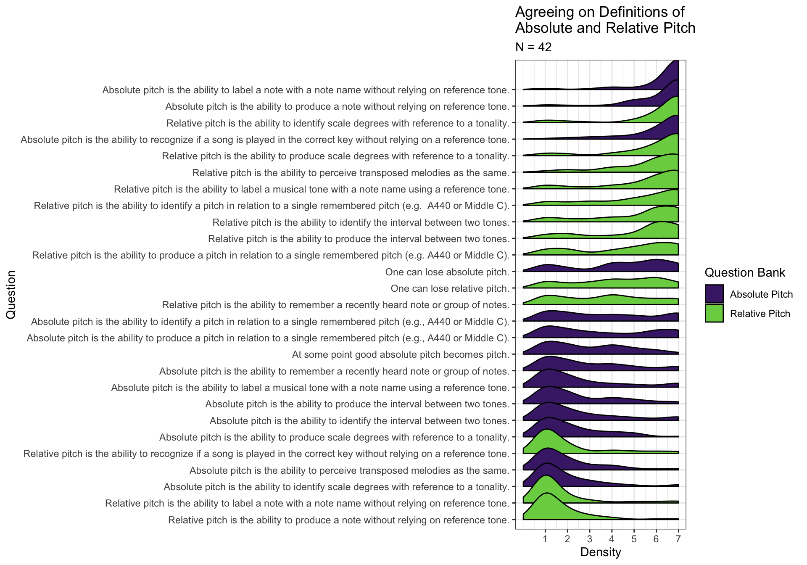
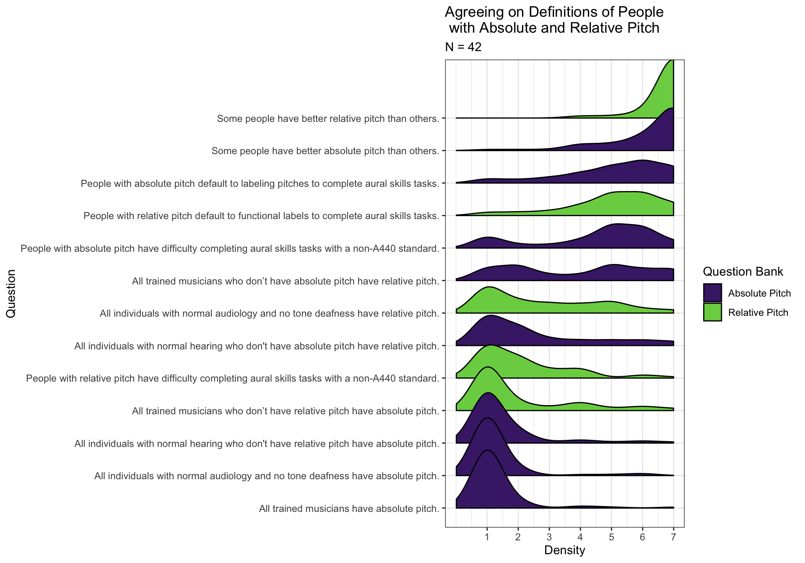
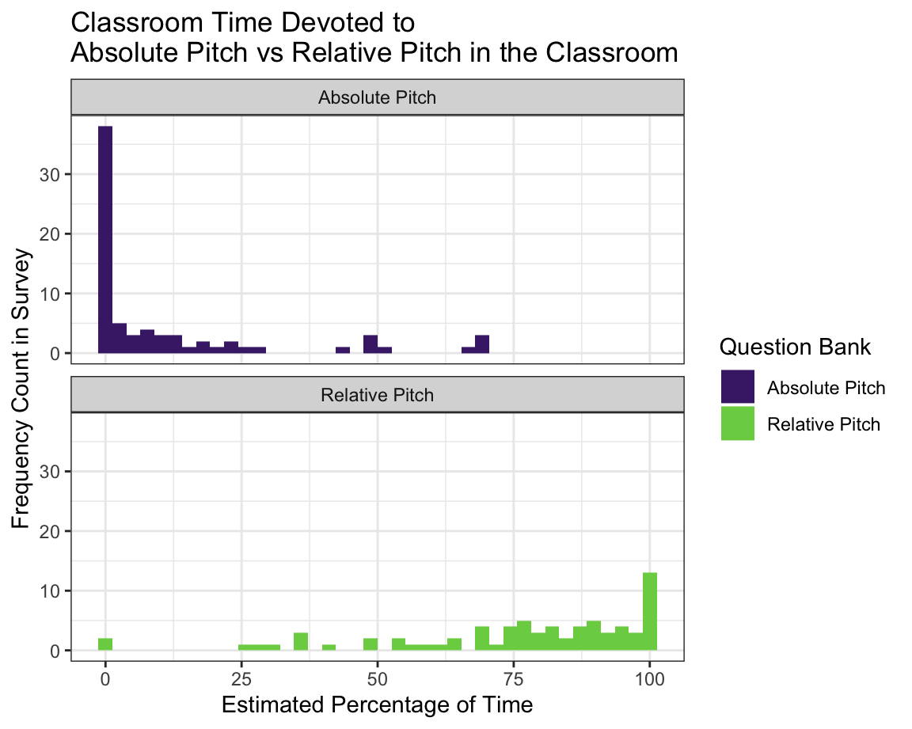
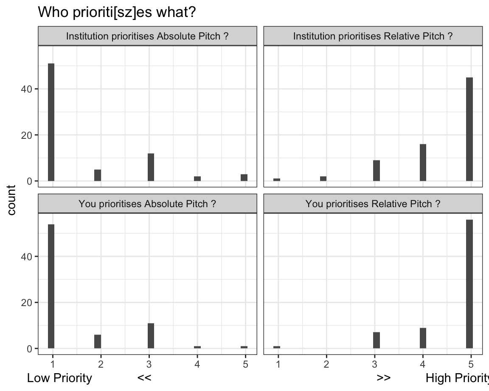
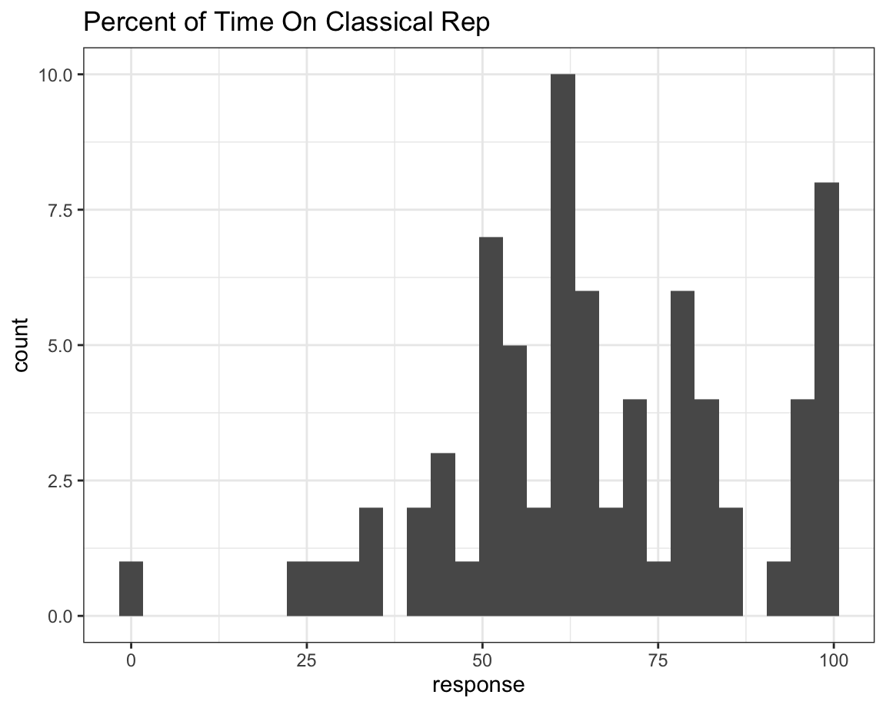
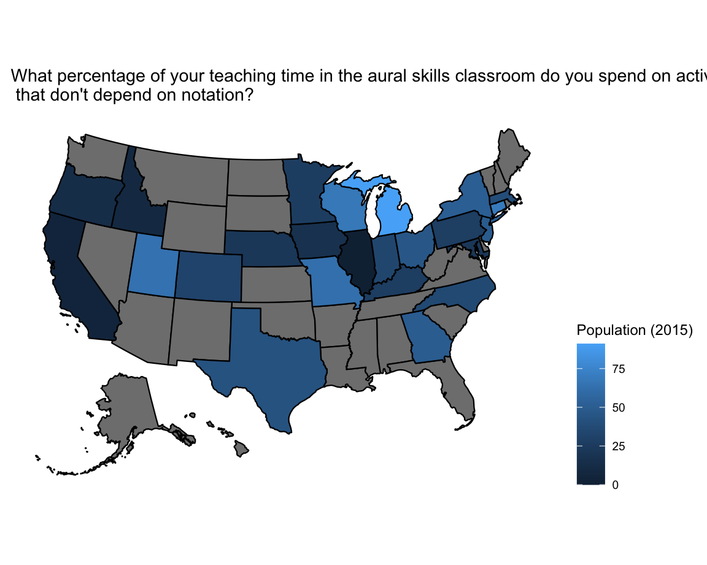

This dashboard is the current repository for the Relative and Absolute Pitch project between Eastman, Peabody, and the University of Amsterdam.
For questions, please contact Dave Baker.
The current ordering reflects the questions as they are asked on the survey.

The first main plot here plots the general agreement and disagreement with each of the definitions of absolute and relative pitch. Answers of “No Response” have been removed.
The answers are ordered in terms of the average response per question. Answers at the top and bottom show the most grouping.
Eventually, the plan for this analysis is to PCA/Factor Analyse this data in order to see if both the AP/RP factors emerge as a dimension as well as the verbs.
| run_id | response |
|---|---|
| 1011 | The only thing I might add is that relative pitch is a skill that can be acquired over time and with practice |
| 1079 | the ability to identify scale degreessolfege and producesingplay on instrument pitches in relation to a given key or tonality |
| 1061 | I would say that relative pitch involves the ability to determine a note or set of notes from a given reference tone or key The determination can be active producing a pitch or passive recognizing or labeling a pitch |
| 1095 | the ability to identify the functional tonic of a passage AND to identify the scaledegree functions of other pitches in relation to the tonic |
| 15 | dasfdas |
| 1480 | Relative pitch can be subdivided into fixed pitch and initial pitchNeither needs any reference sound to name the pitch |
| 1665 | No opinion |
| 1616 | comparing pitch and faster transposition |
| 1677 | an ability can know or produce the interval or the scale level of certain tonality |
| 1678 | Not Applicablen |
| 1706 | Relative pitch is a selfconstructed system having relative pitch may have the ability to understand music in a deeper level |
| 216 | Not applicable |
| 319 | Id say that none of the individual definitions offered entirely captures the concept Recognizing intervals say is probably something that someone with decent relative pitch or perfect pitch + some minimal training can do But it doesnt seem right to say that recognizing intervals therefore is relativeperfect pitch And mutatis mutandis for the rest I was also a little unclear on what you meant by a remembered reference tone Do you mean eg after hearing where A 440 is in the mornings first rehearsal then retaining for the rest of the day I used to be able to do that when I was playing a lot morethough I cant anymore Id call that relative pitch Do you mean knowing where A 440 is all the time still a reference tone just one that doesnt need to be refreshed That sounds like perfect pitch to me |
| 360 | I had a hard time deciding that absolute and relative pitch were exact opposites |
| 386 | a learned ability to perceive relations among pitches |
| 427 | the ability to recognize a frequently at least 3 days ie from Friday to Monday performed pitch such as concert Bflat for concert bandos |
| 395 | the ability to understand that two melodies or any two bits of music are equivalent not the same when they are transposed Likewise in tonal music it is the ability to identify Roman numerals and scale degrees solfege within a tonal key and to hear and produce through singing given intervals scales and melodies and harmonies within a key Relative pitch enables singing melodies in a key even if the given starting pitch isnt what is written on the page Relative pitch shows the equivalency relationship between two sets of music |
| 44 | the ability to identify andor label the intervallic relationship between pitches but not their note names unless given a reference pitch |
| 401 | something one can learn with practice |
| 466 | Relative pitch is the ability to accurately recognize and produce specific pitches in relation to other relevant pitch structures be they reference tones tonalities etc |
| 486 | the application of theoretical constructs about pitch to practiced perceptions of pitch relationships |
| 545 | the ability to determine the relationship of a test pitch to a reference pitch via sonic identification |
| 593 | perception of pitches through their relationships to one other rather than in terms of an internalized sense of absolute pitch chroma |
| 598 | the ability to produce identify and label pitches accurately with reference to some previously known pitch For some this involves a reference pitch such as A440 upon which they can rely as needed while for others this involves hearing a tone for which they have the label and working with that to identify and produce other tones |
| 617 | well absolute pitch encompasses everything relative pitch is and more |
| 670 | It is the ability to accurately hear produce and label musical sounds in relation to other previously identified musical sounds |
| 824 | Relative pitch is the ability to think of two or more tones at once and thus mentally compare their intervallic distance |
| 887 | This is an essential question I struggled with so many of these questions because of the need for definition of the descriptors For example what does identify correct produce mean in the context of absolute and relative Sorry as I know many of these terms come from Richard Parncutt and Daniel J Levitin work in this field but I still struggle I think if we get clarity on these descriptors then we can move towards definitionsnnIve not been terribly helpful I know so here is my go at a definitionnnRelative pitch is the musical ability to recognise a pitch or tone as belonging to a tonality and to understand and reproduce the distance between intervallic and harmonic steps without necessarily identifying the exact frequency and its associated note name For example the musician with relative pitch can produce a major second interval without knowing what the first or second note is in reference to a particular key area of tonality nnnnnn |
| 900 | Not Applicablen |
| 974 | hard to define because it means different things to different people na condition that includes the ability to find the starting note of the next track on a recording because of having heard the recording before |
| 954 | ability to hearsing a pitchesshort melodic segments in key when tonality is established they can hear function of the pitch in given key if they are well trained with movable do solfege they identify the pitch with solfege Strong relative pitch allows listeners to hear quality and function of chords but they do better in a context of tonality |
These are responses to the question:
Relative pitch is…
| run_id | response |
|---|---|
| 1061 | Absolute pitch includes the ability to determine a note or group of notes without a prior reference point The determination can be active producing a pitch or passive that islabeling or identifying aurally a pitch |
| 1081 | Absolute pitch is the ability to identify pitches within 12tone equal temperament based on A=440 without an audible reference tone |
| 112 | Not applicable |
| 1095 | the ability to give letter names to pitches based on longterm memory Working from memory of a single reference pitch is a weaker form of absolute pitch Being able to produce a pitch on request given its letter name is a stronger form of absolute pitch |
| 15 | asdfasdf |
| 1480 | Absolute pitch is the ability to name a pitch without external help |
| 1521 | very good for player |
| 1665 | No opinion |
| 1616 | the ability to accurately identify pitch |
| 1677 | an ability who can know or produce the pitch of one note interval or chord |
| 1706 | People with absolute pitch tends to lack the ability to perceive music has a whole especially in understanding music theory |
| 216 | Not applicable |
| 319 | Most of what I wrote in the previous field about relative pitch applies here too |
| 386 | an innate ability to remember pitches |
| 395 | Absolute pitch is the ability to identify the exact pitch level usually in relation to 12 TET of a given pitch Depending on the person it may be identifiable through timbre synesthesia vocal placement or other mental tools Each person who can access absolute pitch does so differently |
| 44 | the ability to identify a pitch without any reference pitch given |
| 401 | something one is given through exposure at a key period of development and education |
| 466 | Absolute pitch is the ability to accurately recognize and produce specific pitches without needing any reference to other pitch structures |
| 489 | the ability to produce a pitch without a reference tone or the ability to identify the pitch of a sine wave without a reference tonennWhen I was in college I thought I had absolute pitch because I could instantly identify pitches and chords on the piano and other instruments with whose timbre I was quite familiar When our aural skills professor played something in one key but told us it was in another key I had to mentally transpose to get the right notesnnBut in the late 1980s and early 1990s I participated in two studies at the University of Illinois on absolute pitch and I was told by both researchers that because I was unable to identify tones produced as sine waves I had only very good relative pitch Without the upper partials I couldnt do it I am now in my 60s and I have more trouble identifying exact pitches than I used to often I am a halfstep off and sometimes especially with wind music I have no clue I suspect this is due to highfrequency hearing lossnnI know the ability to produce tones without a reference pitch exists because a member of a choir I directed could do it but I never could I think we need more words to describe the various stages of absolute pitch 1 being able to produce a tone on command 2 identifying a sine tone on command 3 identifying tones from instruments with familiar timbres etc |
| 486 | the application of theoretical constructs pitch names frequency designations etc to perceptions of singular pitches |
| 540 | Please see my statement regarding relative pitch |
| 545 | the ability to identify a pitch categorically without the use of a reference pitch |
| 593 | perception of pitches in terms of an internalized sense of pitch chroma such that the chroma of every pitch is clear and distinctive for the perceiver |
| 598 | The ability to produce identify and label any tone without any external reference neither provided immediately prior nor some time prior This ability transcends timbral registral and temporal variation |
| 621 | nA |
| 670 | It is the ability to hear produce and label musical sounds without reference to other previously known musical sounds |
| 824 | The ability to recognize or produce a named pitch without mental comparisons thought or hesitation in the way that people who can see colors recognize that a stop sign is red |
| 815 | something that you are born with or an ability that is developed when the brain is malleable to do develop itsomewhere up to around age 10 I dont believe you can develop this ability as an adult once the age window is closed Some adults who believe they acquired it as an adult may not realize they already had this skill and think they developed it as an adult I know I banged around a tuning fork as an adult hoping to develop that pitch memoryrecognition skill and wellit never happened |
| 887 | So I would therefore reframe this from the first definitionnnAbsolute pitch is the musical ability to recognise a pitch or tone as belonging to a tonality and to understand and reproduce the distance between intervallic and harmonic steps and identify the exact frequency and its associated note name For example the musician with absolute pitch can produce a major second interval and know what frequency and associated note name they are presenting |
| 954 | Ability to identify pitches without any reference Those with strong absolute pitch cannot hear the function of the pitch they hear pitch with letter names even tonality is established They cannot hear function of chords in key they need to spell pitches before identifying the chords |
Reponse to:
Absolute pitch is…

People plot notes.

AP RP in Classroom

Nothing out of the ordinary here.
| run_id | response |
|---|---|
| 1011 | Given a reference note or chord students are asked to identify a given scale degree using a solfege syllable |
| 1011 | I write solfege syllables on the board and point to them in a random sequence asking students to sing each scale degree after I point to it |
| 1011 | During melodic dictation exercises I ask students to recognize notes as scale degrees and then to interpret those scale degrees as notes on the staff in the given key |
| 1079 | Hear a key establishing progression then hear a single chord Students identify the chord using Roman Numerals and bass note |
| 1079 | Students see a string of 45 solfege syllables I play a key progression Students are asked to sing the string in whole notes |
| 1079 | I play a short melodic string of 46 pitches eg 2 bars in 44 with simple rhythms students sing back the string with solfege |
| 1079 | sequentials repeating a short pitch pattern eg lower neighbors on multiple scale degrees |
| 1079 | Students sing melody either at sight or prepared along with accompaniment Change keys either up or down and repeat the performance |
| 1061 | Singing intervals once given a reference tone |
| 1061 | Aural identification of intervals once given a reference point |
| 1061 | Identification of scale degrees within a given tonality |
| 1061 | Written identification of intervals musical dictation given a reference tone |
| 1061 | Written identification music dictation of melodies given a reference tone |
| 1071 | I direct a choir and we start each rehearsal by finding an A without a reference pitch I hold up a hand sign and the students audiate then sing |
| 1071 | When I teach my music education majors to lead sight singing exercises we practice finding an A as I described in my previous response Then from there the students identify what that A represents in the sightsinging exercise theyre about to start From there they find Do and carry on with the exercise |
| 1071 | A choir directed by a colleague uses tuning forks instead of a piano The students constantly are finding their pitches during rehearsal from a tuning fork A |
| 1071 | |
| 1071 | |
| 1081 | Singing scale degrees over a drone |
| 1081 | Taking melodic dictation over a drone |
| 1081 | Analyzinglabeling the scale degrees andor intervals of melodiessongs which are very well known to the individual in order to draw upon these specific examples to identify scale degreesintervals in other contexts |
| 1081 | Singing with a relative syllable system eg moveable solfege or scale degree numbers |
| 1081 | Not identifying the key or name of a reference pitch when giving melodicharmonic dictation Instead labeling a reference pitch by scale degree or giving no label at all |
| 112 | Guided singing with solfege and hand signs |
| 112 | Melodic dictation using solfege only or played at a different pitch level than what is written |
| 112 | Harmonic dictation using only solfege and roman numeral chords or played in another key than what is written |
| 112 | Routine integration of moveable do solfege and scale degrees in classroom activities |
| 112 | |
| 1095 | I teach them my own system of handbody symbols NOT Kodaly which ladder up and down the body when standing to reflect a diatonic scale as well as moving out and back from the vertical center line to reflect tonictriad and other scaledegree functions I establish the tonic and then play invented melodies while they identify the scale degrees by where they place their hands |
| 1095 | I teach the students moveabledo solfege with dominor including chromatic inflections when they reach that level I establish the tonic and they sing melodies in solfege |
| 1095 | I teach harmony according to the three fundamental Reimann functions tonic dominant and predominant I invented dance steps to reflect the nature of each function I establish a key and then improvise chord progressions while they identify Reimann functions by their movements |
| 1095 | Cant think of a fifth one |
| 1129 | Given a tonal framework identify scale degrees |
| 1129 | Sight singing with solfege |
| 1129 | Dictationtranscription of a melody using solfege |
| 1129 | improvisation within a tonalharmonic framework |
| 1129 | interval identificationlabeling |
| 1207 | Play a pitch name an interval and a direction and ask the students to sing the second pitch |
| 1207 | Provide the students a choral score Have one group sing a given part up until the entrance of a second part that does not begin on the same pitch as the first group ends on Have a second group of students enter without aid to a piano or other instrument |
| 1139 | Interval clinic an audio file playing the bass while the screen shows scale degrees such as 42 over the bass and the students are asked to sing back the scale degrees |
| 1139 | transposing a hymn at the keyboard |
| 1139 | |
| 1139 | |
| 1139 | |
| 1194 | Singing in movabledo solfege with handsigns I give students a pitch as tonic and have them sing following my handsigns |
| 1194 | Dictation activities I give the students starting notes key signature and they have to complete the dictation I encourage them to first write the rhythm and then to listen for the notes in solfege syllables before transferring onto the staff |
| 1194 | sight singing melodies using movable do solfege |
| 1194 | contextual listening I play a recording or something at the piano and ask students to identify some musical feature like a chord function or cadence or some other feature that will require them to audiate tonic and something in relationship to that tonic |
| 1194 | chord ID playing triads and sevenths as blocked chords and asking students to identify the qualities |
| 1307 | Playing a melody and having students sing it back on MovableDo solfege or write down the solfege without telling them the key |
| 1307 | Playing a chord progression and having students identify the Roman numerals or phrase structure labels T PD D without telling them the key |
| 1307 | |
| 1307 | |
| 1307 | |
| 1446 | I would like to let my students imitate a melody with 4 measures notifying the pitch of the first note and allowing them to sing every pitch exactly according to the relationship between each note |
| 1446 | |
| 1446 | |
| 1446 | |
| 1446 | |
| 1501 | No contrast A440 reaction relationship of Interval |
| 1501 | |
| 1501 | |
| 1501 | |
| 1501 | |
| 15 | asdfasdf |
| 15 | asdfa |
| 15 | |
| 15 | |
| 15 | |
| 1480 | Use monosyllables such as lato imitate singingrather than necessarily adopting fixed or scale singing |
| 1480 | Use a musical scale to play first and then sing |
| 1480 | Use your inner sense of hearing to build your sound and then sing it |
| 1480 | Use familiar tones to help you remember pitch relationships |
| 1480 | Transposing practice |
| 1521 | sing and listen interval |
| 1521 | |
| 1521 | listen every note |
| 1521 | |
| 1521 | |
| 1588 | According to the specified note sing IntervalnAccording to the specified modal levelthe scale is sung nUse fixeddo system sightsinging and transpose |
| 1588 | |
| 1588 | |
| 1588 | |
| 1588 | |
| 1665 | No opinion |
| 1665 | No opinion |
| 1665 | No opinion |
| 1665 | No opinion |
| 1665 | No opinion |
| 1616 | train according to the students situation if they have relative pitchI will train them perfect pitch |
| 1616 | melodic and harmonic hearing requires relative pitch |
| 1616 | I will let student do transposition practice |
| 1616 | hearing the colorful harmonic colorfulfunctional |
| 1616 | dont use singing name and letter name to sightsinging |
| 1677 | the solfeggio and fabric singing of interval and sight singing of melody |
| 1677 | singing of different tonality scale |
| 1677 | eartraining of the quality of interval and chord |
| 1677 | Accompanied by solfeggio |
| 1677 | successive chord function mark by given standard pitch |
| 1675 | interval |
| 1675 | |
| 1675 | |
| 1675 | |
| 1675 | |
| 1707 | Transfer the melody |
| 1707 | Use the piano to play the melody of transposition |
| 1707 | |
| 1707 | |
| 1678 | scale practice |
| 1678 | interval practice |
| 1678 | Chord practicen |
| 1678 | recite the melody |
| 1678 | transpose melodies |
| 1729 | A440 or A442 is verry impotent |
| 1729 | |
| 1729 | |
| 1729 | fench 1A 1B 2A 2B |
| 1729 | |
| 1727 | Not Applicable |
| 1727 | Not Applicable |
| 1727 | Not Applicable |
| 1727 | |
| 1727 | |
| 1706 | Based on a reference note to ask the students to hum to sing an internal or chord up or down |
| 1706 | Transposition on melodies and harmonies |
| 1706 | |
| 1706 | |
| 1706 | |
| 173 | Identifying interval size aurally |
| 173 | Sightsinging |
| 173 | Singing solfege syllables from hand signs |
| 173 | Identifying cadence types by ear |
| 173 | Listening to chord progressions and singing back bass lines |
| 216 | sight singing in scale degree numbersmoveable do solfege |
| 216 | Having students write down melodic dictations in different keys from those in which theyre performed |
| 216 | Identifying intervals in scalekey contexts |
| 216 | establishing a key and having students audiate and sing familiar melodies using scale degree numbers or movable do solfege |
| 216 | Having students notate a familiar melody without recourse to a musical instrument or other external identifier of pitch |
| 226 | Listening to a series of arhythmic melodic passages to identify the scale degrees used |
| 226 | |
| 226 | |
| 226 | |
| 226 | |
| 285 | Singbacks Play a brief tonal pitch pattern have the students sing it back on neutral syllables play it again have them sing it back using moveable do |
| 285 | Sightsinging using moveable do |
| 285 | Harmonic dictation students listen to a passage sing back the bass line on neutral syllables then write the bass using moveable do and add figures keeping in mind whether a bass notes chord sounded like it followed the expected Rule of the Octave or whether it sounded different |
| 285 | Melodic dictationtranscription students remember portions of a melody then provide moveable do syllables before notating it given the do |
| 285 | Melodic improvisation using sung moveable do syllables |
| 295 | A common warmup I use is ascending chromatically from a note using interval numbers students sing 01 02 03 04 etc all the way to 012 then back down |
| 295 | I often do sightsinging activities in multiple keys while looking at a single score excerpt Sometimes this is for clef practice but more often it is so students are hearing intervals instead of single pitches |
| 295 | Dictating in keys other than the music that is sounding I personally do not use this activity because I find that AP students will simply transcribe it in the sounding key and transpose while many mostlyRP students will still struggle to notate it in the written key So I find it to be more trouble than its worth |
| 303 | After a key is established by the instructor student is required to recognize or produce various scale degrees in that key |
| 303 | Singing with fixeddo solfege over a long period |
| 303 | Identifying scale degrees emphasized in played melodies |
| 303 | |
| 303 | |
| 288 | Students read from traditional European musical notation at sight as a group |
| 288 | Students read from traditional European musical notation at sight individually |
| 288 | I sing short melodic fragments on a neutral syllable and students repeat them using scale syllables |
| 288 | I play music and students transcribe what they hear |
| 291 | Melodic dictation by ear |
| 291 | Transposing melodies at sight while singing |
| 291 | Transcription of melodies and chord progressions |
| 291 | |
| 291 | |
| 319 | Again I dont teach eartraining directly I never really had trouble hearing or producing intervals though again Ive gotten worse at this as I spend less of my time engaged in practical musicmaking so I never quite got the point of having students associate an interval with a particular melody they knew eg tritone = The Simpsons But they do this over in aural skills and whatever theyre doing clearly worksbecause when I ask my freshmen to sight sing a chorale in their first term they fall apart But my sophomores can do it |
| 319 | Im running out of activities hereI guess this either suggests that I dont care that much about fostering relative pitch though I suppose I should or that I dont really see it as my job or at least as my principal job Probably the latter since again we have a very sharp divide between our aural and written theory sequence |
| 319 | |
| 319 | Ok one more Improvised counterpoint is really great practice for this now that I think of it If you can spontaneously recognize intervals and reproduce them accurately from a different starting pitch eg in a canon a fifth above or below thats surely a sign of pretty good relative pitch or absolute pitch When I was doing a lot of this some years ago my intervals got a lot better againnnAlso maybe this could be 4 sightsinging medieval and renaissance music from old notations is good practice if like me you dont read those notations very well and so need to rely on reading intervals and listening to the parts around you |
| 32 | Dictations harmonic and melodicnGiven the starting note or tonic triad students must use interval skillsrelative pitch ability to figure out the melodicbass line as well as listening to chordal quality during harmonic dictations |
| 32 | Sight singing giving students the tonic triad and having them sightsing a melody |
| 32 | Intervals using different songspieces that will help students identify different intervals Major 6 minor 3 etc |
| 32 | NA |
| 32 | NA |
| 313 | |
| 313 | |
| 366 | Sightsinging tonal melodies using solmization |
| 366 | Dictation of tonal melodies |
| 366 | Dictation of tonal harmonies using Roman numerals |
| 366 | Discrete interval identification |
| 366 | Keyboardaided transcription of popular song melodies |
| 360 | Singing scale degrees given a tonic |
| 360 | Finding the leading tone with your voice given the dominant |
| 360 | Given the tonic finding a major third above it |
| 360 | Finding a minor third above the tonic with your voice |
| 360 | Finding the leading tone below the tonic given the tonic with your voice |
| 371 | singing with moveable do solfeggi |
| 371 | melodic dictation asking students to sing back with moveable do solfeggi |
| 371 | establish a key on the piano and ask students to sing a particular scale degree including chromatic scale degrees |
| 371 | improvising pitch patterns over a chord progression using moveable do solfege |
| 386 | distinguishing among basic types of tetrachords in varied combinations voicings and transpositions |
| 386 | Identify whether the consequent of a period phrase modulates |
| 386 | singing arpeggiations of intervals or trichords given by label |
| 386 | NA |
| 386 | NA |
| 427 | Asking students to sing a Bflat |
| 427 | The instructor plays a Bflat on the piano and students should write down on a piece of paper the name of the pitch |
| 427 | Ask a student to perform a concert Bflat on an instrument and ask students to write down the name of the pitch on a piece of paper |
| 427 | Play a pitch on the piano and ask students to identify the octave using C4 as middle C for example |
| 427 | Instructor plays a chord and the students should write down the name of the chord eg C major |
| 395 | For dictation skills I will play a melody in a key but have the students notate it in a different key therefore at a different pitch level |
| 395 | I give the students intervals or interval chains to identify based only on the interval not on the actual pitches produced |
| 395 | I create harmonic progressions for dictation in the skills classroom Instead of having them notate it on a staff I have them notate the scale degrees solfege of the outer voices along with the Roman numerals of the progression |
| 395 | In the posttonal skills classroom I use melodies from Modus Novus to teach listening for intervals and notating nontonal melodies I will have them notate the melody in a different key than I play and listen for interval from pitch to pitch with a set number of intervals at play in a melody |
| 395 | In the posttonal classroom I teach hearing harmonic trichords which is entirely based on relative pitch as I have them give their prime forms with no relation to the actual pitches played |
| 44 | Play a reference pitch and tell students its name Then play various pitches and ask students to name them Students should be able to identify note names based on the interval between the reference and the pitch in question |
| 44 | Have students sight sing a melody in a key other than the one it is notated For example if a melody is in Eb major have them also read it in F major G major etc |
| 44 | Have students practicerecite moveabledo solfege syllable exercises |
| 44 | Play and ask students to identify the qualities of intervals triads and seventh chords but not the note on which they are based |
| 44 | Play a reference pitch on the piano and tell students its note name Then give another note name and have students produce this pitch |
| 401 | teacher provides a melody sung live instrumental or recording and asks students to use protonotation to dictate to solfegepitch numbers nTeacher can ask students to dictate rhythm using dashes of relative lengths or not If using syllables students may prefer to use just first letter of solfege |
| 401 | Teacher provides a melody and asks students to sing back starting on a different starting note That note may be provided by the teacher or chosen by the student |
| 401 | Teacher provides protonotation or solfege syllables and prompts students to produce the indicated melody either using a given or chosen starting pitch I often use this as a point and sing where I point at the solfege and the class sings together on solfege using a given starting notennAlso just thought of another activity that I use a LOT and is perhaps the most successful thing I do to develop relative pitch singing into the key Karpinskistyle This helps students be so much more successful in their sight reading and prepared singingnnMy rating is for the first exercise I described here |
| 466 | Dictation and sightsinging activities using entirely functional systems SDs or solfège |
| 466 | |
| 466 | |
| 466 | |
| 466 | |
| 453 | Singing a rote melody without notation on solfege in multiple keys back to back |
| 453 | |
| 453 | |
| 453 | |
| 453 | |
| 489 | Have students pick out modulations when listening to a movement in sonataallegro form |
| 489 | Have students sing domisolmidotido then sing a phrase at sight |
| 489 | |
| 489 | |
| 489 | |
| 486 | Call and response the call is performed without labels the response is sung on solfege |
| 486 | Have the students practice singing a tonal melody on solfege |
| 486 | Students improvise singing on solfege syllables |
| 486 | Melodic dictation using protonotation to indicate pitch relationships either scale degrees or solfege syllables |
| 486 | Harmonic dictations focusing on tonal functions and relative bass lines |
| 511 | I ask students outside of class to learn to sing melodies from notation on solfege |
| 511 | We have students improvise along to simple chord progressions asking them to emphasize chord tones |
| 511 | Melodic dictation without a keydefining progression or starting note given |
| 511 | |
| 502 | Singing specific intervals rather than relying on solfege |
| 502 | Producing harmonic progressions either by singingplaying arpeggios or playing on harmonic instruments |
| 502 | Identifying the interval between two notes |
| 540 | Giving a pitch then an interval and interval direction in solfege such as misol ascending and asking a student to sing the correct interval |
| 540 | Playing an interval then asking a student to identify it |
| 540 | Giving a student a pitch then stating a series of intervals and directions for instance M3 up P4 down m2 down M6 up then asking the student to sing the final pitch |
| 540 | I play and name a starting pitch then play a short series of ascending and descending intervals having the students identify not only each interval and its direction but also the ending pitch |
| 540 | Providing the starting pitch I ask a pair of students to sightsing a Lassus bicinia |
| 545 | Playing a melodic dictation exercise with a given reference tonic |
| 545 | Students identify the chordal 3rd and 5th of a chord by sound |
| 545 | NA |
| 545 | |
| 545 | |
| 593 | Sight singing using movabledo solfège syllables |
| 593 | Singing pitches from CurwenKodaly hand signs given by the instructor |
| 593 | Identifying the movabledo solfège syllable of one or more pitches in a melody played on piano or in an excerpt from a recording |
| 593 | Identifying the Roman numerals of one or more chords either arpeggiated in a melody or in a progression of block chords |
| 593 | Singing guidetone lines along with a recording using movabledo solfège syllables |
| 598 | I dont know if this qualifies but developing an intervalsong chart ie a reference in which each interval smaller than an octave is learnedremembered with the opening few notes of a song that use it |
| 598 | NA |
| 598 | NA |
| 598 | NA |
| 598 | NA |
| 556 | Singing pentascales major and minor while playing them at the piano both hands in octaves The pattern is learned while singing solfege Once the pattern is memorized labels switch to letter names |
| 556 | Harmonic singing sing chord arpeggios beginning with the guide tone ascending through the arpeggio and descending to return to the guide tone |
| 556 | Singing on any label system ascending descending thirds in both major and minor keys ascending descending 4ths 5ths |
| 556 | Sing intervals on any label system ascending from tonic to each scale degree in the pentascale dore major second domi major third etc and also descending from the dominant sofa major second somi minor third etc |
| 556 | |
| 617 | Telling the difference between for example an A and a Bb just by sheer rote repetition |
| 617 | Having a solfège chart on the board and pointing to various syllables as they sing them |
| 617 | Give a reference pitch then ask students to sing a specific interval abovebelow it |
| 617 | Play a melodic interval and have students tell the interval |
| 617 | Present a melody in a key transpose it by a certain interval then have the students sing the transposed version |
| 621 | na |
| 621 | na |
| 621 | na |
| 621 | |
| 621 | |
| 670 | I have my students sing and hear all tonal structures as scale degrees around an implied or given tonal center For example minor thirds are MiSol scale degrees 35 in a major key Minor seventh chords are ReFaLaDo 2461 in a major key |
| 670 | My students sing melodies as combinations of scale degrees All pitches are heard as scale degrees in a given or implied key |
| 670 | My students learn idiomatic scale degree patterns for each scale degree |
| 670 | My students learn to modulate by relabeling a pitch as a scale degree in the new key |
| 670 | My students sing all of the scales modes and chords starting from the same pitch in quick succession paying particular attention to the shifting of the tonal centers and pitch function as they do so |
| 747 | identifying heard intervals with one or two playingsn |
| 747 | melodic dictation |
| 747 | |
| 747 | |
| 747 | |
| 824 | Starting with a given pitch think of it as scale degree 1 and sing up the scale from it 12 13 14 15 16 17 1upper1 Then sing down the scale upper17 16 15 14 13 12 1lower1 |
| 824 | Imagine a familiar melody sing it then apply scale degrees to the notes while singing |
| 824 | Sing the chord progression I ii6 V I using arpeggiations upward and back down from the bass note of the Roman numeral and figure in close position without adding any upper octaves |
| 824 | Sing back a short melody performed on the piano using scale degrees |
| 824 | |
| 815 | Playing a short melodic fragment and asking the students to say what was played using moveable solfege syllables |
| 815 | Writing solfege syllables on the board and pointing to the syllables on the board with the expectation students will sing the correct notes relationships against an established tonic |
| 815 | singing successive various kinds of scales in a row starting on different given tonic pitches |
| 815 | Having students sight sing a melody in a different key than is written |
| 815 | teaching harmonic cliche progressions eg IIVVI or IviIVVI or cadential 65 V I and not telling them what key I am in having students tell me what I play based on Roman numerals rather than notes on a staff |
| 695 | When practicing an assigned melody I have students sing the melody on la on scale degree numbers and on solfege I then provide them a new key and tonic and we sing the melody again in the new key on la on the same scale degrees and on the same movabledo solfege |
| 695 | In dictation of melodies I allow students to write out their answers in a key of their choosing |
| 695 | For interval practice I specify an interval eg P4 then play at the piano a starting pitch then ask students to sing the P4 above the given pitch I then move to another starting pitch and students sing the P4 above the new pitch And so on |
| 769 | Dictation in the style of Dr Karpinskis textbook |
| 769 | Singing arpeggiated triads within major and minor keys tonic dominant etc |
| 769 | Sight singing and practice singing in solfege Only the first pitch is given in advance |
| 769 | error detection |
| 769 | Singing whole and half steps singing major and minor third |
| 841 | Posttonal playing a trichord and asking students to identify the constituent interval classes |
| 841 | tonal playing a IVI and asking students to sing a scale degree |
| 841 | dictation exercises from Modus Novus given a starting pitch and no key center students identify intervals |
| 841 | singing scale degree patterns on scale degree numbers |
| 841 | playing a posttonal pattern at a piano and asking students to sing it back on interval numbers |
| 887 | Shameless plugnnnRethinking the Guidonian Hand for twentyfirst century Musicians in the Journal of Popular Music Education 2017nn The immediate recognition and description of the thirteen enharmonic intervals within an octave is a quest upon which students on popular music degree programmes frequently embark but which they rarely complete The problem often lies in a disconnect between the sound heard and the sound recognized when the task is undertaken without recourse to an instrument During the eleventh century Guido dArezzo used the joints on the hand phalanges to help music students recognize and sing intervals from hexachords This article considers rethinking this tool with regard to recent investigations into corporeal intentionality The approach is developed across three short incremental exercises that are designed for the twentyfirst century musician It begins by connecting the familiar singing of a major scale whilst pointing to the phalanges of the hand moving towards inflecting the scale by singing and pointing to nonsequential intervalsnn nGILES First Exercise httpswwwyoutubecomwatchv=Xyq6sLkj10 nnGILES Second Exercise httpswwwyoutubecomwatchv=77VBWP9zWKk nnGILES Third Exercise httpswwwyoutubecomwatchv=WMIOO5bE7Cw |
| 887 | A beginners introduction to Moveable Do with hand symbols |
| 887 | Gotta be honest these are the two that I used the most |
| 887 | Erm as before |
| 887 | na |
| 830 | Do a melodic dictation where I tell the students the melody is in eg Eflat Maj and then in eg Amajor give the tonal context either I or a IIVVI progression and play the melody with however many hearings I said Not saying anything about the key until MAYBE after the exercise is over |
| 830 | Rather than point to written solfege on the board give a starting do and go updown doing hand signals a la a medieval choirmaster where going up or down a T involves raisinglowering my hand whereas for a ST not only change the hand heightLESS than for a Tbut also flip the palm 180 Thus visual cue for the change in interval size as well as visual indication of pitchheight change |
| 830 | Play tagyoure it give a starting Do tell someone Sing dorefami then pick someone else and tell them sing the same or give some other short pattern where the last pitch stopped on is now the new Do |
| 900 | I teach six year olds I use the Orff Kodaly method starting from the basic soh Me Sing and Play Children are asked to sing and play the sohme interval through imitation As the term progresses children are asked to create and improvise using just these 2 sounds Lah is subsequently introduced followed by ray and doh The pentatonic solfege is an excellent way for me to make my pupils internalise different sounds |
| 900 | With students in H E taking partwriting and voice leading I like to choose popular music and ask them to find chord progressions and modulations |
| 900 | Singing SATB especially in Part writing and voice leadingListening to each other especially when learning chromatic harmony |
| 900 | Intervals I teach 1 interval every weekmy students need 1 week to assimilate and internalise the interval upwards and downwards of each intervalit is a cumulative process which need reinforcement every week |
| 900 | Melodic dictation this is the most difficult for my students I help out by providing the first note of each bar pinpointing to particular sounds for example the tritone the octave etc |
| 896 | When sight reading melodies we will move from one exercise to the next without reference to the piano using the previous tonic to find the next |
| 896 | I use Curwen hand signs From any starting pitch I improvise melodic shapes and expect the students to sing the correct pitch These are often disjunct and require a connection to the original tonic not just the previous pitch |
| 896 | |
| 896 | |
| 974 | When Im teaching students to hear modulation to the dominant I ask them to practice singing a pitch pattern that establishes the tonic key and then moves to establish the dominant key I encourage them to improvise these pitch patterns and to vary them After modulating to the dominant I ask them to go back to the original tonic So Im trying to cultivate a sense of pitch memory which I think is a strong component of relative pitch |
| 974 | Rifkin and Stöcker came up with a set of Scale Degree Resolution Patterns I teach this and then use it for practice identifying scale degrees in a diatonic setting |
| 974 | I use the Scale Degree Resolution patterns to help students find their ways into a variety of keys Heres how and Im sure that Stoecker and Rifkin suggested this after students are accomplished in identifying SDs scale degrees from the same key one can have them take a pitch and sing the resolution pattern for any scale degree For instance give them a D and ask them to sing the MIREDO pattern or the LATIDO pattern or any other scale degree So students become more adept at treating a note as any kind of diatonic member of a scale |
| 974 | A preliminary exercise I use for teaching how to hear chromatic mediants is to have students sing major triads and then minor triads down from the soprano note with the same soprano pitch serving alternately as root 3rd or 5th So students sing DOSOLMISOLDO for example CGEGC then MIDOSOLDOMI CAbEbAbC then SOLMIDOMISOL CAFAC |
| 974 | I prepare students to hear modulations via enharmonically reinterpreted o7 chords by practicing hearing viio7 resolutions from all inversions viio7I viio65 I or I6 viio43I6 and viio42 to I64 When theyre confident of that they can then hear a o7 chord used as one inversion and then the same o7 chord resolve in a different keyimplying a different inversion They can track the bass and determine the key |
| 989 | Teacher provides a tonic and students sing the scale Teacher shows solfege hand signs and students sing the appropriate pitches |
| 989 | Teacher provides a tonic students sing the scale Teacher calls out chords for students to arpeggiate on solfege |
| 989 | Melodic dictation exercises |
| 989 | Improvisation exercises students play chords on piano or guitar and improvise a melody over the progression on solfege First time only chord tones second time with embellishing tones added |
| 989 | Sight singing melodies For students with perfect pitch transpose the exercise to a different key so they have to think functionally |
| 954 | Emphasis of using movable do in singing melodies and harmonic progressions Listen and sing back play short segment of melodies ask them to memorize and sing back without solfege first once they memorize ask them to sing tonic then sing back with movable do solfege Use same harmonic progressions for singing and dictation |
| 954 | Emphasis on using movable do identifying chord quality and function in key |
| 954 | Ive written my responses in previous boxes |
| 954 | |
| 954 | |
| 922 | Sight Singing on solfege for a melody notated in one key that needs to be sung in another |
| 922 | |
| 922 | |
| 922 | |
| 922 |
TODO: Join on Difficulty Level for Single Activities TODO: Check Import Code, some answers lost because csv import error!
| run_id | response |
|---|---|
| 1011 | I play a melody at the piano without telling students what key it is in They are asked to notate it in the correct key |
| 1011 | I play a harmonic progression on the piano without telling students what key it is in Students are asked to notate the outer voices in the correct key |
| 1011 | Using specialized software I alter a recording of a wellknown piece transposing it up by some interval I play that transposed version for students asking them to identify the interval of transposition based solely on the difference between the notated key and the heard recording |
| 1011 | original melodies melodies found in published public domain pieces original harmonic progressions in SATB style Bach chorales original rhythms Classicalera piano sonatas etc |
| 1079 | Students go around in a circle with each student singing one note from a melody that is written in multiple moveable clefs one clef per note |
| 1079 | |
| 1079 | |
| 1079 | |
| 1079 | poprock music some folk classical ie galant romantic baroque including some Bach chorales early jazz |
| 1061 | No answer |
| 1061 | No answer |
| 1061 | No answer |
| 1061 | No answer |
| 1061 | SingingFixeddo solfege using graded materials Folk songs Bach chorales Singing of intervals Take a musical example with a melody and a bass line sing one part and play the other Dictation in one and two parts Chordal dictation using chord progressions and chorales |
| 1071 | |
| 1071 | |
| 1071 | |
| 1071 | |
| 1071 | I dont currently teach aural skills I teach a Fundamentals class |
| 1081 | Playing call and response with instruments In other words the instructor sings or plays something on an instrument and the students play it back by ear using their preferred musical instrument but not by singing |
| 1081 | Singing very wellknown pop songs from memory The songs should be very wellknown from a specific recordingartist |
| 1081 | Singing melodies using fixed pitch names eg note names like CF etc or fixed Do syllables |
| 1081 | Identifying the name of reference pitch or key when giving melodic dictation |
| 1081 | world music folk songs choralestyle melodies precomposed original melodies melodies in different tuning systems |
| 112 | Using no reference pitch conduct a quiz where you play a series of pitches electronically generated Ask students to name each note and whether it was sharp or flat from an equal tempered note at A440 Ask them to identify how many cents sharp or flat it is |
| 112 | |
| 112 | |
| 112 | |
| 1095 | Students sing melodies on letter names or fixeddo solfege |
| 1095 | NR |
| 1095 | NR |
| 1095 | NR |
| 1095 | Folk songsnWestern art music |
| 1129 | Identify a tone by note name |
| 1129 | Sight sing on note names |
| 1129 | Dictation emphasizing note identification rather than function |
| 1129 | Practice producing a specific reference pitch eg A440 |
| 1129 | folk songs popular songs chorales excerpts from commonpractice period repertoire |
| 1207 | I have never thought about absolute pitch pedagogy and do not have anything to offer |
| 1207 | I have never thought about absolute pitch pedagogy and do not have anything to offer |
| 1207 | I have never thought about absolute pitch pedagogy and do not have anything to offer |
| 1207 | I have never thought about absolute pitch pedagogy and do not have anything to offer |
| 1207 | Most of the repertoire of the current curriculum is drawn from Karpinskis Anthology Some popular music is added |
| 1139 | |
| 1139 | |
| 1139 | |
| 1139 | |
| 1139 | Bach choralesnRenaissance choral worksnBach fuguesnBeethoven sonatasnClassical symphonies such as Mozart Haydn etcnSchubert songs |
| 1194 | na |
| 1194 | na |
| 1194 | na |
| 1194 | na |
| 1194 | canonic and noncanonic pieces by women persons of color etc baroque classical and romantic music and equally lots of popular musics pop rock jazz standards broadway folk americana country RB especially post 1980 hits |
| 1307 | |
| 1307 | |
| 1307 | |
| 1307 | |
| 1307 | Hymn tunes chorales string quartets symphonies slow movements of pieces solo etudes folk songs popular songs electronic dance music with strong bass lines |
| 1446 | |
| 1446 | |
| 1446 | |
| 1446 | |
| 1446 | Chinese folk songs with pentatonic scalesnThe textbooks of Solfege from China Conservatory of Music Shanghai Conservatory of Music Central Conservatory of MusicnSolfege des solfegesnpolyphony of Игорь Владимирович Способинnn |
| 1501 | |
| 1501 | |
| 1501 | |
| 1501 | |
| 1501 | France SolfeggioSposobin |
| 15 | asdfasdf |
| 15 | |
| 15 | |
| 15 | |
| 15 | asdfasdf |
| 1480 | Transposing practice |
| 1480 | |
| 1480 | |
| 1480 | |
| 1480 | Classicalpopjazzfolk |
| 1521 | |
| 1521 | listen every note |
| 1521 | listen and sing |
| 1521 | listen |
| 1521 | classic |
| 1588 | |
| 1588 | |
| 1588 | |
| 1588 | |
| 1588 | 中国音乐学院视唱练耳分级教程 中国五声调式民歌与经典旋律 |
| 1665 | |
| 1665 | |
| 1665 | |
| 1665 | |
| 1665 | folk songs Bach chorales |
| 1616 | sing the chromatic scale start from any pitch |
| 1616 | practice the pitch of only one particular range at one time |
| 1616 | sing different key scales without A |
| 1616 | |
| 1616 | folk songs classical songjazzpopular song |
| 1677 | Repeated listening training in groups of several tones |
| 1677 | Interval model singing |
| 1677 | Listen and distinguish of interval |
| 1677 | Listen and distinguish of chord |
| 1677 | Chinese folk songs Yao nationality Dance music |
| 1675 | |
| 1675 | |
| 1675 | |
| 1675 | |
| 1675 | folk songsclassical choralesjazz |
| 1707 | Singing a Solfeggio with a fixed roll |
| 1707 | Dictation practice of melody |
| 1707 | |
| 1707 | |
| 1707 | Vocal music String Quartet childrens songs folk songs |
| 1678 | none |
| 1678 | none |
| 1678 | none |
| 1678 | none |
| 1678 | folk songschoralesBachMozartBruckner etcclassical music worksjazz |
| 1729 | |
| 1729 | NR |
| 1729 | nr n n n n n n n n n |
| 1729 | nr nnnnnnnnn |
| 1729 | Bach chorales |
| 1727 | Not Applicable |
| 1727 | |
| 1727 | |
| 1727 | |
| 1727 | mozart |
| 1706 | |
| 1706 | |
| 1706 | |
| 1706 | |
| 1706 | Mozart requiumnMessiaen quartet for the end of timenWestern Art Song |
| 173 | Using fixed do |
| 173 | Dictation exercises |
| 173 | Playing random pitches and asking students to remember them |
| 173 | Listening to how different notes resonante differently to help identify absolute pitches |
| 173 | Folk songs Bach chorales standard repertoire from the Western classical canon |
| 216 | |
| 216 | |
| 216 | |
| 216 | |
| 216 | folk songs popular songs Bach chorales composed chord progressions melodic excerpts from a broad range of repertoire |
| 226 | |
| 226 | |
| 226 | |
| 226 | |
| 226 | Use a mixture of melodies and harmonic progressions from various styles of music |
| 285 | |
| 285 | |
| 285 | |
| 285 | |
| 295 | |
| 295 | |
| 295 | |
| 295 | |
| 295 | LOTS of art song especially 19thc German some jazz tunes a lot of Renaissance through 19thc choral music and a smattering of gospel tunes for hearingsinging harmony in backing vocals |
| 303 | |
| 303 | |
| 303 | |
| 303 | |
| 303 | Any and all repertoire that uses pitched material |
| 288 | NA |
| 288 | NA |
| 288 | NA |
| 288 | NA |
| 291 | |
| 291 | |
| 291 | |
| 291 | |
| 291 | popular music |
| 319 | |
| 319 | |
| 319 | |
| 319 | |
| 319 | I dont teach aural skills |
| 32 | NA |
| 32 | NA |
| 32 | NA |
| 32 | NA |
| 32 | Lots of different repertoire from Gregorian chant for work on modes to jazz and 20th century material like Bartok |
| 313 | |
| 313 | |
| 313 | |
| 313 | |
| 313 | There is no type of repertoire that I dont use I have used traditional music from all over the world I use South and North Indian classical music I use classical repertoire all genres I use jazz I use popular music I use Broadway I have used some North American indigenous music but with care that I am not usingsharing sacred or other music that the communities in question are not open to sharing I dont use all of these in every semester but over the course of a year my students have met at least one example in most of these categories |
| 366 | Prolonged listening to specific pitches |
| 366 | Intensive vocal training with an emphasis on identifying pitches based on personal vocal range |
| 366 | Repeated listening and singing along to popular music recordings in identified keys |
| 366 | Deliberate induction of tinnitus |
| 366 | anthology repertoire specifically Ottman sightsinging textnpopular music from several genresncustomized and improvised melodies rhythms and chord progressions |
| 360 | Finding the A corresponding with the violin string with your voice |
| 360 | Not applicable |
| 360 | Singing the opening pitch of a song you know |
| 360 | Singing the pitch that an oboe uses to tune the orchestra |
| 360 | Bach chorales Schubert Lieder Negro spirituals folk songs |
| 371 | playing a pitch then asking students to sing it back after hearing an intervening melody in which that pitch doesnt appear |
| 371 | asking students to sing the last pitch they heard before they arrived at class |
| 371 | teaching by using fixeddo solfege |
| 371 | asking students to sing with letter note names |
| 371 | classical music pop music my own madeup melodies |
| 386 | na |
| 386 | na |
| 386 | In the distant past I experimented using David Burges pedagogy |
| 386 | na |
| 386 | Melodia Modus Novus SATB texture Bach Franc Stravinsky Webern |
| 427 | Ask students to individually sing a given pitch eg A 440 |
| 427 | Play A 430 and ask students to comment on the pitch to see if they notice that its off |
| 427 | Play A 430 and ask students to write down if the pitch is either A430 or A440 |
| 427 | Ask students to listen to piece of music by Haydn like a symphony or Mozart like a piano concerto and to create a synethsesia like D major equals royalty and purple |
| 427 | Whatever is in the book so folk songs and Bach chorales |
| 395 | I have recognized my own ability to listen for and hear absolute pitch on my own instrument in recordings in live performance etc albeit underdeveloped I have encouraged my students to do the same for their instruments |
| 395 | I could imagine playing a melody or singing a melody and having the students figure out at least a key range by placing it in their own voices This would foster absolute pitch based on vocal placement |
| 395 | I could imagine playing pieces for the students and having them remember through listening the starting key The pitch memory of the beginning of the work may foster absolute pitch |
| 395 | Im out of ideas |
| 395 | Chorales Mozart Beethoven Haydn Pop songs Broadway songs Gospel the students bring their own examples sometimes |
| 44 | Sightsing a melody using fixed do solfege syllables |
| 44 | Play an excerpt of music and ask students to identify its key |
| 44 | Have students sing a tone row atonal melody or other sequence of pitches without tonal references |
| 44 | Play a complex polychordcluster chord Ask students to identify the pitches present |
| 401 | Teacher asks students to imagine listening through a very well known recording in silence Students may choose anything they know well Teacher asks how detailed the audio image was including pitch instrumentation tempo lyrics if applicable etc Was everything equally detailed How sure are they that they heard it at pitch |
| 401 | Teacher asks students to produce notes by name using their voice |
| 401 | Teacher asks students to imagine playing a specific note on their instrumentthe piano and then hum that note |
| 401 | Teacher asks students to name pitch of sounding notes in various timbres piano string insts voice multiinstrument recordings etc |
| 401 | music from Karpinski anthology improvisation popular music current top 10 and from the past 50 years folk music |
| 466 | |
| 466 | |
| 466 | |
| 466 | |
| 466 | Folk songs lieder mélodie art song music theater popular songs jazz standards from lead sheets classical repertoire solo orchestral chamber Bach chorales |
| 453 | |
| 453 | |
| 453 | |
| 453 | |
| 489 | |
| 489 | |
| 489 | |
| 489 | |
| 489 | I have never taught aural skills just firstyear written theory |
| 486 | Singing A without a reference tone |
| 486 | Associating colors with pitches |
| 486 | Pitch memory exercises where the students need to remember longer and longer sequences presented aurally and performed back on pitch names |
| 486 | Clef reading or transposedpart reading from scores while playing other parts on the piano |
| 486 | Europeanoriginating art and folk music afrodiasporic music jazz blues rock rap hiphop bluegrass etc Karnatic ragas Peking opera patterns |
| 511 | |
| 511 | |
| 511 | |
| 511 | |
| 502 | Identifyingproducing a specific pitch without a reference |
| 502 | |
| 502 | |
| 502 | |
| 502 | Folk songs elementary music education repertoire bespoke compositions in references OttmanRogers |
| 540 | I play a series of single pitches on the piano asking students to identify each one but between each pitch ID I play several cluster or other atonal chords in order to erase their pitch memory |
| 540 | I play a chord of at least three pitches and ask students to identify all the pitches present |
| 540 | I name then ask a student to sing a particular note without giving a reference pitch |
| 540 | I play an unfamiliar tonal piece or excerpt for students and ask them to identify the key it is in |
| 540 | Mostly I use selections from Cengages Music for SightSinging and Music for EarTraining |
| 545 | |
| 545 | |
| 545 | |
| 545 | |
| 545 | Bach chorales simplifications of chorales melodic fragments melodic singing |
| 593 | |
| 593 | |
| 593 | |
| 593 | |
| 593 | Notated and recorded conventionally tonal Western art music from the eighteenth nineteenth and twentieth centuries excerpts from recordings of tonal Western popular music from the twentieth and twentyfirst centuries a small number of excerpts from nonWestern folk and art musics |
| 598 | Im of the firm belief absolute pitch cannot be taught |
| 598 | Im of the firm belief absolute pitch cannot be taught |
| 598 | Im of the firm belief absolute pitch cannot be taught |
| 598 | Im of the firm belief absolute pitch cannot be taught |
| 598 | Ive never been in a position of sufficient seniority when teaching aural skills classes to choose my own repertoire |
| 556 | |
| 556 | |
| 556 | |
| 556 | |
| 556 | Country Western filmTV music especially short excerpts 2voice Bach chorales BWV 439507 classical |
| 617 | Get students to associate colors with certain keys |
| 617 | Tell a student to produce say a Bb out of thin air and then play the pitch on the piano adjusting to match the pitch as necessary |
| 617 | Upon hearing a pitch class in several different octaves separately identify the specific octave a given pitch is in |
| 617 | Melodies from common practice symphonies folk songs things like Happy Birthday etc |
| 621 | |
| 621 | |
| 621 | |
| 621 | |
| 621 | Bach chorales and more |
| 670 | I ask students to guess what key dictation exercises are played in |
| 670 | Given notated music and a recording of it my students are required to identify whether a composition is being played in the key in which it is written |
| 670 | I have no more Absolute Pitch development activities that I regularly use |
| 670 | I have no more Absolute Pitch development activities that I regularly use |
| 670 | Examples used in the ClelandDobreaGrindahl aural skills text |
| 747 | |
| 747 | |
| 747 | |
| 747 | |
| 747 | Mostly original melodies and harmonic examples occasionally based on smallc classical melodies explored later in the class period |
| 824 | |
| 824 | |
| 824 | |
| 824 | |
| 824 | OttmanRogers Haydn divertimenti Renaissance bicinia and motets chorales Bach inventions counterpoint examples from Salzer Schachters Counterpoint in Composition |
| 815 | playing an unfamiliar piece of music and asking students what key it is in |
| 815 | asking students to sing and sustain a requested pitch without hearing any reference as I play chaotically changing tones at the same timenFYIthis was used on me as a student and I never was able to do this on my own |
| 815 | asking students to sight sing a particular melody in a particular key while I play this melody in another ket that is discordant to it a major 7th away |
| 815 | asking students to do a dictation without giving a reference pitch or starting note or any other information and expecting the answer in the correct key it was played in |
| 815 | all of the above I use an Anthology that mixes many different source materials |
| 695 | |
| 695 | |
| 695 | |
| 695 | |
| 695 | tonal classical melodies folk songs pop tunesnmodal melodies and scalesnsymmetrical scalesn |
| 769 | |
| 769 | |
| 769 | |
| 769 | |
| 769 | Folk songs Bach chorales Tunes in Dr Karpinskis Anthology of Sight Singing |
| 841 | singing melodies on fixeddo |
| 841 | dictation exercises where the same note is often returned to |
| 841 | na |
| 841 | na |
| 841 | Im a TA and my instructors mostly decide for mennbutnntonal OttmanRogers and 18thcentury string quartetsnposttonal Modus Novus and lieder by Berg and Webern or sometimes Mamlok etc |
| 887 | na |
| 887 | na |
| 887 | na |
| 887 | na |
| 887 | From all musics it is important that the music used are from outside as well as within Western European Art Musics further musics should be selected that the group being taught identify with |
| 830 | NA |
| 830 | NA |
| 830 | NA |
| 830 | NA |
| 900 | Playing on Orff instruments notes from the pentatonic scale which i would have played |
| 900 | Singing of the same tune in different keys especially in elementary schools |
| 900 | Listening to playing of the same note on different instruments timbre |
| 900 | Students in higher education I play popular music and ask my students to try to identify the key |
| 900 | popular music movie themes western classical repertoire |
| 896 | |
| 896 | |
| 896 | |
| 896 | |
| 896 | Wide variety of melodies mostly from SS textbooks |
| 974 | This wouldnt be an aural skills classroom activity but I spent several summers at a multiweek music festival participating in many orchestras I began to remember the sound of A before the oboe sounded it |
| 974 | I dont have any more suggestions I dont try to foster absolute pitch in my classes |
| 974 | I dont have any more suggestions I dont try to foster absolute pitch in my classes |
| 974 | I dont have any more suggestions I dont try to foster absolute pitch in my classes |
| 974 | pop tunes classical rep Mozart Beethoven Schubert and constructed examples |
| 989 | Singing on fixeddo solfege |
| 989 | Students are asked to name random pitches played on piano or another instrument |
| 989 | Atonal dictation and sight singing |
| 989 | I cant think of another one honestly I do not try and teach anyone perfect pitch I think its more useful for all students to develop relative pitch Students with perfect pitch often hear music more pointilistically so they need help hearing function and connection between the pitches |
| 989 | I am developing a database of folk songs from all over the world Music ed is our largest degree so we sing the folk songs in sight singing harmonize them and perform singandplay exercises with them in piano class and the students play them on instruments in their methods classes and teach them in elementary methods We also use melodies from other sources including classical jazz and facultycomposed melodies |
| 954 | |
| 954 | |
| 954 | |
| 954 | |
| 954 | Familiar tunes Christmas tunes Motives and themes from standard repertoire |
| 922 | |
| 922 | |
| 922 | |
| 922 | |
| 922 | Folk songs common practice music poprock film and TV scores |
Ap Responses, same as checking CVS import for TODO
| run_id | response |
|---|---|
| 1011 | original melodies, melodies found in published (public domain) pieces, original harmonic progressions in SATB style, Bach chorales, original rhythms, Classical-era piano sonatas, etc. |
| 1079 | pop/rock music, some folk, classical (i.e., galant, romantic, baroque - including some Bach chorales), early jazz. |
| 1061 | Singing—-Fixed-do solfege, using graded materials. Folk songs. Bach chorales. Singing of intervals. Take a musical example with a melody and a bass line —sing one part and play the other. Dictation in one and two parts. Chordal dictation, using chord progressions and chorales. |
| 1071 | I don’t currently teach aural skills. I teach a Fundamentals class. |
| 1081 | world music folk songs, chorale-style melodies, pre-composed original melodies, melodies in different tuning systems, |
| 1095 | Folk songsart music |
| 1129 | folk songs, popular songs, chorales, excerpts from common-practice period repertoire |
| 1207 | Most of the repertoire of the current curriculum is drawn from Karpinski’s Anthology. Some popular music is added. |
| 1139 | Bach choraleschoral worksfuguessonatassymphonies, such as Mozart, Haydn etc.songs |
| 1194 | canonic and noncanonic (pieces by women, persons of color, etc.) baroque, classical, and romantic music; and equally lots of popular musics (pop, rock, jazz standards, broadway, folk, americana, country, R&B) especially post 1980 hits. |
| 1307 | Hymn tunes, chorales, string quartets, symphonies, slow movements of pieces, solo etudes, folk songs, popular songs, electronic dance music with strong bass lines. |
| 1446 | Chinese folk songs with pentatonic scales.textbooks of Solfege from China Conservatory of Music/ Shanghai Conservatory of Music/ Central Conservatory of Music.des solfeges.of Игорь Владимирович Способин. |
| 1501 | France Solfeggio，Sposobin. |
| 15 | asdfasdf |
| 1480 | Classical,pop,jazz,folk |
| 1521 | classic |
| 1588 | 中国音乐学院视唱练耳分级教程 中国五声调式民歌与经典旋律 |
| 1665 | folk songs, Bach chorales |
| 1616 | folk songs ,classical song,jazz,popular song |
| 1677 | Chinese folk songs - Yao nationality Dance music |
| 1675 | folk songs，classical chorales，jazz |
| 1707 | Vocal music, String Quartet, children’s songs, folk songs |
| 1678 | folk songs，chorales（Bach，Mozart，Bruckner etc.）,classical music works，jazz |
| 1729 | Bach chorales |
| 1727 | mozart |
| 1706 | Mozart, requium, quartet for the end of timeArt Song |
| 173 | Folk songs, Bach chorales, standard repertoire from the Western classical canon |
| 216 | folk songs, popular songs, Bach chorales, composed chord progressions, melodic excerpts from a broad range of repertoire. |
| 226 | Use a mixture of melodies and harmonic progressions from various styles of music. |
| 295 | LOTS of art song (especially 19th-c German), some jazz tunes, a lot of Renaissance through 19th-c choral music, and a smattering of gospel tunes for hearing/singing harmony in backing vocals. |
| 303 | Any and all repertoire that uses pitched material! |
| 291 | popular music |
| 319 | I don’t teach aural skills. |
| 32 | Lots of different repertoire, from Gregorian chant for work on modes to jazz and 20th century material (like Bartok) |
| 313 | There is no type of repertoire that I don’t use. I have used traditional music from all over the world, I use South and North Indian classical music, I use classical repertoire (all genres), I use jazz, I use popular music, I use Broadway, I have used some North American indigenous music (but with care that I am not using/sharing sacred or other music that the communities in question are not open to sharing). I don’t use all of these in every semester, but over the course of a year my students have met at least one example in most of these categories. |
| 366 | anthology repertoire (specifically Ottman sight-singing text)music from several genresand improvised melodies, rhythms, and chord progressions |
| 360 | Bach chorales, Schubert Lieder, Negro spirituals, folk songs |
| 371 | classical music, pop music, my own made-up melodies |
| 386 | Melodia; Modus Novus; SATB texture (Bach; Franc; Stravinsky; Webern) |
| 427 | Whatever is in the book, so folk songs and Bach chorales. |
| 395 | Chorales, Mozart, Beethoven, Haydn, Pop songs, Broadway songs, Gospel, the students bring their own examples sometimes. |
| 401 | music from Karpinski anthology, improvisation, popular music (current top 10 and from the past 50 years), folk music |
| 466 | Folk songs, lieder, mélodie, art song, music theater, popular songs, jazz standards (from lead sheets), classical repertoire (solo, orchestral, chamber), Bach chorales. |
| 489 | I have never taught aural skills, just first-year written theory. |
| 486 | European-originating art and folk music, afro-diasporic music (jazz, blues, rock, rap, hiphop, bluegrass, etc.), Karnatic ragas, Peking opera patterns. |
| 502 | Folk songs, elementary music education repertoire, bespoke compositions in references (Ottman-Rogers). |
| 540 | Mostly I use selections from Cengage’s Music for Sight-Singing and Music for Ear-Training. |
| 545 | Bach chorales, simplifications of chorales, melodic fragments, melodic singing |
| 593 | Notated and recorded, conventionally tonal Western art music from the eighteenth, nineteenth, and twentieth centuries; excerpts from recordings of tonal Western popular music from the twentieth and twenty-first centuries; a small number of excerpts from non-Western folk and art musics. |
| 598 | I’ve never been in a position of sufficient seniority, when teaching aural skills classes, to choose my own repertoire. |
| 556 | Country Western; film/TV music (especially short excerpts); 2-voice Bach chorales (BWV 439-507); classical; |
| 617 | Melodies from common practice symphonies, folk songs, things like Happy Birthday, etc. |
| 621 | Bach chorales and more |
| 670 | Examples used in the Cleland-Dobrea-Grindahl aural skills text. |
| 747 | Mostly original melodies and harmonic examples, occasionally based on small-c classical melodies explored later in the class period. |
| 824 | Ottman/Rogers, Haydn divertimenti, Renaissance bicinia and motets, chorales, Bach inventions, counterpoint examples from Salzer & Schachter’s Counterpoint in Composition. |
| 815 | all of the above. I use an Anthology that mixes many different source materials |
| 695 | tonal: classical melodies, folk songs, pop tunesmelodies and scalesscales |
| 769 | Folk songs, Bach chorales, Tunes in Dr. Karpinski;s Anthology of Sight Singing |
| 841 | I’m a TA and my instructors mostly decide for me…: Ottman/Rogers and 18th-century string quartets-tonal: Modus Novus and lieder by Berg and Webern, or sometimes Mamlok etc |
| 887 | From all musics, it is important that the music used are from outside as well as within Western European Art Musics, further musics should be selected that the group being taught identify with. |
| 900 | popular music, movie themes, western classical repertoire. |
| 896 | Wide variety of melodies, mostly from SS textbooks. |
| 974 | pop tunes, classical rep (Mozart, Beethoven, Schubert), and constructed examples |
| 989 | I am developing a database of folk songs from all over the world. Music ed is our largest degree, so we sing the folk songs in sight singing, harmonize them and perform sing-and-play exercises with them in piano class, and the students play them on instruments in their methods classes and teach them in elementary methods. We also use melodies from other sources, including classical, jazz, and faculty-composed melodies. |
| 954 | Familiar tunes, Christmas tunes. Motives and themes from standard repertoire. |
| 922 | Folk songs, common practice music, pop/rock, film and TV scores |
Please list examples of repertoire you use in your aural skills teaching (folk songs, Bach chorales, jazz, etc.).
| run_id | response |
|---|---|
| 1011 | rock/pop |
| 1079 | more jazz perhaps? |
| 1061 | More sight-singing and examples from the repertoire (as opposed to an aural skills text book) |
| 1071 | n/a |
| 1081 | more repertoire in diverse tuning systems |
| 112 | I’d love for our material to be as relevant as possible for our students, so I want to draw on more of the music they already know and like. (That obviously varies widely, depending on the student.) I also want to challenge them to appreciate music that is not in their cultural bubble. To some extent, I can meet both needs to some degree by surveying the class about their tastes at the start, and by integrating my own experience and taste.are in the process of shifting our curriculum to reflect more popular music and to ensure a wide diversity of voices.I had the opportunity, I would like to be able to reach beyond pitch and rhythm based requirements for aural skills. But, I do find them necessary for musicianship, and many students seem to need the entire sequence just to attain some basic fluency with those skills. |
| 1095 | NR |
| 1129 | world musics |
| 1207 | More popular musicmusic from others part of the world than the West |
| 1139 | Chinese classcial music |
| 1194 | I’d like to open up rep to incorporate more non-Western musics, and I am going to need to learn more before I am able to do that as effectively as I have integrated Western popular musics into my teaching. |
| 1307 | Popular songs, especially the rhythms of hip-hop, metal, and electronic dance music. |
| 1446 | modern and contemporary music from China |
| 1501 | Art song，Multi-part chorus. |
| 15 | asdfasdf |
| 1480 | Any repertoire can be taught,depending on what is taught and how it is taught. |
| 1521 | good for singing |
| 1588 | 中国传统民间音乐曲目 |
| 1665 | Chopin Mazurka, Beethoven Piano Sonatas |
| 1616 | mainly classical music such as Schubert and Schumann’s art song |
| 1677 | Western classical music |
| 1675 | add Modern and contemporary works |
| 1707 | Opera, movie music, jazz, pop music |
| 1678 | Musical works of all periods |
| 1729 | music folk music |
| 1727 | Moazrt、Haydn |
| 1706 | I have taught everything that I wished to use in a classroom, unless it is music that I don’t know |
| 173 | Less Western-centric music |
| 216 | Any and all repertoire which helps build in students the aural skills they need to be successful in THEIR chosen musical path in subsequent years. |
| 226 | What I currently use. |
| 285 | I would love it if there were a Karpinski-style text that focused on pop/rock as much as on Western classical; when I have the time, I plan on figuring out how to shift the focus of my class accordingly. |
| 295 | Much more early-atonal (or very late tonal) repertoire, particularly music that uses collectional kind of compositional formations. |
| 303 | Pop |
| 288 | I’m pretty happy with our repertoire selections at the moment. |
| 291 | more popular music |
| 319 | I’d be really curious to see what happened if you made teaching maqamat the main focus. Of course, most of our students would scream. But I bet this would be really great ear training–perhaps they’d then be able to get their microtones right? |
| 32 | I would want to highlight works by underrepresented composers that have the same pedagogical effect as a Bach chorale or Schubert melody, but are less popular and introduce students to a wider variety of repertoire |
| 313 | Iranian and other Middle Eastern music. This is not a musical tradition I use a lot (microtones and alternative tuning systems make it harder to use in a Western classical school/curriculum. Gamelan poses a similar challenge. |
| 366 | More indigenous repertoire, especially in non 12-TET systems |
| 360 | Jazz, gospel, Latino music |
| 371 | more pop music, jazz |
| 386 | None in particular. |
| 427 | More Polish music, music by nineteenth-century women. |
| 395 | Music the students use in life. |
| 44 | Jazz charts, non-equal—tempered music |
| 401 | I am happy with what I am teaching, although I would love to allow more opportunities for students to bring music in that we could analyze in some way together. |
| 466 | More popular music and jazz. |
| 453 | jazz |
| 489 | Our aural skills instructor uses national anthems quite effectively, as they often contain triadic motives or melodies that can readily be related to a triad. |
| 486 | Indonesian gamelan, maqam, mariachi, South American dance styles. |
| 502 | N/A |
| 545 | I’m given the opportunity to use any appropriate repertoire(s). |
| 593 | I want to teach more Western popular music and more non-Western musics, although I believe that some styles of the latter should not be taught by instructors who do not have thorough expertise and/or personal connections with the music. I believe that much more research is necessary to support aural skills instruction in Western popular music and especially non-Western musics. |
| 598 | I would probably use Motown, because the melodic content is quite varied and sophisticated and rhythmically interesting |
| 556 | I have complete freedom over what rep I use – so this question does not apply to me. |
| 617 | Video game music, punk rock |
| 621 | n/a |
| 670 | I would like to include more non-Western repertoire. |
| 747 | None comes to mind |
| 824 | More early classical music and modern classical music. |
| 695 | I am satisfied with my repertoire |
| 769 | N/A |
| 841 | not sure, I don’t have the same expertise in other rep |
| 887 | I am given the opportunity! Rather luckily I am the module leader. |
| 830 | Anything–have not been teaching for years… |
| 900 | 20th century music |
| 896 | Most of what I use is fairly generic or stylistically non-descript. I am using more pop and jazz influenced style in harmonic work, and some in melody. |
| 974 | I’m trying to diversity the repertoire beyond the Western classical repertoire. |
| 989 | I am continually looking for more sources, although I try to use mostly melodies that support the theory curriculum. We have put in a lot of work to align theory, sight singing, and keyboard curricula. The theory core is western classical, with an option to continue with jazz theory afterwards. |
| 954 | Singing and dictating motives and themes from standard repertoire. Popular tunes with various 7th chords. |
| 922 | The same rep I am currently teaching. I don’t have an issue with what I’m doing. |
Intended Response
| run_id | response |
|---|---|
| 1011 | singing scale degrees as indicated using solfege hand signs, singing scale degrees as indicated by pointing to solfege syllables written on the board |
| 1079 | There are many: pitch matching, distinguish higher/lower, distinguish same/different, singing major scales, singing from solfege, melodic echo (without solfege), singing the tonic of pieces of pop/classical, rhythmic echo, Scale degree ID (e.g., play a progression then play a note in the scale), singing minor scales, singing sequentials, singing chord arpeggiations from RN/FB progressions, melodic echo (with solfege), Chord ID (RNs and bass notes in solfege), singing guidetones along with pieces of pop/classical, improvisation, melodic dictation (using proto-notation). |
| 1061 | Singing intervals, once given a reference point. Aural identification of intervals. Certain rhythm excersices —a sort of call and response. Or using two people to teach two against three, for example. |
| 1071 | Choir Builders (looping a four measure four part harmonization of a pop song on solfege); Solfege Echo Chain Singing Game; Add on Scale (Do, Do Re Do, Do Re Mi Re Do etc); Add-On Scale with rests on given syllables; |
| 1081 | call and response singing, melodic improvisation, singing arpeggiated chord progressions, melodic dictation with solfege instead of staff writing. |
| 112 | I actually usually do most in-class dictations with solfege only (and sometimes rhythm notation or protonotation.) Harmonic dictations are done with bass in solfege, then soprano and roman numerals. No staff.also use handsigns for a significant portion of each class, both singing and short melodic dictation. |
| 1095 | Every one of those listed earlier. Notation is an independent issue. I don’t try to teach relative (or absolute) pitch with the complication of notation at first. |
| 1129 | melody dictation using solfege, repetition of short melodies or singing in canon to develop memory |
| 1207 | ImprovisingDictation using our bodies - I would have to explain itdrills |
| 1139 | Canon singingimprovisationover a bass patternfuga answers |
| 1307 | Identifying or singing back Movable-Do solfege.or singing back Roman numerals or chord function labels (T-PD-D). chord quality (major, minor, Mm7, half-diminished, etc.)cadences by ear.formal sections of pieces. back rhythms on Takadimi or clapping them. the meter of pieces through conducting while listening. |
| 1446 | I will play several melodies or rhythmic patterns, allowing my students to imitate the content with singing or clapping. |
| 1501 | No watch music and sing. |
| 15 | asdfasdf |
| 1480 | improvise |
| 1521 | sing in remember |
| 1588 | 模仿 |
| 1665 | Model singing |
| 1616 | imitate singing |
| 1677 | Melody model singing |
| 1675 | imitate the rhythm |
| 1707 | Impromptu singing melody |
| 1678 | imitate the tongs、intervals、melodies |
| 1729 | 背记旋律，快速背记节奏。不看谱模唱旋律 |
| 1727 | lisenning and singing which I play;singing and sighting |
| 1706 | Multi-voice sight-singing; students sing a section of music one by one, the next student start from the end of the previous student |
| 173 | Dalcroze-inspired activities that involve moving, singing, clapping, etc. without any reference to notation. |
| 216 | I do quite a bit of work around working with pitch in a scale/key context without relying on notation – scale degree numbers etc. |
| 226 | Sing- Back activities - students sing back melodies in sol-fege. |
| 285 | Sing-backs, improvisation, solfege/takadimi-only dictation/transcription |
| 295 | Virtually none of my warmups involve staff notation, and I have a set of arpeggiation exercises that I have students memorize |
| 288 | - Call/response melodies- Call/response rhythms- Longer memorization/sing-back activities- Melodic transcription with scale syllables- Harmonic dictation with Roman numerals |
| 291 | all of them. |
| 319 | Again, I only teach written theory. But I think improvised counterpoint exercises would be great here. (Some, e.g., faux-bourdon techniques, would obviously involve some notation–to sing on the book, I guess you do need a book.) |
| 32 | Sight-singing, interval practice, listening for musical forms/cadences/modulations |
| 366 | transcription of popular music: melodies using solfege, harmonies using Roman numeralsand singing from lead sheetsidentificationanalysisidentificationidentification and replication (using synthesizers)of production elements (filters, effects, reverb) |
| 360 | singing intervals, chords, scale degrees, melodies |
| 371 | singing a heard melody with solfege but not writing it down; identify keys to which a melody modulates by Roman numerals (modulating to V, for example); identifying and conducting asymmetrical meters from recordings; improvisation; singing from solfege or hand symbol cues rather than from notation |
| 386 | Aural analysis of all kinds. |
| 427 | Drinking coffee? |
| 395 | Intervalsprogressionsback melodies heardprogressions in popular and Broadway songs |
| 44 | Solfege exercises, repeating melodies by ear |
| 466 | Form ID and discussion; dictation and sight-singing from/using functional notation; harmonic dictation (using RNs and/or chord symbols). |
| 489 | Not applicable, since I don’t teach the subject. |
| 486 | Kolkattu rhythmic performances, ensemble performances learned by ear and using Nashville numbering system, singing just-tuned intervals to a drone, Pauline Oliveros Deep Listening activities, improvisations based on given scale types, call and response exercises. |
| 511 | Improvised melodiesalong to a chord progressionmelodies back on solfegeto chord progressions and describing them in Roman numerals |
| 502 | Singbacks, I play something on piano, student sings it back with or without solfege. SWIPA (sing what I point at), I point at solfege on the board and students sing that note. Audiation, having students actively imagine specific sounds/pitches. |
| 540 | Playing intervals and asking students to identify them; playing chord progressions and asking students to identify each harmony’s Roman numeral analysis; playing a chord progression with non-standard triadic harmonies and asking students to think about and discuss what harmonic function (tonic, dominant, subdominant) the mystery chords feel like they are fulfilling. |
| 545 | Scale degree dictation, transcribing length of note via length of pen stroke. |
| 593 | Singing with movable-do solfège syllables using Curwen/Kodaly hand signs; identifying movable-do solfège syllables by ear; melodic dictation using Gary Karpinski’s protonotation; singing and dictation using Daniel Stevens’ do/ti test; recognizing rhythmic patterns such as tresillo, double tresillo, and son clave by ear; singing using scale-degree cipher notation. |
| 556 | 1. Sing-along movies (music videos) —Melodic: Sing the solfege provided on screen in sync with the music—Harmonic: Sing the guide tones on the first play through; then sing the complete chord arpeggios on the repetition. (On screen labels start with only guide tones; add arpeggios; arpeggios + Roman numerals; and finally only Roman numerals to associate the sound of a harmony with its RN.). Singing dictation (with unlabeled sing-along movies)—Melodic: Given the starting label for a melody, provide the labels for the rest of the phrase (or complete melody)—Harmonic: Chord changes labeled on movie as #1, #2, #3, etc. Students sing guide tones the first time through and then chord arpeggios the second time. |
| 617 | Point to solfège syllables and have them sing the pitch (I play them into a key beforehand). |
| 621 | n/a |
| 670 | Identification of pitches as scale degrees.of phrase structure.of discrete structures.of form.of Nashville number charts.. |
| 747 | Singbacks of short melodic examples; rhythmic dictation. |
| 824 | Almost all the vocal drills using scale degrees, including singing back of melodies played on the piano, singing familiar tunes, scale patterns, and chord arpeggiations with scale degrees. |
| 815 | -Singing an improvised short excerpt and asking students to sing it back in solfege.- playing an unfamiliar tonal tune and stopping in the middle of a phrase and asking what scale degree I stopped on- the ones I mentioned in my relative pitch development activities |
| 695 | conducting /listening activities such as aural ID of form, timbre, texture, instrumentation, etc.memory activitiesimprov activities |
| 769 | Protonotation in dictation, error detection and sight singing at the rudimentary level. |
| 841 | post-tonal trichord dictation: just interval-class numbers and prime form numbersdictation: identifying paradigms by scale degree numberswhere students sing back what I play |
| 887 | Many of my activity are about embodiment which include triangulating the concept with its name with the body. So, conducting with a wand to get a sense of Harry Potter identified Time Signatures as an example. I have lots of these and would be happy to contribute at a later stage. |
| 830 | Some of the exercises mentioned in Part One. |
| 900 | 1.Which is the higher? How many notes in the chord can you hear? Questions related to timbre. Questions related to texture. Questions related to dynamics. questions related to structure. |
| 896 | Lots of work with solfege and takadimi syllables. Call and response, improvisation, circle singing, pass the motive. Lots of dictation in first year with answers only in solfege and rhythm syllables. |
| 974 | hmmmm… maybe form? |
| 989 | Improvisation exercises, and I start dictation with notating rhythm and solfege rather than staff notation. |
| 954 | Listen and sing back with solfege without notation - memorization practice. |
| 922 | Aural recognition of harmonic progressions using Roman numerals. |
No Notation List

Consider Facet Wrapping this on location (for Shiny!)

Consider Facet Wrapping this on location (for Shiny!)
| run_id | trial_index | response |
|---|---|---|
| 1011 | 40 | {“Colors”:[“Music theory (Remedial Undergraduate, Written)”,“Music theory (Remedial Undergraduate, Aural)”,“Music theory (First Year Undergraduate, Written)”,“Music theory (First Year Undergraduate, Aural)”,“Music theory (First Year Undergraduate, combined Theory and Aural)”,“Music theory (Second Year Undergraduate, Written)”,“Music theory (Second Year Undergraduate, Aural)”,“Music theory (Second Year Undergraduate, combined Theory and Aural)”,“Music theory (Junior/Senior upper-level courses, Written)”,“Music theory (Junior/Senior upper-level courses, Aural)”,“General education music courses for collegiate students”]} |
| 1079 | 40 | {“Colors”:[“Music theory (First Year Undergraduate, Aural)”,“Music theory (Second Year Undergraduate, Written)”,“Music theory (Junior/Senior upper-level courses, Written)”,“Music theory (Graduate, Written)”]} |
| 1061 | 40 | {“Colors”:[“Music theory (Remedial Undergraduate, Aural)”,“Music theory (First Year Undergraduate, Aural)”,“Music theory (Second Year Undergraduate, Aural)”,“Music theory (Remedial Graduate , Aural)”,“Music theory (Graduate , Aural)”]} |
| 1071 | 40 | {“Colors”:[“Music theory (Remedial Undergraduate, Written)”,“Music courses for collegiate music majors not listed here”]} |
| 1081 | 40 | {“Colors”:[“Music theory (First Year Undergraduate, Written)”,“Music theory (First Year Undergraduate, Aural)”,“Music theory (Second Year Undergraduate, Written)”,“Music theory (Second Year Undergraduate, Aural)”,“Music theory (Junior/Senior upper-level courses, Written)”,“Music theory (Graduate, Written)”]} |
| 112 | 40 | {“Colors”:[“Music theory (Remedial Undergraduate, Written)”,“Music theory (First Year Undergraduate, Written)”,“Music theory (First Year Undergraduate, Aural)”,“Music theory (Second Year Undergraduate, Aural)”,“Collegiate private lessons (in music performance)”]} |
| 1095 | 40 | {“Colors”:[“Music theory (First Year Undergraduate, Written)”,“Music theory (First Year Undergraduate, Aural)”,“Music theory (Second Year Undergraduate, Written)”,“Music theory (Second Year Undergraduate, Aural)”]} |
| 1129 | 40 | {“Colors”:[“Music theory (First Year Undergraduate, Written)”,“Music theory (First Year Undergraduate, Aural)”,“Music theory (First Year Undergraduate, combined Theory and Aural)”,“Music theory (Second Year Undergraduate, combined Theory and Aural)”,“Music theory (Junior/Senior upper-level courses, Written)”,“Collegiate private lessons (in music performance)”]} |
| 1207 | 40 | {“Colors”:[“Music theory (First Year Undergraduate, Written)”,“Music theory (First Year Undergraduate, Aural)”,“Music theory (Graduate, Written)”]} |
| 1139 | 40 | {“Colors”:[“Music theory (First Year Undergraduate, Written)”,“Music theory (First Year Undergraduate, Aural)”,“Music theory (First Year Undergraduate, combined Theory and Aural)”,“Music theory (Second Year Undergraduate, Written)”,“Music theory (Second Year Undergraduate, Aural)”,“Music theory (Second Year Undergraduate, combined Theory and Aural)”]} |
| 1194 | 40 | {“Colors”:[“Music theory (First Year Undergraduate, combined Theory and Aural)”,“Music theory (Second Year Undergraduate, combined Theory and Aural)”,“Music composition”,“Music courses for collegiate music majors not listed here”]} |
| 1307 | 40 | {“Colors”:[“Music theory (First Year Undergraduate, combined Theory and Aural)”,“Music theory (Second Year Undergraduate, combined Theory and Aural)”,“Music theory (Remedial Graduate, Written)”,“Music theory (Remedial Graduate , Aural)”,“Music theory (Graduate, Written)”,“General education music courses for collegiate students”]} |
| 1446 | 40 | {“Colors”:[“Music theory (Remedial Undergraduate, Written)”,“Music theory (Remedial Undergraduate, Aural)”,“Music theory (First Year Undergraduate, Written)”,“Music theory (First Year Undergraduate, Aural)”,“Music theory (First Year Undergraduate, combined Theory and Aural)”,“Music theory (Second Year Undergraduate, Written)”,“Music theory (Second Year Undergraduate, Aural)”,“Music theory (Second Year Undergraduate, combined Theory and Aural)”,“Music theory (Junior/Senior upper-level courses, Written)”,“Music theory (Junior/Senior upper-level courses, Aural)”,“Music theory (Remedial Graduate, Written)”,“Music theory (Remedial Graduate , Aural)”,“Music theory (Graduate, Written)”,“Music theory (Graduate , Aural)”,“Pre-University Level private lessons (music performance)”]} |
| 1501 | 40 | {“Colors”:[“Music theory (First Year Undergraduate, Written)”,“Music theory (First Year Undergraduate, Aural)”,“Music theory (First Year Undergraduate, combined Theory and Aural)”,“Music theory (Second Year Undergraduate, Written)”,“Music theory (Second Year Undergraduate, Aural)”,“Music theory (Second Year Undergraduate, combined Theory and Aural)”]} |
| 15 | 40 | {“Colors”:[“Music theory (Junior/Senior upper-level courses, Aural)”]} |
| 1480 | 40 | {“Colors”:[“Music theory (Remedial Undergraduate, Written)”,“Music theory (Remedial Undergraduate, Aural)”,“Music theory (First Year Undergraduate, Written)”,“Music theory (First Year Undergraduate, Aural)”,“Music theory (First Year Undergraduate, combined Theory and Aural)”,“Music theory (Second Year Undergraduate, Written)”,“Music theory (Second Year Undergraduate, Aural)”,“Music theory (Second Year Undergraduate, combined Theory and Aural)”,“Music theory (Junior/Senior upper-level courses, Written)”,“Music theory (Junior/Senior upper-level courses, Aural)”,“Music theory (Remedial Graduate, Written)”,“Music theory (Remedial Graduate , Aural)”,“Music theory (Graduate, Written)”,“Music theory (Graduate , Aural)”,“Collegiate private lessons (in music performance)”,“Music composition”,“General education music courses for collegiate students”,“Pre-University Level private lessons (music performance)”]} |
| 1521 | 40 | {“Colors”:[“Music theory (Junior/Senior upper-level courses, Aural)”,“No Response”]} |
| 1588 | 40 | {“Colors”:[“Music theory (Remedial Undergraduate, Written)”,“Music theory (Remedial Undergraduate, Aural)”,“Music theory (First Year Undergraduate, Written)”,“Music theory (First Year Undergraduate, Aural)”,“Music theory (First Year Undergraduate, combined Theory and Aural)”,“Music theory (Second Year Undergraduate, Aural)”,“Music theory (Second Year Undergraduate, combined Theory and Aural)”,“Music theory (Junior/Senior upper-level courses, Written)”,“Music theory (Junior/Senior upper-level courses, Aural)”,“Music theory (Remedial Graduate, Written)”,“General education music courses for collegiate students”]} |
| 1665 | 40 | {“Colors”:[“Music theory (Remedial Undergraduate, Written)”,“Music theory (Remedial Undergraduate, Aural)”,“Music theory (First Year Undergraduate, Written)”,“Music theory (First Year Undergraduate, Aural)”,“Music theory (First Year Undergraduate, combined Theory and Aural)”]} |
| 1616 | 40 | {“Colors”:[“Music theory (First Year Undergraduate, combined Theory and Aural)”,“Music theory (Second Year Undergraduate, combined Theory and Aural)”,“Music theory (Junior/Senior upper-level courses, Written)”,“Music theory (Junior/Senior upper-level courses, Aural)”,“Music theory (Graduate, Written)”,“Music theory (Graduate , Aural)”,“Music composition”]} |
| 1677 | 40 | {“Colors”:[“Pre-High School Classroom Music”,“Pre-University Level private lessons (music performance)”]} |
| 1675 | 40 | {“Colors”:[“High school music theory”,“Pre-High School Classroom Music”]} |
| 1707 | 40 | {“Colors”:[“Music theory (First Year Undergraduate, Written)”,“Music theory (First Year Undergraduate, Aural)”,“Music theory (First Year Undergraduate, combined Theory and Aural)”,“Music theory (Second Year Undergraduate, Written)”,“Music theory (Second Year Undergraduate, Aural)”,“Music theory (Second Year Undergraduate, combined Theory and Aural)”,“Music theory (Junior/Senior upper-level courses, Written)”,“Music theory (Junior/Senior upper-level courses, Aural)”,“Music theory (Remedial Graduate, Written)”,“Music theory (Remedial Graduate , Aural)”,“Music theory (Graduate, Written)”,“Music theory (Graduate , Aural)”,“Music composition”]} |
| 1678 | 40 | {“Colors”:[“Music theory (First Year Undergraduate, Written)”,“Music theory (First Year Undergraduate, Aural)”,“Music theory (First Year Undergraduate, combined Theory and Aural)”,“Music theory (Second Year Undergraduate, Written)”,“Music theory (Second Year Undergraduate, Aural)”,“Music theory (Second Year Undergraduate, combined Theory and Aural)”]} |
| 1729 | 40 | {“Colors”:[“Music theory (First Year Undergraduate, Written)”,“Music theory (First Year Undergraduate, Aural)”,“Music theory (First Year Undergraduate, combined Theory and Aural)”,“Music theory (Second Year Undergraduate, Written)”,“Music theory (Second Year Undergraduate, Aural)”,“Music theory (Second Year Undergraduate, combined Theory and Aural)”,“Music theory (Junior/Senior upper-level courses, Written)”,“Music theory (Junior/Senior upper-level courses, Aural)”,“Music theory (Remedial Graduate, Written)”,“Music theory (Remedial Graduate , Aural)”,“Music theory (Graduate, Written)”,“Music theory (Graduate , Aural)”]} |
| 1727 | 40 | {“Colors”:[“Music theory (Remedial Undergraduate, Written)”,“Music theory (Remedial Undergraduate, Aural)”,“Music theory (First Year Undergraduate, Written)”,“Music theory (First Year Undergraduate, Aural)”,“Music theory (First Year Undergraduate, combined Theory and Aural)”,“Music theory (Second Year Undergraduate, Written)”,“Music theory (Second Year Undergraduate, Aural)”,“Music theory (Second Year Undergraduate, combined Theory and Aural)”,“Music theory (Junior/Senior upper-level courses, Written)”,“Music theory (Junior/Senior upper-level courses, Aural)”,“Music theory (Remedial Graduate, Written)”,“Music theory (Remedial Graduate , Aural)”,“Music theory (Graduate , Aural)”]} |
| 1706 | 40 | {“Colors”:[“Music theory (Remedial Undergraduate, Written)”,“Music theory (Remedial Undergraduate, Aural)”,“Music theory (First Year Undergraduate, Aural)”,“Music theory (Second Year Undergraduate, Aural)”,“High school music theory”,“Pre-High School Classroom Music”]} |
| 173 | 40 | {“Colors”:[“Music theory (First Year Undergraduate, Written)”,“Music theory (First Year Undergraduate, Aural)”,“Music theory (Second Year Undergraduate, Written)”,“Music theory (Second Year Undergraduate, Aural)”,“Collegiate private lessons (in music performance)”]} |
| 216 | 40 | {“Colors”:[“Music theory (Remedial Undergraduate, Written)”,“Music theory (Remedial Undergraduate, Aural)”,“Music theory (First Year Undergraduate, combined Theory and Aural)”,“Music theory (Second Year Undergraduate, combined Theory and Aural)”,“Music composition”]} |
| 226 | 40 | {“Colors”:[“Music theory (Junior/Senior upper-level courses, Written)”]} |
| 285 | 40 | {“Colors”:[“Music theory (First Year Undergraduate, Written)”,“Music theory (First Year Undergraduate, Aural)”,“Music theory (Second Year Undergraduate, Written)”,“Music theory (Second Year Undergraduate, Aural)”,“Collegiate private lessons (in music performance)”,“Music composition”,“General education music courses for collegiate students”]} |
| 295 | 40 | {“Colors”:[“Music theory (Remedial Undergraduate, Written)”,“Music theory (Remedial Undergraduate, Aural)”,“Music theory (Second Year Undergraduate, combined Theory and Aural)”]} |
| 303 | 40 | {“Colors”:[“Music theory (Second Year Undergraduate, Written)”,“Music theory (Second Year Undergraduate, Aural)”,“Music theory (Junior/Senior upper-level courses, Written)”,“Music theory (Remedial Graduate, Written)”,“Music theory (Graduate, Written)”,“Music courses for collegiate music majors not listed here”]} |
| 288 | 40 | {“Colors”:[“Music theory (First Year Undergraduate, Aural)”,“Music theory (Second Year Undergraduate, Written)”,“Music theory (Junior/Senior upper-level courses, Written)”,“General education music courses for collegiate students”]} |
| 291 | 40 | {“Colors”:[“Music theory (First Year Undergraduate, combined Theory and Aural)”,“Music theory (Second Year Undergraduate, combined Theory and Aural)”,“Music courses for collegiate music majors not listed here”]} |
| 319 | 40 | {“Colors”:[“Music theory (First Year Undergraduate, Written)”,“Music theory (Second Year Undergraduate, Written)”,“Music theory (Junior/Senior upper-level courses, Written)”,“Music theory (Graduate, Written)”,“Music composition”]} |
| 32 | 40 | {“Colors”:[“Music theory (First Year Undergraduate, combined Theory and Aural)”,“Music theory (Second Year Undergraduate, combined Theory and Aural)”,“Music theory (Junior/Senior upper-level courses, Aural)”]} |
| 313 | 40 | {“Colors”:[“Music theory (Remedial Undergraduate, Written)”,“Music theory (Remedial Undergraduate, Aural)”,“Music theory (Second Year Undergraduate, Aural)”,“Music theory (Junior/Senior upper-level courses, Aural)”,“Collegiate private lessons (in music performance)”,“Music courses for collegiate music majors not listed here”,“Pre-University Level private lessons (music performance)”]} |
| 366 | 40 | {“Colors”:[“Music theory (Second Year Undergraduate, Written)”,“Music theory (Second Year Undergraduate, Aural)”,“Music composition”]} |
| 360 | 40 | {“Colors”:[“Music theory (First Year Undergraduate, Written)”,“Music theory (Junior/Senior upper-level courses, Written)”,“Music courses for collegiate music majors not listed here”]} |
| 371 | 40 | {“Colors”:[“Music theory (Second Year Undergraduate, Written)”,“Music theory (Second Year Undergraduate, Aural)”,“Music theory (Junior/Senior upper-level courses, Written)”,“Music theory (Remedial Graduate, Written)”]} |
| 386 | 40 | {“Colors”:[“Music theory (Junior/Senior upper-level courses, Aural)”,“Music theory (Remedial Graduate, Written)”,“Music theory (Remedial Graduate , Aural)”,“Music theory (Graduate, Written)”,“Music theory (Graduate , Aural)”]} |
| 427 | 40 | {“Colors”:[“I do not currently teach”]} |
| 395 | 40 | {“Colors”:[“Music theory (Remedial Undergraduate, Written)”,“Music theory (Remedial Undergraduate, Aural)”,“Music theory (First Year Undergraduate, Written)”,“Music theory (First Year Undergraduate, Aural)”,“Music theory (Second Year Undergraduate, Written)”,“Music theory (Second Year Undergraduate, Aural)”,“Music theory (Junior/Senior upper-level courses, Written)”,“General education music courses for collegiate students”]} |
| 44 | 40 | {“Colors”:[“Music theory (First Year Undergraduate, Aural)”,“Music theory (Remedial Graduate , Aural)”]} |
| 401 | 40 | {“Colors”:[“Music theory (First Year Undergraduate, Aural)”,“Music theory (Second Year Undergraduate, Written)”,“Music theory (Junior/Senior upper-level courses, Written)”,“Music theory (Graduate, Written)”,“General education music courses for collegiate students”]} |
| 466 | 40 | {“Colors”:[“Music theory (Remedial Undergraduate, Written)”,“Music theory (Remedial Undergraduate, Aural)”,“Music theory (First Year Undergraduate, Written)”,“Music theory (First Year Undergraduate, Aural)”,“Music theory (Remedial Graduate, Written)”]} |
| 453 | 40 | {“Colors”:[“Music theory (First Year Undergraduate, Written)”,“Music theory (First Year Undergraduate, Aural)”,“Music theory (Graduate, Written)”]} |
| 489 | 40 | {“Colors”:[“Music theory (First Year Undergraduate, Written)”,“Music courses for collegiate music majors not listed here”]} |
| 486 | 40 | {“Colors”:[“Music theory (First Year Undergraduate, combined Theory and Aural)”,“Music theory (Second Year Undergraduate, combined Theory and Aural)”]} |
| 511 | 40 | {“Colors”:[“Music theory (Remedial Undergraduate, Written)”,“Music theory (First Year Undergraduate, Written)”,“Music theory (First Year Undergraduate, Aural)”,“Music theory (Second Year Undergraduate, Aural)”,“Music theory (Junior/Senior upper-level courses, Written)”,“Music theory (Graduate, Written)”]} |
| 502 | 40 | {“Colors”:[“Music theory (Remedial Undergraduate, Written)”,“Music theory (First Year Undergraduate, Written)”,“Music theory (First Year Undergraduate, Aural)”,“Music theory (Second Year Undergraduate, Aural)”,“I do not currently teach”]} |
| 540 | 40 | {“Colors”:[“I do not currently teach”]} |
| 545 | 40 | {“Colors”:[“Music theory (First Year Undergraduate, combined Theory and Aural)”,“Music composition”,“Music courses for collegiate music majors not listed here”]} |
| 593 | 40 | {“Colors”:[“Music theory (First Year Undergraduate, Aural)”,“Music theory (Second Year Undergraduate, Aural)”,“Music theory (Junior/Senior upper-level courses, Written)”]} |
| 598 | 40 | {“Colors”:[“Music theory (First Year Undergraduate, Written)”,“Music theory (First Year Undergraduate, Aural)”,“Music theory (Second Year Undergraduate, Written)”,“Music theory (Second Year Undergraduate, Aural)”,“Music theory (Junior/Senior upper-level courses, Written)”,“Music theory (Graduate, Written)”]} |
| 556 | 40 | {“Colors”:[“Music theory (First Year Undergraduate, Written)”,“Music theory (First Year Undergraduate, Aural)”,“Music theory (Second Year Undergraduate, Written)”,“Music theory (Second Year Undergraduate, Aural)”,“Music theory (Junior/Senior upper-level courses, Written)”,“Music theory (Remedial Graduate, Written)”,“Music theory (Remedial Graduate , Aural)”,“Music theory (Graduate, Written)”]} |
| 617 | 40 | {“Colors”:[“Music theory (Second Year Undergraduate, Written)”,“Music theory (Second Year Undergraduate, Aural)”,“Pre-University Level private lessons (music performance)”]} |
| 621 | 40 | {“Colors”:[“Music theory (First Year Undergraduate, Aural)”]} |
| 670 | 40 | {“Colors”:[“Music theory (Remedial Undergraduate, Aural)”,“Music theory (First Year Undergraduate, Aural)”,“Music theory (Second Year Undergraduate, Aural)”,“Music theory (Junior/Senior upper-level courses, Aural)”,“Music theory (Remedial Graduate, Written)”,“Music theory (Remedial Graduate , Aural)”,“Music courses for collegiate music majors not listed here”]} |
| 747 | 40 | {“Colors”:[“Music theory (First Year Undergraduate, combined Theory and Aural)”,“Music theory (Second Year Undergraduate, combined Theory and Aural)”,“Music composition”]} |
| 824 | 40 | {“Colors”:[“Music theory (First Year Undergraduate, Aural)”,“Music theory (Second Year Undergraduate, Aural)”,“Music theory (Remedial Graduate , Aural)”,“Music theory (Graduate , Aural)”]} |
| 815 | 40 | {“Colors”:[“Music theory (First Year Undergraduate, Written)”,“Music theory (First Year Undergraduate, Aural)”,“Music theory (First Year Undergraduate, combined Theory and Aural)”,“Music theory (Second Year Undergraduate, Written)”,“Music theory (Second Year Undergraduate, Aural)”,“Music theory (Second Year Undergraduate, combined Theory and Aural)”,“Music theory (Junior/Senior upper-level courses, Written)”,“Music theory (Remedial Graduate, Written)”,“Music theory (Graduate, Written)”,“Music theory (Graduate , Aural)”,“Collegiate private lessons (in music performance)”,“Music composition”]} |
| 695 | 40 | {“Colors”:[“Music theory (First Year Undergraduate, Aural)”,“Music theory (Second Year Undergraduate, Aural)”,“Music theory (Remedial Graduate , Aural)”]} |
| 769 | 40 | {“Colors”:[“Music theory (Remedial Undergraduate, Written)”,“Music theory (Remedial Undergraduate, Aural)”,“Music theory (First Year Undergraduate, Written)”,“Music theory (First Year Undergraduate, Aural)”,“Collegiate private lessons (in music performance)”]} |
| 841 | 40 | {“Colors”:[“Music theory (Junior/Senior upper-level courses, Written)”,“Music theory (Junior/Senior upper-level courses, Aural)”]} |
| 887 | 40 | {“Colors”:[“Music theory (First Year Undergraduate, combined Theory and Aural)”,“Music theory (Second Year Undergraduate, combined Theory and Aural)”,“Music theory (Remedial Graduate , Aural)”]} |
| 830 | 40 | {“Colors”:[“Music theory (First Year Undergraduate, Written)”,“Music theory (First Year Undergraduate, Aural)”,“Music theory (Second Year Undergraduate, Written)”,“Music theory (Second Year Undergraduate, Aural)”,“I do not currently teach”]} |
| 900 | 40 | {“Colors”:[“Music theory (First Year Undergraduate, Written)”,“Music theory (First Year Undergraduate, Aural)”,“Music theory (First Year Undergraduate, combined Theory and Aural)”,“Music theory (Junior/Senior upper-level courses, Written)”,“Music theory (Junior/Senior upper-level courses, Aural)”,“Music theory (Graduate, Written)”,“Music theory (Graduate , Aural)”,“General education music courses for collegiate students”,“High school music theory”]} |
| 896 | 40 | {“Colors”:[“Music theory (First Year Undergraduate, Written)”,“Music theory (First Year Undergraduate, Aural)”,“Music theory (Second Year Undergraduate, Written)”,“Music theory (Second Year Undergraduate, Aural)”,“Music theory (Junior/Senior upper-level courses, Written)”,“Music theory (Graduate, Written)”]} |
| 974 | 40 | {“Colors”:[“Music theory (First Year Undergraduate, combined Theory and Aural)”,“Music theory (Second Year Undergraduate, combined Theory and Aural)”,“Music theory (Junior/Senior upper-level courses, Written)”,“Music courses for collegiate music majors not listed here”]} |
| 989 | 40 | {“Colors”:[“Music theory (First Year Undergraduate, Aural)”,“Music theory (Second Year Undergraduate, Aural)”,“Music courses for collegiate music majors not listed here”]} |
| 954 | 40 | {“Colors”:[“Music theory (First Year Undergraduate, Written)”,“Music theory (Second Year Undergraduate, Aural)”]} |
| 922 | 40 | {“Colors”:[“Music theory (Remedial Undergraduate, Written)”,“Music theory (Remedial Undergraduate, Aural)”,“Music theory (First Year Undergraduate, Written)”,“Music theory (First Year Undergraduate, Aural)”,“Music theory (Second Year Undergraduate, Written)”,“Music theory (Second Year Undergraduate, Aural)”,“General education music courses for collegiate students”]} |
text
| run_id | trial_index | response |
|---|---|---|
| 1011 | 41 | {“Q0”:“22”} |
| 1079 | 41 | {“Q0”:“20”} |
| 1061 | 41 | {“Q0”:“47”} |
| 1071 | 41 | {“Q0”:“20”} |
| 1081 | 41 | {“Q0”:“35”} |
| 112 | 41 | {“Q0”:“23”} |
| 1095 | 41 | {“Q0”:“30”} |
| 1129 | 41 | {“Q0”:“12”} |
| 1207 | 41 | {“Q0”:“27”} |
| 1139 | 41 | {“Q0”:“1”} |
| 1194 | 41 | {“Q0”:“22”} |
| 1307 | 41 | {“Q0”:“8”} |
| 1446 | 41 | {“Q0”:“12”} |
| 1501 | 41 | {“Q0”:“8”} |
| 15 | 41 | {“Q0”:“asdf”} |
| 1480 | 41 | {“Q0”:“25 years”} |
| 1521 | 41 | {“Q0”:“1”} |
| 1588 | 41 | {“Q0”:“23”} |
| 1665 | 41 | {“Q0”:“9”} |
| 1616 | 41 | {“Q0”:“19”} |
| 1677 | 41 | {“Q0”:“5”} |
| 1675 | 41 | {“Q0”:“7”} |
| 1707 | 41 | {“Q0”:“14”} |
| 1678 | 41 | {“Q0”:“4”} |
| 1729 | 41 | {“Q0”:“26”} |
| 1727 | 41 | {“Q0”:“15”} |
| 1706 | 41 | {“Q0”:“20”} |
| 173 | 41 | {“Q0”:“8”} |
| 216 | 41 | {“Q0”:“30”} |
| 226 | 41 | {“Q0”:“22”} |
| 285 | 41 | {“Q0”:“20”} |
| 295 | 41 | {“Q0”:“5”} |
| 303 | 41 | {“Q0”:“26”} |
| 288 | 41 | {“Q0”:“11”} |
| 291 | 41 | {“Q0”:“10”} |
| 319 | 41 | {“Q0”:“7”} |
| 32 | 41 | {“Q0”:“4”} |
| 313 | 41 | {“Q0”:“26”} |
| 366 | 41 | {“Q0”:“24”} |
| 360 | 41 | {“Q0”:“33”} |
| 371 | 41 | {“Q0”:“28”} |
| 386 | 41 | {“Q0”:“45”} |
| 427 | 41 | {“Q0”:“8”} |
| 395 | 41 | {“Q0”:“8.5”} |
| 44 | 41 | {“Q0”:“1”} |
| 401 | 41 | {“Q0”:“19”} |
| 466 | 41 | {“Q0”:“10”} |
| 453 | 41 | {“Q0”:“17”} |
| 489 | 41 | {“Q0”:“21”} |
| 486 | 41 | {“Q0”:“26”} |
| 511 | 41 | {“Q0”:“16”} |
| 502 | 41 | {“Q0”:“8”} |
| 540 | 41 | {“Q0”:“30”} |
| 545 | 41 | {“Q0”:“16”} |
| 593 | 41 | {“Q0”:“9”} |
| 598 | 41 | {“Q0”:“6”} |
| 556 | 41 | {“Q0”:“34”} |
| 617 | 41 | {“Q0”:“12”} |
| 621 | 41 | {“Q0”:“4”} |
| 670 | 41 | {“Q0”:“22”} |
| 747 | 41 | {“Q0”:“40”} |
| 824 | 41 | {“Q0”:“14”} |
| 815 | 41 | {“Q0”:“24”} |
| 695 | 41 | {“Q0”:“38”} |
| 769 | 41 | {“Q0”:“28 years”} |
| 841 | 41 | {“Q0”:“5”} |
| 887 | 41 | {“Q0”:“19”} |
| 830 | 41 | {“Q0”:“4”} |
| 900 | 41 | {“Q0”:“42 years”} |
| 896 | 41 | {“Q0”:“34”} |
| 974 | 41 | {“Q0”:“40”} |
| 989 | 41 | {“Q0”:“23”} |
| 954 | 41 | {“Q0”:“20”} |
| 922 | 41 | {“Q0”:“15”} |
text
| run_id | trial_index | response |
|---|---|---|
| 1011 | 42 | {“Colors”:[“Ph.D. in Music Theory”]} |
| 1079 | 42 | {“Colors”:[“Ph.D. in Music Theory”]} |
| 1061 | 42 | {“Colors”:[“Bachelor’s in music”]} |
| 1071 | 42 | {“Colors”:[“No Response”]} |
| 1081 | 42 | {“Colors”:[“Ph.D. in Music Theory”]} |
| 112 | 42 | {“Colors”:[“Master’s in music”]} |
| 1095 | 42 | {“Colors”:[“Ph.D. in Music Theory”]} |
| 1129 | 42 | {“Colors”:[“Ph.D. in Music Theory”]} |
| 1207 | 42 | {“Colors”:[“Ph.D. in Music Theory”]} |
| 1139 | 42 | {“Colors”:[“Master’s in music”]} |
| 1194 | 42 | {“Colors”:[“Ph.D. in Music Theory”]} |
| 1307 | 42 | {“Colors”:[“Ph.D. in Music Theory”]} |
| 1446 | 42 | {“Colors”:[“Master’s in music”]} |
| 1501 | 42 | {“Colors”:[“Master’s in music”]} |
| 15 | 42 | {“Colors”:[“No Response”]} |
| 1480 | 42 | {“Colors”:[“Ph.D. in Music Theory”]} |
| 1521 | 42 | {“Colors”:[“DMA in Theory/Composition”]} |
| 1588 | 42 | {“Colors”:[“Master’s in music”]} |
| 1665 | 42 | {“Colors”:[“Master’s in music”]} |
| 1616 | 42 | {“Colors”:[“Master’s in music”]} |
| 1677 | 42 | {“Colors”:[“High School Diploma”]} |
| 1675 | 42 | {“Colors”:[“Master’s in music”]} |
| 1707 | 42 | {“Colors”:[“Master’s in music”]} |
| 1678 | 42 | {“Colors”:[“Master’s in music”]} |
| 1729 | 42 | {“Colors”:[“Bachelor’s in music”]} |
| 1727 | 42 | {“Colors”:[“Master’s in music”]} |
| 1706 | 42 | {“Colors”:[“Master’s in music”]} |
| 173 | 42 | {“Colors”:[“DMA in Performance”]} |
| 216 | 42 | {“Colors”:[“Ph.D. in Composition”]} |
| 226 | 42 | {“Colors”:[“Ph.D. in Music Theory”]} |
| 285 | 42 | {“Colors”:[“Master’s in music”]} |
| 295 | 42 | {“Colors”:[“Master’s in music”]} |
| 303 | 42 | {“Colors”:[“Ph.D. in Music Theory”]} |
| 288 | 42 | {“Colors”:[“Ph.D. in Music Theory”]} |
| 291 | 42 | {“Colors”:[“Ph.D. in Music Theory”]} |
| 319 | 42 | {“Colors”:[“Ph.D. in Musicology”]} |
| 32 | 42 | {“Colors”:[“Bachelor’s in music”]} |
| 313 | 42 | {“Colors”:[“DMA in Performance”]} |
| 366 | 42 | {“Colors”:[“DMA in Theory/Composition”]} |
| 360 | 42 | {“Colors”:[“Ph.D. in Music Theory”]} |
| 371 | 42 | {“Colors”:[“Ph.D. in Music Theory”]} |
| 386 | 42 | {“Colors”:[“Master’s in music”]} |
| 427 | 42 | {“Colors”:[“Master’s in music”]} |
| 395 | 42 | {“Colors”:[“Ph.D. in Music Theory”]} |
| 44 | 42 | {“Colors”:[“Bachelor’s in music”]} |
| 401 | 42 | {“Colors”:[“Ph.D. in Music Theory”]} |
| 466 | 42 | {“Colors”:[“Ph.D. in Music Theory”]} |
| 453 | 42 | {“Colors”:[“Ph.D. in Music Theory”]} |
| 489 | 42 | {“Colors”:[“Ph.D. in Musicology”]} |
| 486 | 42 | {“Colors”:[“Ph.D. in Music Theory”]} |
| 511 | 42 | {“Colors”:[“Ph.D. in Music Theory”]} |
| 502 | 42 | {“Colors”:[“Ph.D. in Music Theory”]} |
| 540 | 42 | {“Colors”:[“DMA in Performance”]} |
| 545 | 42 | {“Colors”:[“Ph.D. in Composition”]} |
| 593 | 42 | {“Colors”:[“Ph.D. in Music Theory”]} |
| 598 | 42 | {“Colors”:[“Ph.D. in Music Theory”]} |
| 556 | 42 | {“Colors”:[“Ph.D. in Music Theory”]} |
| 617 | 42 | {“Colors”:[“Ph.D. in Music Theory”]} |
| 621 | 42 | {“Colors”:[“Master’s in music”]} |
| 670 | 42 | {“Colors”:[“Ph.D. in Music Theory”]} |
| 747 | 42 | {“Colors”:[“DMA in Composition”]} |
| 824 | 42 | {“Colors”:[“Ph.D. in Music Theory”]} |
| 815 | 42 | {“Colors”:[“Ph.D. in Music Theory”]} |
| 695 | 42 | {“Colors”:[“Ph.D. in Music Theory”]} |
| 769 | 42 | {“Colors”:[“DMA in Performance”]} |
| 841 | 42 | {“Colors”:[“Master’s in music”]} |
| 887 | 42 | {“Colors”:[“Ph.D. in Musicology”]} |
| 830 | 42 | {“Colors”:[“Ph.D. in Music Theory”]} |
| 900 | 42 | {“Colors”:[“Master’s in music”]} |
| 896 | 42 | {“Colors”:[“Ph.D. in Music Theory”]} |
| 974 | 42 | {“Colors”:[“Ph.D. in Music Theory”]} |
| 989 | 42 | {“Colors”:[“DMA in Performance”]} |
| 954 | 42 | {“Colors”:[“DMA in Performance”]} |
| 922 | 42 | {“Colors”:[“Ph.D. in Music Theory”]} |
text
| run_id | trial_index | response |
|---|---|---|
| 1011 | 43 | {“Q0”:“16”} |
| 1079 | 43 | {“Q0”:“12”} |
| 1061 | 43 | {“Q0”:“Oh dear, such a question!! Gulp—46”} |
| 1071 | 43 | {“Q0”:“8 (PhD in Choral conducting and Music Education)”} |
| 1081 | 43 | {“Q0”:“31”} |
| 112 | 43 | {“Q0”:“28”} |
| 1095 | 43 | {“Q0”:“NR”} |
| 1129 | 43 | {“Q0”:“8”} |
| 1207 | 43 | {“Q0”:“15”} |
| 1139 | 43 | {“Q0”:“current student”} |
| 1194 | 43 | {“Q0”:“14”} |
| 1307 | 43 | {“Q0”:“2”} |
| 1446 | 43 | {“Q0”:“12”} |
| 1501 | 43 | {“Q0”:“8”} |
| 15 | 43 | {“Q0”:“asdf”} |
| 1480 | 43 | {“Q0”:“no response”} |
| 1521 | 43 | {“Q0”:“3”} |
| 1588 | 43 | {“Q0”:“19”} |
| 1665 | 43 | {“Q0”:“3”} |
| 1616 | 43 | {“Q0”:“18”} |
| 1677 | 43 | {“Q0”:“14”} |
| 1675 | 43 | {“Q0”:“No Response”} |
| 1707 | 43 | {“Q0”:“11”} |
| 1678 | 43 | {“Q0”:“7”} |
| 1729 | 43 | {“Q0”:“25.5”} |
| 1727 | 43 | {“Q0”:“13”} |
| 1706 | 43 | {“Q0”:“20”} |
| 173 | 43 | {“Q0”:“9”} |
| 216 | 43 | {“Q0”:“27”} |
| 226 | 43 | {“Q0”:“15”} |
| 285 | 43 | {“Q0”:“15”} |
| 295 | 43 | {“Q0”:“Current Student”} |
| 303 | 43 | {“Q0”:“14”} |
| 288 | 43 | {“Q0”:“3”} |
| 291 | 43 | {“Q0”:“9”} |
| 319 | 43 | {“Q0”:“12”} |
| 32 | 43 | {“Q0”:“Current Student”} |
| 313 | 43 | {“Q0”:“15”} |
| 366 | 43 | {“Q0”:“14”} |
| 360 | 43 | {“Q0”:“31”} |
| 371 | 43 | {“Q0”:“15”} |
| 386 | 43 | {“Q0”:“45”} |
| 427 | 43 | {“Q0”:“Current Student”} |
| 395 | 43 | {“Q0”:“3”} |
| 44 | 43 | {“Q0”:“current student”} |
| 401 | 43 | {“Q0”:“9”} |
| 466 | 43 | {“Q0”:“1”} |
| 453 | 43 | {“Q0”:“11”} |
| 489 | 43 | {“Q0”:“21”} |
| 486 | 43 | {“Q0”:“19”} |
| 511 | 43 | {“Q0”:“8”} |
| 502 | 43 | {“Q0”:“2”} |
| 540 | 43 | {“Q0”:“32”} |
| 545 | 43 | {“Q0”:“16”} |
| 593 | 43 | {“Q0”:“5”} |
| 598 | 43 | {“Q0”:“1”} |
| 556 | 43 | {“Q0”:“17”} |
| 617 | 43 | {“Q0”:“3”} |
| 621 | 43 | {“Q0”:“current student”} |
| 670 | 43 | {“Q0”:“19”} |
| 747 | 43 | {“Q0”:“36”} |
| 824 | 43 | {“Q0”:“15”} |
| 815 | 43 | {“Q0”:“23”} |
| 695 | 43 | {“Q0”:“16”} |
| 769 | 43 | {“Q0”:“30 years”} |
| 841 | 43 | {“Q0”:“current student”} |
| 887 | 43 | {“Q0”:“14”} |
| 830 | 43 | {“Q0”:“21”} |
| 900 | 43 | {“Q0”:“Current PhD student”} |
| 896 | 43 | {“Q0”:“28”} |
| 974 | 43 | {“Q0”:“22”} |
| 989 | 43 | {“Q0”:“16”} |
| 954 | 43 | {“Q0”:“17”} |
| 922 | 43 | {“Q0”:“11”} |
text
| run_id | trial_index | response |
|---|---|---|
| 1011 | 44 | {“Colors”:[“Public institution”,“Music Department within a university”,“NASM-accredited music program”]} |
| 1079 | 44 | {“Colors”:[“Public institution”,“Music Department within a university”,“NASM-accredited music program”]} |
| 1061 | 44 | {“Colors”:[“Private institution”,“Conservatory-style professional music school (stand-alone)”]} |
| 1071 | 44 | {“Colors”:[“Public institution”,“Music Department within a university”,“NASM-accredited music program”]} |
| 1081 | 44 | {“Colors”:[“NASM-accredited music program”]} |
| 112 | 44 | {“Colors”:[“Private institution”,“Conservatory-style professional music school (stand-alone)”,“NASM-accredited music program”]} |
| 1095 | 44 | {“Colors”:[“Public institution”,“Music Department within a university”]} |
| 1129 | 44 | {“Colors”:[“Public institution”,“Music Department within a university”,“NASM-accredited music program”]} |
| 1207 | 44 | {“Colors”:[“Conservatory-style professional music school (within a university)”]} |
| 1139 | 44 | {“Colors”:[“Music Department within a university”]} |
| 1194 | 44 | {“Colors”:[“Public institution”,“Conservatory-style professional music school (within a university)”,“NASM-accredited music program”]} |
| 1307 | 44 | {“Colors”:[“Conservatory-style professional music school (within a university)”,“Music Department within a university”]} |
| 1446 | 44 | {“Colors”:[“Conservatory-style professional music school (stand-alone)”]} |
| 1501 | 44 | {“Colors”:[“Conservatory-style professional music school (stand-alone)”]} |
| 15 | 44 | {“Colors”:[“Conservatory-style professional music school (within a university)”]} |
| 1480 | 44 | {“Colors”:[“Conservatory-style professional music school (stand-alone)”]} |
| 1521 | 44 | {“Colors”:[“Conservatory-style professional music school (stand-alone)”]} |
| 1588 | 44 | {“Colors”:[“Conservatory-style professional music school (stand-alone)”]} |
| 1665 | 44 | {“Colors”:[“Conservatory-style professional music school (stand-alone)”]} |
| 1616 | 44 | {“Colors”:[“Private institution”]} |
| 1677 | 44 | {“Colors”:[“Private institution”]} |
| 1675 | 44 | {“Colors”:[“Conservatory-style professional music school (stand-alone)”]} |
| 1707 | 44 | {“Colors”:[“Conservatory-style professional music school (within a university)”]} |
| 1678 | 44 | {“Colors”:[“Conservatory-style professional music school (stand-alone)”]} |
| 1729 | 44 | {“Colors”:[“Conservatory-style professional music school (stand-alone)”]} |
| 1727 | 44 | {“Colors”:[“Conservatory-style professional music school (stand-alone)”]} |
| 1706 | 44 | {“Colors”:[“Conservatory-style professional music school (stand-alone)”]} |
| 173 | 44 | {“Colors”:[“Private institution”,“Conservatory-style professional music school (within a university)”,“NASM-accredited music program”]} |
| 216 | 44 | {“Colors”:[“Public institution”,“Music Department within a university”,“NASM-accredited music program”]} |
| 226 | 44 | {“Colors”:[“Public institution”,“Music Department within a university”,“NASM-accredited music program”]} |
| 285 | 44 | {“Colors”:[“Public institution”,“Conservatory-style professional music school (within a university)”,“NASM-accredited music program”]} |
| 295 | 44 | {“Colors”:[“Public institution”,“Music Department within a university”]} |
| 303 | 44 | {“Colors”:[“Public institution”,“NASM-accredited music program”]} |
| 288 | 44 | {“Colors”:[“Public institution”,“Music Department within a university”]} |
| 291 | 44 | {“Colors”:[“Conservatory-style professional music school (within a university)”]} |
| 319 | 44 | {“Colors”:[“Public institution”,“Conservatory-style professional music school (within a university)”,“NASM-accredited music program”]} |
| 32 | 44 | {“Colors”:[“Conservatory-style professional music school (within a university)”]} |
| 313 | 44 | {“Colors”:[“Conservatory-style professional music school (within a university)”]} |
| 366 | 44 | {“Colors”:[“Public institution”,“Music Department within a liberal arts college”,“Music Department within a university”,“NASM-accredited music program”]} |
| 360 | 44 | {“Colors”:[“Private institution”,“Music Department within a university”,“NASM-accredited music program”]} |
| 371 | 44 | {“Colors”:[“Private institution”,“Conservatory-style professional music school (within a university)”]} |
| 386 | 44 | {“Colors”:[“Conservatory-style professional music school (stand-alone)”]} |
| 427 | 44 | {“Colors”:[“Public institution”,“Music Department within a university”,“NASM-accredited music program”]} |
| 395 | 44 | {“Colors”:[“Public institution”,“Conservatory-style professional music school (within a university)”,“NASM-accredited music program”]} |
| 44 | 44 | {“Colors”:[“Conservatory-style professional music school (within a university)”]} |
| 401 | 44 | {“Colors”:[“Public institution”,“Conservatory-style professional music school (within a university)”]} |
| 466 | 44 | {“Colors”:[“Private institution”,“Conservatory-style professional music school (within a university)”]} |
| 453 | 44 | {“Colors”:[“Public institution”]} |
| 489 | 44 | {“Colors”:[“Public institution”,“Music Department within a university”,“NASM-accredited music program”]} |
| 486 | 44 | {“Colors”:[“Conservatory-style professional music school (within a university)”]} |
| 511 | 44 | {“Colors”:[“Public institution”]} |
| 502 | 44 | {“Colors”:[“Public institution”,“Music Department within a university”,“NASM-accredited music program”]} |
| 540 | 44 | {“Colors”:[“Public institution”,“Music Department within a university”,“NASM-accredited music program”]} |
| 545 | 44 | {“Colors”:[“Private institution”,“Music Department within a university”]} |
| 593 | 44 | {“Colors”:[“Public institution”,“Music Department within a university”,“NASM-accredited music program”]} |
| 598 | 44 | {“Colors”:[“Music Department within a university”]} |
| 556 | 44 | {“Colors”:[“Private institution”]} |
| 617 | 44 | {“Colors”:[“Public institution”,“Conservatory-style professional music school (within a university)”,“NASM-accredited music program”]} |
| 621 | 44 | {“Colors”:[“Private institution”,“Conservatory-style professional music school (stand-alone)”]} |
| 670 | 44 | {“Colors”:[“Public institution”,“Conservatory-style professional music school (within a university)”,“Music Department within a university”,“NASM-accredited music program”]} |
| 747 | 44 | {“Colors”:[“Private institution”,“Conservatory-style professional music school (within a university)”,“NASM-accredited music program”]} |
| 824 | 44 | {“Colors”:[“Music Department within a university”]} |
| 815 | 44 | {“Colors”:[“Music Department within a university”]} |
| 695 | 44 | {“Colors”:[“Public institution”]} |
| 769 | 44 | {“Colors”:[“Private institution”,“Conservatory-style professional music school (stand-alone)”,“NASM-accredited music program”]} |
| 841 | 44 | {“Colors”:[“Private institution”,“Conservatory-style professional music school (within a university)”]} |
| 887 | 44 | {“Colors”:[“Music Department within a university”]} |
| 830 | 44 | {“Colors”:[“Music Department within a university”]} |
| 900 | 44 | {“Colors”:[“Music Department within a university”]} |
| 896 | 44 | {“Colors”:[“Public institution”,“Music Department within a university”,“NASM-accredited music program”]} |
| 974 | 44 | {“Colors”:[“Public institution”,“NASM-accredited music program”]} |
| 989 | 44 | {“Colors”:[“Public institution”,“Conservatory-style professional music school (within a university)”,“NASM-accredited music program”]} |
| 954 | 44 | {“Colors”:[“Music Department within a university”,“NASM-accredited music program”]} |
| 922 | 44 | {“Colors”:[“Public institution”]} |
text
| run_id | trial_index | response |
|---|---|---|
| 1011 | 45 | {“Colors”:“Full-Time Tenured”} |
| 1079 | 45 | {“Colors”:“Full-Time Tenured”} |
| 1061 | 45 | {“Colors”:“Full-Time Tenured”} |
| 1071 | 45 | {“Colors”:“Full-Time Tenured”} |
| 1081 | 45 | {“Colors”:“Full-Time Tenured”} |
| 112 | 45 | {“Colors”:“Full-Time Non-Tenure Eligible”} |
| 1095 | 45 | {“Colors”:“Full-Time Tenured”} |
| 1129 | 45 | {“Colors”:“Full-Time Tenured”} |
| 1207 | 45 | {“Colors”:“Full-Time Tenured”} |
| 1139 | 45 | {“Colors”:“Graduate Student / Teaching Assistant”} |
| 1194 | 45 | {“Colors”:“Full-Time Tenured”} |
| 1307 | 45 | {“Colors”:“Full-Time Non-Tenure Eligible”} |
| 1446 | 45 | {“Colors”:“Full-Time Tenure Eligible”} |
| 1501 | 45 | {“Colors”:“Full-Time Non-Tenure Eligible”} |
| 15 | 45 | {“Colors”:“Graduate Student / Teaching Assistant”} |
| 1480 | 45 | {“Colors”:“K-12 School Teacher”} |
| 1521 | 45 | {“Colors”:“Full-Time Non-Tenure Eligible”} |
| 1588 | 45 | {“Colors”:“Full-Time Tenure Eligible”} |
| 1665 | 45 | {“Colors”:“Full-Time Non-Tenure Eligible”} |
| 1616 | 45 | {“Colors”:“Full-Time Tenured”} |
| 1677 | 45 | {“Colors”:“Full-Time Tenure Eligible”} |
| 1675 | 45 | {“Colors”:“Full-Time Tenure Eligible”} |
| 1707 | 45 | {“Colors”:“Full-Time Tenured”} |
| 1678 | 45 | {“Colors”:“Full-Time Tenure Eligible”} |
| 1729 | 45 | {“Colors”:“Full-Time Tenure Eligible”} |
| 1727 | 45 | {“Colors”:“Full-Time Non-Tenure Eligible”} |
| 1706 | 45 | {“Colors”:“Full-Time Tenured”} |
| 173 | 45 | {“Colors”:“Full-Time Tenure Eligible”} |
| 216 | 45 | {“Colors”:“Full-Time Tenured”} |
| 226 | 45 | {“Colors”:“Full-Time Tenured”} |
| 285 | 45 | {“Colors”:“Full-Time Tenured”} |
| 295 | 45 | {“Colors”:“Graduate Student / Teaching Assistant”} |
| 303 | 45 | {“Colors”:“Full-Time Tenured”} |
| 288 | 45 | {“Colors”:“Full-Time Non-Tenure Eligible”} |
| 291 | 45 | {“Colors”:“Full-Time Tenured”} |
| 319 | 45 | {“Colors”:“Full-Time Tenured”} |
| 32 | 45 | {“Colors”:“Graduate Student / Teaching Assistant”} |
| 313 | 45 | {“Colors”:“Full-Time Tenured”} |
| 366 | 45 | {“Colors”:“Full-Time Tenured”} |
| 360 | 45 | {“Colors”:“Full-Time Tenured”} |
| 371 | 45 | {“Colors”:“Full-Time Tenured”} |
| 386 | 45 | {“Colors”:“Full-Time Non-Tenure Eligible”} |
| 427 | 45 | {“Colors”:“I am not currently employed as a teacher”} |
| 395 | 45 | {“Colors”:“Full-Time Non-Tenure Eligible”} |
| 44 | 45 | {“Colors”:“Graduate Student / Teaching Assistant”} |
| 401 | 45 | {“Colors”:“Full-Time Tenure Eligible”} |
| 466 | 45 | {“Colors”:“Full-Time Tenure Eligible”} |
| 453 | 45 | {“Colors”:“Full-Time Tenured”} |
| 489 | 45 | {“Colors”:“Full-Time Tenured”} |
| 486 | 45 | {“Colors”:“Full-Time Tenured”} |
| 511 | 45 | {“Colors”:“Full-Time Tenured”} |
| 502 | 45 | {“Colors”:“I am not currently employed as a teacher”} |
| 540 | 45 | {“Colors”:“I am not currently employed as a teacher”} |
| 545 | 45 | {“Colors”:“Full-Time Non-Tenure Eligible”} |
| 593 | 45 | {“Colors”:“Full-Time Non-Tenure Eligible”} |
| 598 | 45 | {“Colors”:“No Response”} |
| 556 | 45 | {“Colors”:“Full-Time Tenured”} |
| 617 | 45 | {“Colors”:“Part-Time Adjunct”} |
| 621 | 45 | {“Colors”:“Graduate Student / Teaching Assistant”} |
| 670 | 45 | {“Colors”:“Full-Time Tenured”} |
| 747 | 45 | {“Colors”:“Full-Time Tenured”} |
| 824 | 45 | {“Colors”:“Full-Time Non-Tenure Eligible”} |
| 815 | 45 | {“Colors”:“Full-Time Tenured”} |
| 695 | 45 | {“Colors”:“Full-Time Tenured”} |
| 769 | 45 | {“Colors”:“Full-Time Tenured”} |
| 841 | 45 | {“Colors”:“Graduate Student / Teaching Assistant”} |
| 887 | 45 | {“Colors”:“Full-Time Tenured”} |
| 830 | 45 | {“Colors”:“I am not currently employed as a teacher”} |
| 900 | 45 | {“Colors”:“K-12 School Teacher”} |
| 896 | 45 | {“Colors”:“Full-Time Tenured”} |
| 974 | 45 | {“Colors”:“Full-Time Tenured”} |
| 989 | 45 | {“Colors”:“Full-Time Tenured”} |
| 954 | 45 | {“Colors”:“Full-Time Tenured”} |
| 922 | 45 | {“Colors”:“Full-Time Tenured”} |
text
| run_id | trial_index | response |
|---|---|---|
| 1011 | 46 | 1 |
| 1079 | 46 | 19 |
| 1061 | 46 | 76 |
| 1071 | 46 | 57 |
| 1081 | 46 | 92 |
| 112 | 46 | 0 |
| 1095 | 46 | 0 |
| 1129 | 46 | 0 |
| 1207 | 46 | 0 |
| 1139 | 46 | 100 |
| 1194 | 46 | 1 |
| 1307 | 46 | 28 |
| 1446 | 46 | 92 |
| 1501 | 46 | 71 |
| 15 | 46 | 83 |
| 1480 | 46 | 51 |
| 1521 | 46 | 22 |
| 1588 | 46 | 37 |
| 1665 | 46 | 81 |
| 1616 | 46 | 85 |
| 1677 | 46 | 62 |
| 1675 | 46 | 80 |
| 1707 | 46 | 91 |
| 1678 | 46 | 15 |
| 1729 | 46 | 31 |
| 1727 | 46 | 85 |
| 1706 | 46 | 100 |
| 173 | 46 | 18 |
| 216 | 46 | 0 |
| 226 | 46 | 7 |
| 285 | 46 | 8 |
| 295 | 46 | 72 |
| 303 | 46 | 0 |
| 288 | 46 | 2 |
| 291 | 46 | 11 |
| 319 | 46 | 0 |
| 32 | 46 | 24 |
| 313 | 46 | 5 |
| 366 | 46 | 0 |
| 360 | 46 | 81 |
| 371 | 46 | 14 |
| 386 | 46 | 37 |
| 427 | 46 | 100 |
| 395 | 46 | 12 |
| 44 | 46 | 56 |
| 401 | 46 | 54 |
| 466 | 46 | 67 |
| 453 | 46 | 83 |
| 489 | 46 | 68 |
| 486 | 46 | 24 |
| 511 | 46 | 4 |
| 502 | 46 | 0 |
| 540 | 46 | 77 |
| 545 | 46 | 100 |
| 593 | 46 | 0 |
| 598 | 46 | 100 |
| 556 | 46 | 10 |
| 617 | 46 | 100 |
| 621 | 46 | 10 |
| 670 | 46 | 13 |
| 747 | 46 | 94 |
| 824 | 46 | 40 |
| 815 | 46 | 14 |
| 695 | 46 | 85 |
| 769 | 46 | 100 |
| 841 | 46 | 50 |
| 887 | 46 | 0 |
| 830 | 46 | 3 |
| 900 | 46 | 24 |
| 896 | 46 | 17 |
| 974 | 46 | 20 |
| 989 | 46 | 76 |
| 954 | 46 | 88 |
| 922 | 46 | 0 |
text
| run_id | trial_index | response |
|---|---|---|
| 1011 | 47 | 100 |
| 1079 | 47 | 79 |
| 1061 | 47 | 95 |
| 1071 | 47 | 100 |
| 1081 | 47 | 100 |
| 112 | 47 | 100 |
| 1095 | 47 | 100 |
| 1129 | 47 | 79 |
| 1207 | 47 | 93 |
| 1139 | 47 | 80 |
| 1194 | 47 | 100 |
| 1307 | 47 | 94 |
| 1446 | 47 | 64 |
| 1501 | 47 | 30 |
| 15 | 47 | 20 |
| 1480 | 47 | 97 |
| 1521 | 47 | 78 |
| 1588 | 47 | 76 |
| 1665 | 47 | 69 |
| 1616 | 47 | 25 |
| 1677 | 47 | 50 |
| 1675 | 47 | 58 |
| 1707 | 47 | 76 |
| 1678 | 47 | 84 |
| 1729 | 47 | 74 |
| 1727 | 47 | 33 |
| 1706 | 47 | 45 |
| 173 | 47 | 75 |
| 216 | 47 | 100 |
| 226 | 47 | 95 |
| 285 | 47 | 95 |
| 295 | 47 | 100 |
| 303 | 47 | 88 |
| 288 | 47 | 88 |
| 291 | 47 | 83 |
| 319 | 47 | 64 |
| 32 | 47 | 79 |
| 313 | 47 | 96 |
| 366 | 47 | 100 |
| 360 | 47 | 57 |
| 371 | 47 | 88 |
| 386 | 47 | 92 |
| 427 | 47 | 100 |
| 395 | 47 | 94 |
| 44 | 47 | 90 |
| 401 | 47 | 94 |
| 466 | 47 | 100 |
| 453 | 47 | 83 |
| 489 | 47 | 91 |
| 486 | 47 | 92 |
| 511 | 47 | 96 |
| 502 | 47 | 70 |
| 540 | 47 | 100 |
| 545 | 47 | 72 |
| 593 | 47 | 78 |
| 598 | 47 | 100 |
| 556 | 47 | 100 |
| 617 | 47 | 94 |
| 621 | 47 | 97 |
| 670 | 47 | 81 |
| 747 | 47 | 100 |
| 824 | 47 | 100 |
| 815 | 47 | 96 |
| 695 | 47 | 100 |
| 769 | 47 | 100 |
| 841 | 47 | 89 |
| 887 | 47 | 81 |
| 830 | 47 | 85 |
| 900 | 47 | 100 |
| 896 | 47 | 80 |
| 974 | 47 | 77 |
| 989 | 47 | 98 |
| 954 | 47 | 98 |
| 922 | 47 | 96 |
text
| run_id | trial_index | response |
|---|---|---|
| 1011 | 49 | {“Q0”:“16”} |
| 1079 | 49 | {“Q0”:“20”} |
| 1061 | 49 | {“Q0”:“47”} |
| 1071 | 49 | {“Q0”:“0”} |
| 1081 | 49 | {“Q0”:“20”} |
| 112 | 49 | {“Q0”:“12”} |
| 1095 | 49 | {“Q0”:“23”} |
| 1129 | 49 | {“Q0”:“12”} |
| 1207 | 49 | {“Q0”:“21”} |
| 1139 | 49 | {“Q0”:“1”} |
| 1194 | 49 | {“Q0”:“22”} |
| 1307 | 49 | {“Q0”:“8”} |
| 1446 | 49 | {“Q0”:“8”} |
| 1501 | 49 | {“Q0”:“8”} |
| 15 | 49 | {“Q0”:“asdf”} |
| 1480 | 49 | {“Q0”:“25 years”} |
| 1521 | 49 | {“Q0”:“3”} |
| 1588 | 49 | {“Q0”:“23”} |
| 1665 | 49 | {“Q0”:“1”} |
| 1616 | 49 | {“Q0”:“19”} |
| 1677 | 49 | {“Q0”:“4”} |
| 1675 | 49 | {“Q0”:“7”} |
| 1707 | 49 | {“Q0”:“14”} |
| 1678 | 49 | {“Q0”:“4”} |
| 1729 | 49 | {“Q0”:“26”} |
| 1727 | 49 | {“Q0”:“14”} |
| 1706 | 49 | {“Q0”:“20”} |
| 173 | 49 | {“Q0”:“5”} |
| 216 | 49 | {“Q0”:“30”} |
| 226 | 49 | {“Q0”:“15”} |
| 285 | 49 | {“Q0”:“15”} |
| 295 | 49 | {“Q0”:“3”} |
| 303 | 49 | {“Q0”:“20”} |
| 288 | 49 | {“Q0”:“2”} |
| 291 | 49 | {“Q0”:“10”} |
| 319 | 49 | {“Q0”:“0”} |
| 32 | 49 | {“Q0”:“4”} |
| 313 | 49 | {“Q0”:“13”} |
| 366 | 49 | {“Q0”:“23”} |
| 360 | 49 | {“Q0”:“5”} |
| 371 | 49 | {“Q0”:“17”} |
| 386 | 49 | {“Q0”:“45”} |
| 427 | 49 | {“Q0”:“8”} |
| 395 | 49 | {“Q0”:“3.5”} |
| 44 | 49 | {“Q0”:“1”} |
| 401 | 49 | {“Q0”:“5”} |
| 466 | 49 | {“Q0”:“4”} |
| 453 | 49 | {“Q0”:“6”} |
| 489 | 49 | {“Q0”:“0”} |
| 486 | 49 | {“Q0”:“20”} |
| 511 | 49 | {“Q0”:“12”} |
| 502 | 49 | {“Q0”:“4”} |
| 540 | 49 | {“Q0”:“28”} |
| 545 | 49 | {“Q0”:“4”} |
| 593 | 49 | {“Q0”:“5”} |
| 598 | 49 | {“Q0”:“2”} |
| 556 | 49 | {“Q0”:“26”} |
| 617 | 49 | {“Q0”:“8”} |
| 621 | 49 | {“Q0”:“4”} |
| 670 | 49 | {“Q0”:“25”} |
| 747 | 49 | {“Q0”:“29”} |
| 824 | 49 | {“Q0”:“14”} |
| 815 | 49 | {“Q0”:“23”} |
| 695 | 49 | {“Q0”:“20”} |
| 769 | 49 | {“Q0”:“10 years”} |
| 841 | 49 | {“Q0”:“2”} |
| 887 | 49 | {“Q0”:“19”} |
| 830 | 49 | {“Q0”:“4”} |
| 900 | 49 | {“Q0”:“42 years”} |
| 896 | 49 | {“Q0”:“30”} |
| 974 | 49 | {“Q0”:“33”} |
| 989 | 49 | {“Q0”:“20”} |
| 954 | 49 | {“Q0”:“20”} |
| 922 | 49 | {“Q0”:“15”} |
text
| run_id | trial_index | response |
|---|---|---|
| 1011 | 50 | {“Colors”:[“Moveable-Do (La-based minor)”,“Letter names”]} |
| 1079 | 50 | {“Colors”:[“Moveable-Do (Do-based minor)”,“Fixed-Do without inflections”]} |
| 1061 | 50 | {“Colors”:[“Fixed-Do without inflections”]} |
| 1071 | 50 | {“Colors”:[“Moveable-Do (La-based minor)”,“Curwen or Kodaly hand symbols”]} |
| 1081 | 50 | {“Colors”:[“Letter names”]} |
| 112 | 50 | {“Colors”:[“Scale-degree numbers without inflections”,“Moveable-Do (Do-based minor)”,“Letter names”]} |
| 1095 | 50 | {“Colors”:[“Scale-degree numbers without inflections”]} |
| 1129 | 50 | {“Colors”:[“Scale-degree numbers with inflections”,“Moveable-Do (Do-based minor)”]} |
| 1207 | 50 | {“Colors”:[“Scale-degree numbers without inflections”]} |
| 1139 | 50 | {“Colors”:[“Fixed-Do with inflections”,“Letter names”]} |
| 1194 | 50 | {“Colors”:[“Moveable-Do (La-based minor)”,“Moveable-Do (Do-based minor)”,“Curwen or Kodaly hand symbols”]} |
| 1307 | 50 | {“Colors”:[“Moveable-Do (Do-based minor)”]} |
| 1446 | 50 | {“Colors”:[“Fixed-Do with inflections”]} |
| 1501 | 50 | {“Colors”:[“Fixed-Do with inflections”]} |
| 15 | 50 | {“Colors”:[“Letter names”]} |
| 1480 | 50 | {“Colors”:[“Fixed-Do with inflections”]} |
| 1521 | 50 | {“Colors”:[“Moveable-Do (Do-based minor)”]} |
| 1588 | 50 | {“Colors”:[“Scale-degree numbers with inflections”,“Fixed-Do with inflections”,“Curwen or Kodaly hand symbols”]} |
| 1665 | 50 | {“Colors”:[“No Response”]} |
| 1616 | 50 | {“Colors”:[“Fixed-Do with inflections”]} |
| 1677 | 50 | {“Colors”:[“Letter names”]} |
| 1675 | 50 | {“Colors”:[“Fixed-Do with inflections”,“Fixed-Do without inflections”]} |
| 1707 | 50 | {“Colors”:[“No Response”]} |
| 1678 | 50 | {“Colors”:[“Fixed-Do without inflections”]} |
| 1729 | 50 | {“Colors”:[“Fixed-Do with inflections”,“Fixed-Do without inflections”]} |
| 1727 | 50 | {“Colors”:[“Fixed-Do without inflections”]} |
| 1706 | 50 | {“Colors”:[“Fixed-Do with inflections”]} |
| 173 | 50 | {“Colors”:[“Scale-degree numbers without inflections”,“Moveable-Do (La-based minor)”,“Moveable-Do (Do-based minor)”,“Curwen or Kodaly hand symbols”,“Letter names”]} |
| 216 | 50 | {“Colors”:[“Moveable-Do (Do-based minor)”]} |
| 226 | 50 | {“Colors”:[“Moveable-Do (Do-based minor)”]} |
| 285 | 50 | {“Colors”:[“Moveable-Do (La-based minor)”,“Moveable-Do (Do-based minor)”,“Curwen or Kodaly hand symbols”]} |
| 295 | 50 | {“Colors”:[“Moveable-Do (Do-based minor)”]} |
| 303 | 50 | {“Colors”:[“Scale-degree numbers without inflections”,“Moveable-Do (Do-based minor)”]} |
| 288 | 50 | {“Colors”:[“Moveable-Do (Do-based minor)”]} |
| 291 | 50 | {“Colors”:[“Scale-degree numbers without inflections”,“Fixed-Do without inflections”]} |
| 319 | 50 | {“Colors”:[“Moveable-Do (La-based minor)”]} |
| 32 | 50 | {“Colors”:[“Moveable-Do (Do-based minor)”]} |
| 313 | 50 | {“Colors”:[“No Response”]} |
| 366 | 50 | {“Colors”:[“Scale-degree numbers without inflections”,“Moveable-Do (Do-based minor)”]} |
| 360 | 50 | {“Colors”:[“Scale-degree numbers with inflections”,“Fixed-Do without inflections”]} |
| 371 | 50 | {“Colors”:[“Moveable-Do (La-based minor)”,“Letter names”]} |
| 386 | 50 | {“Colors”:[“Scale-degree numbers without inflections”,“Moveable-Do (Do-based minor)”]} |
| 427 | 50 | {“Colors”:[“Scale-degree numbers with inflections”,“Moveable-Do (Do-based minor)”]} |
| 395 | 50 | {“Colors”:[“Scale-degree numbers without inflections”]} |
| 44 | 50 | {“Colors”:[“Moveable-Do (La-based minor)”,“Moveable-Do (Do-based minor)”,“Letter names”]} |
| 401 | 50 | {“Colors”:[“No Response”]} |
| 466 | 50 | {“Colors”:[“Scale-degree numbers without inflections”,“Fixed-Do without inflections”,“Letter names”]} |
| 453 | 50 | {“Colors”:[“No Response”]} |
| 489 | 50 | {“Colors”:[“Scale-degree numbers without inflections”]} |
| 486 | 50 | {“Colors”:[“Scale-degree numbers with inflections”,“Scale-degree numbers without inflections”,“Moveable-Do (La-based minor)”,“Moveable-Do (Do-based minor)”,“Curwen or Kodaly hand symbols”,“Letter names”]} |
| 511 | 50 | {“Colors”:[“Moveable-Do (Do-based minor)”]} |
| 502 | 50 | {“Colors”:[“Moveable-Do (Do-based minor)”]} |
| 540 | 50 | {“Colors”:[“Fixed-Do without inflections”]} |
| 545 | 50 | {“Colors”:[“Moveable-Do (Do-based minor)”,“Letter names”]} |
| 593 | 50 | {“Colors”:[“Moveable-Do (La-based minor)”]} |
| 598 | 50 | {“Colors”:[“Fixed-Do with inflections”]} |
| 556 | 50 | {“Colors”:[“Scale-degree numbers without inflections”]} |
| 617 | 50 | {“Colors”:[“Scale-degree numbers without inflections”,“Moveable-Do (Do-based minor)”,“Letter names”]} |
| 621 | 50 | {“Colors”:[“Fixed-Do without inflections”]} |
| 670 | 50 | {“Colors”:[“Moveable-Do (Do-based minor)”]} |
| 747 | 50 | {“Colors”:[“Moveable-Do (Do-based minor)”]} |
| 824 | 50 | {“Colors”:[“Scale-degree numbers without inflections”,“Fixed-Do without inflections”,“Letter names”]} |
| 815 | 50 | {“Colors”:[“Moveable-Do (La-based minor)”]} |
| 695 | 50 | {“Colors”:[“Moveable-Do (La-based minor)”]} |
| 769 | 50 | {“Colors”:[“Fixed-Do without inflections”,“German letter names”]} |
| 841 | 50 | {“Colors”:[“Scale-degree numbers without inflections”]} |
| 887 | 50 | {“Colors”:[“Letter names”]} |
| 830 | 50 | {“Colors”:[“Scale-degree numbers with inflections”,“Moveable-Do (Do-based minor)”,“Fixed-Do without inflections”]} |
| 900 | 50 | {“Colors”:[“Moveable-Do (La-based minor)”,“Curwen or Kodaly hand symbols”]} |
| 896 | 50 | {“Colors”:[“Scale-degree numbers with inflections”]} |
| 974 | 50 | {“Colors”:[“Scale-degree numbers without inflections”,“Moveable-Do (Do-based minor)”,“Fixed-Do without inflections”,“Letter names”]} |
| 989 | 50 | {“Colors”:[“Scale-degree numbers without inflections”,“Moveable-Do (La-based minor)”,“Fixed-Do with inflections”,“Letter names”]} |
| 954 | 50 | {“Colors”:[“Moveable-Do (Do-based minor)”,“Fixed-Do without inflections”]} |
| 922 | 50 | {“Colors”:[“Moveable-Do (Do-based minor)”]} |
text
| run_id | trial_index | response |
|---|---|---|
| 1011 | 51 | {“Q0”:“California, USA”} |
| 1079 | 51 | {“Q0”:“Ann Arbor, MI, USA. / Paris, France”} |
| 1061 | 51 | {“Q0”:“In a conservatory”} |
| 1071 | 51 | {“Q0”:“Atlanta, Ga”} |
| 1081 | 51 | {“Q0”:“Madison, WI, USA”} |
| 112 | 51 | {“Q0”:“Princeton, NJ, USA”} |
| 1095 | 51 | {“Q0”:“Bloomington, IN, USA”} |
| 1129 | 51 | {“Q0”:“Nebraska, USA”} |
| 1207 | 51 | {“Q0”:“Lexington, KY, USA”} |
| 1139 | 51 | {“Q0”:“Mainland China and Hong Kong SAR”} |
| 1194 | 51 | {“Q0”:“St. Louis, MO and Chicago, IL USA”} |
| 1307 | 51 | {“Q0”:“Toronto, Ontario, Canada”} |
| 1446 | 51 | {“Q0”:“Bejing,China”} |
| 1501 | 51 | {“Q0”:“bei jing”} |
| 15 | 51 | {“Q0”:“asdfasdf”} |
| 1480 | 51 | {“Q0”:“Beijing”} |
| 1521 | 51 | {“Q0”:“牡丹江”} |
| 1588 | 51 | {“Q0”:“beijing,CHINA”} |
| 1665 | 51 | {“Q0”:“Beijing, China”} |
| 1616 | 51 | {“Q0”:“wuhan hubei china”} |
| 1677 | 51 | {“Q0”:“Beijing, China”} |
| 1675 | 51 | {“Q0”:“Beijing，China”} |
| 1707 | 51 | {“Q0”:“Beijing China”} |
| 1678 | 51 | {“Q0”:“Beijing，China”} |
| 1729 | 51 | {“Q0”:“beijing, China”} |
| 1727 | 51 | {“Q0”:“Beijing”} |
| 1706 | 51 | {“Q0”:“Wuhan, Hubei, China”} |
| 173 | 51 | {“Q0”:“West Hartford, CT; Oberlin, OH”} |
| 216 | 51 | {“Q0”:“Durham, NC, USA”} |
| 226 | 51 | {“Q0”:“Pocatello, Idaho, USA”} |
| 285 | 51 | {“Q0”:“Logan, UT (la-based minor)/Eugene, OR (do-based minor)”} |
| 295 | 51 | {“Q0”:“Denton, TX, USA”} |
| 303 | 51 | {“Q0”:“Des Moines, IA, USa”} |
| 288 | 51 | {“Q0”:“Kingston, Ontario, Canada”} |
| 291 | 51 | {“Q0”:“Rochester, NY, USA”} |
| 319 | 51 | {“Q0”:“Victoria, British Columbia, Canada”} |
| 32 | 51 | {“Q0”:“Baltimore, Maryland, USA”} |
| 313 | 51 | {“Q0”:“I was not taught a system. Truly.”} |
| 366 | 51 | {“Q0”:“Greeley, Colorado, United States of America”} |
| 360 | 51 | {“Q0”:“Cornell University and Fontainbleau, France”} |
| 371 | 51 | {“Q0”:“Oberlin OH”} |
| 386 | 51 | {“Q0”:“usa”} |
| 427 | 51 | {“Q0”:“University of Illinois at Urbana-Champaign; University of Minnesota Twin Cities”} |
| 395 | 51 | {“Q0”:“Kirksville, MO, USA”} |
| 44 | 51 | {“Q0”:“New Brunswick, New Jersey, USA”} |
| 401 | 51 | {“Q0”:“Ypsilanti, MI”} |
| 466 | 51 | {“Q0”:“Multiple places; liberal arts undergrad, conservatory-style PhD program”} |
| 453 | 51 | {“Q0”:“N/A”} |
| 489 | 51 | {“Q0”:“New York, New York”} |
| 486 | 51 | {“Q0”:“Appleton, Wisconsin, USA”} |
| 511 | 51 | {“Q0”:“Actually technically we didn’t use any such system at my undergrad institution, which didn’t focus on aural skills at all. But I learned moveable-do (not sure we ever did anything minor…) as a young kid in a small town in Iowa.”} |
| 502 | 51 | {“Q0”:“Texas, US”} |
| 540 | 51 | {“Q0”:“Baltimore, Maryland, USA”} |
| 545 | 51 | {“Q0”:“Boston, MA, USA”} |
| 593 | 51 | {“Q0”:“Northfield, Minnesota, USA”} |
| 598 | 51 | {“Q0”:“Quebec, Canada”} |
| 556 | 51 | {“Q0”:“Denton, TX, USA”} |
| 617 | 51 | {“Q0”:“Through osmosis, really…”} |
| 621 | 51 | {“Q0”:“New York”} |
| 670 | 51 | {“Q0”:“Athens, Ohio, USA”} |
| 747 | 51 | {“Q0”:“Allentown, PA (high school)”} |
| 824 | 51 | {“Q0”:“Boston”} |
| 815 | 51 | {“Q0”:“New York, NY”} |
| 695 | 51 | {“Q0”:“Minnesota”} |
| 769 | 51 | {“Q0”:“Nagoya, Japan”} |
| 841 | 51 | {“Q0”:“Pittsburgh, PA”} |
| 887 | 51 | {“Q0”:“North East England, UK”} |
| 830 | 51 | {“Q0”:“Varied: Do-based minor as child, Fixed in UGD, #s in grad training”} |
| 900 | 51 | {“Q0”:“Malta”} |
| 896 | 51 | {“Q0”:“North Carolina”} |
| 989 | 51 | {“Q0”:“Oberlin, OH, USA”} |
| 954 | 51 | {“Q0”:“Kawasaki, Japan; Eugene, OR, USA”} |
| 922 | 51 | {“Q0”:“Chapel Hill, NC”} |
text
| run_id | trial_index | response |
|---|---|---|
| 1011 | 52 | {“Colors”:[“Moveable-Do (Do-based minor)”,“Letter names”]} |
| 1079 | 52 | {“Colors”:[“Moveable-Do (Do-based minor)”]} |
| 1061 | 52 | {“Colors”:[“Scale-degree numbers without inflections”,“Fixed-Do without inflections”]} |
| 1071 | 52 | {“Colors”:[“Moveable-Do (La-based minor)”,“Moveable-Do (Do-based minor)”,“Curwen or Kodaly hand symbols”]} |
| 1081 | 52 | {“Colors”:[“Moveable-Do (Do-based minor)”]} |
| 112 | 52 | {“Colors”:[“Scale-degree numbers without inflections”,“Moveable-Do (Do-based minor)”,“Fixed-Do with inflections”,“Curwen or Kodaly hand symbols”,“Letter names”]} |
| 1095 | 52 | {“Colors”:[“Moveable-Do (Do-based minor)”]} |
| 1129 | 52 | {“Colors”:[“Moveable-Do (Do-based minor)”]} |
| 1207 | 52 | {“Colors”:[“Moveable-Do (Do-based minor)”,“Curwen or Kodaly hand symbols”]} |
| 1139 | 52 | {“Colors”:[“Scale-degree numbers without inflections”,“Moveable-Do (Do-based minor)”,“Fixed-Do with inflections”,“Fixed-Do without inflections”]} |
| 1194 | 52 | {“Colors”:[“Scale-degree numbers with inflections”,“Moveable-Do (Do-based minor)”,“Curwen or Kodaly hand symbols”]} |
| 1307 | 52 | {“Colors”:[“Moveable-Do (Do-based minor)”]} |
| 1446 | 52 | {“Colors”:[“Scale-degree numbers with inflections”,“Moveable-Do (La-based minor)”,“Fixed-Do with inflections”]} |
| 1501 | 52 | {“Colors”:[“Fixed-Do with inflections”]} |
| 15 | 52 | {“Colors”:[“Curwen or Kodaly hand symbols”]} |
| 1480 | 52 | {“Colors”:[“Scale-degree numbers with inflections”,“Moveable-Do (La-based minor)”,“Fixed-Do with inflections”]} |
| 1521 | 52 | {“Colors”:[“Fixed-Do with inflections”]} |
| 1588 | 52 | {“Colors”:[“Scale-degree numbers with inflections”,“Fixed-Do with inflections”]} |
| 1665 | 52 | {“Colors”:[“No Response”]} |
| 1616 | 52 | {“Colors”:[“Scale-degree numbers with inflections”,“Moveable-Do (La-based minor)”,“Fixed-Do with inflections”]} |
| 1677 | 52 | {“Colors”:[“Letter names”]} |
| 1675 | 52 | {“Colors”:[“Fixed-Do with inflections”,“Fixed-Do without inflections”]} |
| 1707 | 52 | {“Colors”:[“Fixed-Do with inflections”]} |
| 1678 | 52 | {“Colors”:[“Moveable-Do (La-based minor)”,“Fixed-Do without inflections”]} |
| 1729 | 52 | {“Colors”:[“Moveable-Do (La-based minor)”,“Fixed-Do with inflections”]} |
| 1727 | 52 | {“Colors”:[“Scale-degree numbers with inflections”,“Scale-degree numbers without inflections”,“Moveable-Do (La-based minor)”,“Moveable-Do (Do-based minor)”,“Fixed-Do without inflections”]} |
| 1706 | 52 | {“Colors”:[“Scale-degree numbers with inflections”]} |
| 173 | 52 | {“Colors”:[“Moveable-Do (Do-based minor)”,“Curwen or Kodaly hand symbols”]} |
| 216 | 52 | {“Colors”:[“Scale-degree numbers with inflections”]} |
| 226 | 52 | {“Colors”:[“Moveable-Do (Do-based minor)”]} |
| 285 | 52 | {“Colors”:[“Moveable-Do (Do-based minor)”,“Curwen or Kodaly hand symbols”]} |
| 295 | 52 | {“Colors”:[“Scale-degree numbers with inflections”,“Moveable-Do (Do-based minor)”,“Fixed-Do without inflections”]} |
| 303 | 52 | {“Colors”:[“Scale-degree numbers without inflections”,“Moveable-Do (Do-based minor)”]} |
| 288 | 52 | {“Colors”:[“Scale-degree numbers without inflections”,“Moveable-Do (Do-based minor)”,“Letter names”]} |
| 291 | 52 | {“Colors”:[“Scale-degree numbers with inflections”,“Moveable-Do (La-based minor)”,“Moveable-Do (Do-based minor)”,“Letter names”]} |
| 319 | 52 | {“Colors”:[“No Response”]} |
| 32 | 52 | {“Colors”:[“Moveable-Do (Do-based minor)”]} |
| 313 | 52 | {“Colors”:[“Moveable-Do (Do-based minor)”,“German letter names”]} |
| 366 | 52 | {“Colors”:[“Scale-degree numbers without inflections”,“Moveable-Do (Do-based minor)”]} |
| 360 | 52 | {“Colors”:[“Scale-degree numbers without inflections”]} |
| 371 | 52 | {“Colors”:[“Moveable-Do (Do-based minor)”]} |
| 386 | 52 | {“Colors”:[“Scale-degree numbers with inflections”,“Fixed-Do with inflections”,“Letter names”]} |
| 427 | 52 | {“Colors”:[“Moveable-Do (Do-based minor)”]} |
| 395 | 52 | {“Colors”:[“Scale-degree numbers without inflections”,“Fixed-Do without inflections”]} |
| 44 | 52 | {“Colors”:[“Moveable-Do (La-based minor)”,“Moveable-Do (Do-based minor)”,“Letter names”]} |
| 401 | 52 | {“Colors”:[“Scale-degree numbers with inflections”,“Moveable-Do (Do-based minor)”]} |
| 466 | 52 | {“Colors”:[“Fixed-Do without inflections”]} |
| 453 | 52 | {“Colors”:[“Scale-degree numbers with inflections”,“Moveable-Do (Do-based minor)”]} |
| 489 | 52 | {“Colors”:[“Moveable-Do (Do-based minor)”]} |
| 486 | 52 | {“Colors”:[“Scale-degree numbers without inflections”,“Moveable-Do (Do-based minor)”,“Letter names”]} |
| 511 | 52 | {“Colors”:[“Scale-degree numbers with inflections”,“Scale-degree numbers without inflections”,“Moveable-Do (Do-based minor)”]} |
| 502 | 52 | {“Colors”:[“Moveable-Do (Do-based minor)”]} |
| 540 | 52 | {“Colors”:[“Moveable-Do (Do-based minor)”]} |
| 545 | 52 | {“Colors”:[“Scale-degree numbers with inflections”,“Moveable-Do (Do-based minor)”,“Letter names”]} |
| 593 | 52 | {“Colors”:[“Moveable-Do (Do-based minor)”,“Curwen or Kodaly hand symbols”]} |
| 598 | 52 | {“Colors”:[“No Response”]} |
| 556 | 52 | {“Colors”:[“Moveable-Do (Do-based minor)”,“Letter names”]} |
| 617 | 52 | {“Colors”:[“Scale-degree numbers with inflections”,“Moveable-Do (Do-based minor)”]} |
| 621 | 52 | {“Colors”:[“Fixed-Do without inflections”]} |
| 670 | 52 | {“Colors”:[“Scale-degree numbers with inflections”,“Moveable-Do (Do-based minor)”]} |
| 747 | 52 | {“Colors”:[“Moveable-Do (Do-based minor)”]} |
| 824 | 52 | {“Colors”:[“Scale-degree numbers without inflections”,“Fixed-Do without inflections”,“Letter names”]} |
| 815 | 52 | {“Colors”:[“Moveable-Do (Do-based minor)”]} |
| 695 | 52 | {“Colors”:[“Scale-degree numbers without inflections”,“Moveable-Do (La-based minor)”]} |
| 769 | 52 | {“Colors”:[“Moveable-Do (Do-based minor)”,“Letter names”]} |
| 841 | 52 | {“Colors”:[“Scale-degree numbers without inflections”,“Fixed-Do without inflections”,“Letter names”]} |
| 887 | 52 | {“Colors”:[“Scale-degree numbers with inflections”,“Curwen or Kodaly hand symbols”]} |
| 830 | 52 | {“Colors”:[“Scale-degree numbers with inflections”,“Moveable-Do (Do-based minor)”]} |
| 900 | 52 | {“Colors”:[“Moveable-Do (La-based minor)”,“Curwen or Kodaly hand symbols”]} |
| 896 | 52 | {“Colors”:[“Moveable-Do (Do-based minor)”,“Curwen or Kodaly hand symbols”]} |
| 974 | 52 | {“Colors”:[“Scale-degree numbers with inflections”,“Moveable-Do (Do-based minor)”,“Fixed-Do with inflections”,“Letter names”]} |
| 989 | 52 | {“Colors”:[“Moveable-Do (Do-based minor)”]} |
| 954 | 52 | {“Colors”:[“Moveable-Do (Do-based minor)”]} |
| 922 | 52 | {“Colors”:[“Scale-degree numbers with inflections”,“Moveable-Do (Do-based minor)”]} |
text
| run_id | trial_index | response |
|---|---|---|
| 1011 | 53 | {“Colors”:[“Moveable-Do (Do-based minor)”,“Letter names”]} |
| 1079 | 53 | {“Colors”:[“Moveable-Do (Do-based minor)”]} |
| 1061 | 53 | {“Colors”:[“Scale-degree numbers without inflections”,“Fixed-Do without inflections”]} |
| 1071 | 53 | {“Colors”:[“Moveable-Do (Do-based minor)”,“Curwen or Kodaly hand symbols”]} |
| 1081 | 53 | {“Colors”:[“Moveable-Do (Do-based minor)”]} |
| 112 | 53 | {“Colors”:[“Moveable-Do (Do-based minor)”,“Curwen or Kodaly hand symbols”]} |
| 1095 | 53 | {“Colors”:[“Moveable-Do (Do-based minor)”]} |
| 1129 | 53 | {“Colors”:[“Moveable-Do (Do-based minor)”]} |
| 1207 | 53 | {“Colors”:[“Moveable-Do (Do-based minor)”,“Curwen or Kodaly hand symbols”]} |
| 1139 | 53 | {“Colors”:[“Scale-degree numbers without inflections”,“Moveable-Do (Do-based minor)”,“Fixed-Do without inflections”]} |
| 1194 | 53 | {“Colors”:[“Scale-degree numbers with inflections”,“Moveable-Do (Do-based minor)”,“Curwen or Kodaly hand symbols”]} |
| 1307 | 53 | {“Colors”:[“Moveable-Do (Do-based minor)”]} |
| 1446 | 53 | {“Colors”:[“Fixed-Do with inflections”]} |
| 1501 | 53 | {“Colors”:[“Fixed-Do with inflections”]} |
| 15 | 53 | {“Colors”:[“Fixed-Do with inflections”]} |
| 1480 | 53 | {“Colors”:[“Scale-degree numbers with inflections”,“Fixed-Do with inflections”]} |
| 1521 | 53 | {“Colors”:[“Fixed-Do with inflections”]} |
| 1588 | 53 | {“Colors”:[“Scale-degree numbers with inflections”,“Fixed-Do with inflections”]} |
| 1665 | 53 | {“Colors”:[“Moveable-Do (La-based minor)”]} |
| 1616 | 53 | {“Colors”:[“Scale-degree numbers with inflections”,“Fixed-Do with inflections”,“Letter names”]} |
| 1677 | 53 | {“Colors”:[“Scale-degree numbers with inflections”]} |
| 1675 | 53 | {“Colors”:[“Fixed-Do with inflections”,“Fixed-Do without inflections”]} |
| 1707 | 53 | {“Colors”:[“No Response”]} |
| 1678 | 53 | {“Colors”:[“Moveable-Do (La-based minor)”,“Fixed-Do without inflections”]} |
| 1729 | 53 | {“Colors”:[“Fixed-Do with inflections”]} |
| 1727 | 53 | {“Colors”:[“Scale-degree numbers with inflections”,“Scale-degree numbers without inflections”,“Moveable-Do (La-based minor)”,“Moveable-Do (Do-based minor)”,“Fixed-Do without inflections”]} |
| 1706 | 53 | {“Colors”:[“Scale-degree numbers with inflections”,“Fixed-Do with inflections”]} |
| 173 | 53 | {“Colors”:[“Moveable-Do (Do-based minor)”,“Curwen or Kodaly hand symbols”]} |
| 216 | 53 | {“Colors”:[“Moveable-Do (Do-based minor)”]} |
| 226 | 53 | {“Colors”:[“Moveable-Do (Do-based minor)”]} |
| 285 | 53 | {“Colors”:[“Moveable-Do (Do-based minor)”]} |
| 295 | 53 | {“Colors”:[“Scale-degree numbers without inflections”,“Fixed-Do without inflections”]} |
| 303 | 53 | {“Colors”:[“Moveable-Do (Do-based minor)”]} |
| 288 | 53 | {“Colors”:[“Scale-degree numbers without inflections”,“Moveable-Do (Do-based minor)”,“Letter names”]} |
| 291 | 53 | {“Colors”:[“Scale-degree numbers with inflections”,“Letter names”]} |
| 319 | 53 | {“Colors”:[“Scale-degree numbers with inflections”]} |
| 32 | 53 | {“Colors”:[“Moveable-Do (Do-based minor)”]} |
| 313 | 53 | {“Colors”:[“Moveable-Do (Do-based minor)”,“German letter names”]} |
| 366 | 53 | {“Colors”:[“Scale-degree numbers without inflections”,“Moveable-Do (Do-based minor)”]} |
| 360 | 53 | {“Colors”:[“Moveable-Do (Do-based minor)”]} |
| 371 | 53 | {“Colors”:[“Moveable-Do (Do-based minor)”]} |
| 386 | 53 | {“Colors”:[“Scale-degree numbers with inflections”,“Letter names”]} |
| 427 | 53 | {“Colors”:[“Moveable-Do (Do-based minor)”]} |
| 395 | 53 | {“Colors”:[“Moveable-Do (Do-based minor)”]} |
| 44 | 53 | {“Colors”:[“Moveable-Do (Do-based minor)”,“Fixed-Do without inflections”,“Letter names”]} |
| 401 | 53 | {“Colors”:[“Moveable-Do (Do-based minor)”]} |
| 466 | 53 | {“Colors”:[“Scale-degree numbers without inflections”,“Fixed-Do without inflections”]} |
| 453 | 53 | {“Colors”:[“Moveable-Do (Do-based minor)”]} |
| 489 | 53 | {“Colors”:[“Moveable-Do (Do-based minor)”]} |
| 486 | 53 | {“Colors”:[“Moveable-Do (Do-based minor)”,“Letter names”]} |
| 511 | 53 | {“Colors”:[“Moveable-Do (Do-based minor)”]} |
| 502 | 53 | {“Colors”:[“No Response”]} |
| 540 | 53 | {“Colors”:[“Moveable-Do (La-based minor)”,“Moveable-Do (Do-based minor)”,“Fixed-Do without inflections”]} |
| 545 | 53 | {“Colors”:[“Moveable-Do (Do-based minor)”,“Letter names”]} |
| 593 | 53 | {“Colors”:[“Moveable-Do (Do-based minor)”,“Curwen or Kodaly hand symbols”]} |
| 598 | 53 | {“Colors”:[“No Response”]} |
| 556 | 53 | {“Colors”:[“Moveable-Do (Do-based minor)”,“Letter names”]} |
| 617 | 53 | {“Colors”:[“Moveable-Do (Do-based minor)”]} |
| 621 | 53 | {“Colors”:[“Fixed-Do without inflections”]} |
| 670 | 53 | {“Colors”:[“Scale-degree numbers without inflections”,“Letter names”]} |
| 747 | 53 | {“Colors”:[“Moveable-Do (Do-based minor)”]} |
| 824 | 53 | {“Colors”:[“Scale-degree numbers without inflections”,“Fixed-Do without inflections”,“Letter names”]} |
| 815 | 53 | {“Colors”:[“Moveable-Do (Do-based minor)”]} |
| 695 | 53 | {“Colors”:[“Scale-degree numbers without inflections”,“Moveable-Do (La-based minor)”]} |
| 769 | 53 | {“Colors”:[“Moveable-Do (Do-based minor)”,“Letter names”]} |
| 841 | 53 | {“Colors”:[“Scale-degree numbers without inflections”,“Fixed-Do without inflections”]} |
| 887 | 53 | {“Colors”:[“Scale-degree numbers with inflections”,“Curwen or Kodaly hand symbols”]} |
| 830 | 53 | {“Colors”:[“No Response”]} |
| 900 | 53 | {“Colors”:[“Moveable-Do (La-based minor)”,“Curwen or Kodaly hand symbols”]} |
| 896 | 53 | {“Colors”:[“Moveable-Do (Do-based minor)”]} |
| 974 | 53 | {“Colors”:[“Moveable-Do (Do-based minor)”]} |
| 989 | 53 | {“Colors”:[“Moveable-Do (Do-based minor)”]} |
| 954 | 53 | {“Colors”:[“Moveable-Do (Do-based minor)”]} |
| 922 | 53 | {“Colors”:[“Moveable-Do (Do-based minor)”]} |
text
| run_id | trial_index | response |
|---|---|---|
| 1011 | 54 | {“Q0”:“22”} |
| 1079 | 54 | {“Q0”:“12”} |
| 1061 | 54 | {“Q0”:“8-10”} |
| 1071 | 54 | {“Q0”:“0”} |
| 1081 | 54 | {“Q0”:“20”} |
| 112 | 54 | {“Q0”:“30”} |
| 1095 | 54 | {“Q0”:“20”} |
| 1129 | 54 | {“Q0”:“12”} |
| 1207 | 54 | {“Q0”:“15”} |
| 1139 | 54 | {“Q0”:“15”} |
| 1194 | 54 | {“Q0”:“20”} |
| 1307 | 54 | {“Q0”:“15”} |
| 1446 | 54 | {“Q0”:“15-20”} |
| 1501 | 54 | {“Q0”:“20”} |
| 15 | 54 | {“Q0”:“asdfa”} |
| 1480 | 54 | {“Q0”:“20”} |
| 1521 | 54 | {“Q0”:“5”} |
| 1588 | 54 | {“Q0”:“20-25”} |
| 1665 | 54 | {“Q0”:“20”} |
| 1616 | 54 | {“Q0”:“1000”} |
| 1677 | 54 | {“Q0”:“10”} |
| 1675 | 54 | {“Q0”:“30”} |
| 1707 | 54 | {“Q0”:“20”} |
| 1678 | 54 | {“Q0”:“20”} |
| 1729 | 54 | {“Q0”:“23”} |
| 1727 | 54 | {“Q0”:“15-30”} |
| 1706 | 54 | {“Q0”:“25”} |
| 173 | 54 | {“Q0”:“25”} |
| 216 | 54 | {“Q0”:“15”} |
| 226 | 54 | {“Q0”:“12”} |
| 285 | 54 | {“Q0”:“12”} |
| 295 | 54 | {“Q0”:“10”} |
| 303 | 54 | {“Q0”:“25”} |
| 288 | 54 | {“Q0”:“10”} |
| 291 | 54 | {“Q0”:“24”} |
| 319 | 54 | {“Q0”:“10”} |
| 32 | 54 | {“Q0”:“15”} |
| 313 | 54 | {“Q0”:“17”} |
| 366 | 54 | {“Q0”:“15”} |
| 360 | 54 | {“Q0”:“14”} |
| 371 | 54 | {“Q0”:“15”} |
| 386 | 54 | {“Q0”:“12”} |
| 427 | 54 | {“Q0”:“10”} |
| 395 | 54 | {“Q0”:“15”} |
| 44 | 54 | {“Q0”:“20”} |
| 401 | 54 | {“Q0”:“60”} |
| 466 | 54 | {“Q0”:“10”} |
| 453 | 54 | {“Q0”:“13”} |
| 489 | 54 | {“Q0”:“12”} |
| 486 | 54 | {“Q0”:“12”} |
| 511 | 54 | {“Q0”:“35 (AS 3)–60 (AS 1)”} |
| 502 | 54 | {“Q0”:“15”} |
| 540 | 54 | {“Q0”:“5”} |
| 545 | 54 | {“Q0”:“17”} |
| 593 | 54 | {“Q0”:“20”} |
| 598 | 54 | {“Q0”:“15”} |
| 556 | 54 | {“Q0”:“17”} |
| 617 | 54 | {“Q0”:“3”} |
| 621 | 54 | {“Q0”:“8”} |
| 670 | 54 | {“Q0”:“18”} |
| 747 | 54 | {“Q0”:“20”} |
| 824 | 54 | {“Q0”:“18”} |
| 815 | 54 | {“Q0”:“15”} |
| 695 | 54 | {“Q0”:“18”} |
| 769 | 54 | {“Q0”:“10”} |
| 841 | 54 | {“Q0”:“10”} |
| 887 | 54 | {“Q0”:“30”} |
| 830 | 54 | {“Q0”:“N/A”} |
| 900 | 54 | {“Q0”:“15”} |
| 896 | 54 | {“Q0”:“18”} |
| 974 | 54 | {“Q0”:“15”} |
| 989 | 54 | {“Q0”:“20”} |
| 954 | 54 | {“Q0”:“18”} |
| 922 | 54 | {“Q0”:“18”} |
How many students are typically enrolled in one of your aural skills classes (or sections)?
| run_id | trial_index | response |
|---|---|---|
| 1011 | 55 | {“theory_track_01”:“Yes”,“pitch_mem_02”:“No”,“score_transp_03”:“No”} |
| 1079 | 55 | {“theory_track_01”:“No”,“pitch_mem_02”:“No”,“score_transp_03”:“Yes”} |
| 1061 | 55 | {“theory_track_01”:“Yes”,“pitch_mem_02”:“No”,“score_transp_03”:“Yes”} |
| 1071 | 55 | {“theory_track_01”:“No”,“pitch_mem_02”:“Not Sure”,“score_transp_03”:“No”} |
| 1081 | 55 | {“theory_track_01”:“No”,“pitch_mem_02”:“No”,“score_transp_03”:“No”} |
| 112 | 55 | {“theory_track_01”:“Yes”,“pitch_mem_02”:“No”,“score_transp_03”:“Yes”} |
| 1095 | 55 | {“theory_track_01”:“Yes”,“pitch_mem_02”:“No”,“score_transp_03”:“No”} |
| 1129 | 55 | {“theory_track_01”:“Yes”,“pitch_mem_02”:“No”,“score_transp_03”:“No”} |
| 1207 | 55 | {“theory_track_01”:“Yes”,“pitch_mem_02”:“No”,“score_transp_03”:“No”} |
| 1139 | 55 | {“theory_track_01”:“Yes”,“pitch_mem_02”:“No”,“score_transp_03”:“Yes”} |
| 1194 | 55 | {“theory_track_01”:“Yes”,“pitch_mem_02”:“No”,“score_transp_03”:“No”} |
| 1307 | 55 | {“theory_track_01”:“Yes”,“pitch_mem_02”:“No”,“score_transp_03”:“No”} |
| 1446 | 55 | {“theory_track_01”:“Yes”,“pitch_mem_02”:“No”,“score_transp_03”:“Not Sure”} |
| 1501 | 55 | {“theory_track_01”:“Yes”,“pitch_mem_02”:“Yes”,“score_transp_03”:“Not Sure”} |
| 15 | 55 | {“theory_track_01”:“Not Sure”,“pitch_mem_02”:“Not Sure”,“score_transp_03”:“No”} |
| 1480 | 55 | {“theory_track_01”:“Yes”,“pitch_mem_02”:“No”,“score_transp_03”:“Yes”} |
| 1521 | 55 | {“theory_track_01”:“Yes”,“pitch_mem_02”:“Not Sure”,“score_transp_03”:“No”} |
| 1588 | 55 | {“theory_track_01”:“Yes”,“pitch_mem_02”:“No”,“score_transp_03”:“Not Sure”} |
| 1665 | 55 | {“theory_track_01”:“Yes”,“pitch_mem_02”:“Yes”,“score_transp_03”:“Yes”} |
| 1616 | 55 | {“theory_track_01”:“Yes”,“pitch_mem_02”:“Yes”,“score_transp_03”:“Yes”} |
| 1677 | 55 | {“theory_track_01”:“No”,“pitch_mem_02”:“Yes”,“score_transp_03”:“No”} |
| 1675 | 55 | {“theory_track_01”:“Yes”,“pitch_mem_02”:“Not Applicable”,“score_transp_03”:“No”} |
| 1707 | 55 | {“theory_track_01”:“Yes”,“pitch_mem_02”:“Yes”,“score_transp_03”:“Yes”} |
| 1678 | 55 | {“theory_track_01”:“Yes”,“pitch_mem_02”:“No”,“score_transp_03”:“Yes”} |
| 1729 | 55 | {“theory_track_01”:“Yes”,“pitch_mem_02”:“Yes”,“score_transp_03”:“NR”} |
| 1727 | 55 | {“theory_track_01”:“No”,“pitch_mem_02”:“Yes”,“score_transp_03”:“Yes”} |
| 1706 | 55 | {“theory_track_01”:“Yes”,“pitch_mem_02”:“No”,“score_transp_03”:“Yes”} |
| 173 | 55 | {“theory_track_01”:“Yes”,“pitch_mem_02”:“No”,“score_transp_03”:“No”} |
| 216 | 55 | {“theory_track_01”:“Yes”,“pitch_mem_02”:“No”,“score_transp_03”:“No”} |
| 226 | 55 | {“theory_track_01”:“Yes”,“pitch_mem_02”:“No”,“score_transp_03”:“No”} |
| 285 | 55 | {“theory_track_01”:“No”,“pitch_mem_02”:“No”,“score_transp_03”:“Yes”} |
| 295 | 55 | {“theory_track_01”:“Yes”,“pitch_mem_02”:“No”,“score_transp_03”:“No”} |
| 303 | 55 | {“theory_track_01”:“Yes”,“pitch_mem_02”:“No”,“score_transp_03”:“No”} |
| 288 | 55 | {“theory_track_01”:“No”,“pitch_mem_02”:“No”,“score_transp_03”:“Not Sure”} |
| 291 | 55 | {“theory_track_01”:“Yes”,“pitch_mem_02”:“No”,“score_transp_03”:“No”} |
| 319 | 55 | {“theory_track_01”:“Yes”,“pitch_mem_02”:“Not Sure”,“score_transp_03”:“Not Sure”} |
| 32 | 55 | {“theory_track_01”:“Yes”,“pitch_mem_02”:“No”,“score_transp_03”:“Yes”} |
| 313 | 55 | {“theory_track_01”:“No”,“pitch_mem_02”:“No”,“score_transp_03”:“No”} |
| 366 | 55 | {“theory_track_01”:“Yes”,“pitch_mem_02”:“No”,“score_transp_03”:“No”} |
| 360 | 55 | {“theory_track_01”:“Yes”,“pitch_mem_02”:“No”,“score_transp_03”:“No”} |
| 371 | 55 | {“theory_track_01”:“No”,“pitch_mem_02”:“No”,“score_transp_03”:“No”} |
| 386 | 55 | {“theory_track_01”:“Yes”,“pitch_mem_02”:“No”,“score_transp_03”:“Yes”} |
| 427 | 55 | {“theory_track_01”:“Yes”,“pitch_mem_02”:“No”,“score_transp_03”:“No”} |
| 395 | 55 | {“theory_track_01”:“Yes”,“pitch_mem_02”:“No”,“score_transp_03”:“No”} |
| 44 | 55 | {“theory_track_01”:“Not Sure”,“pitch_mem_02”:“No”,“score_transp_03”:“Yes”} |
| 401 | 55 | {“theory_track_01”:“No”,“pitch_mem_02”:“No”,“score_transp_03”:“No”} |
| 466 | 55 | {“theory_track_01”:“Yes”,“pitch_mem_02”:“No”,“score_transp_03”:“Yes”} |
| 453 | 55 | {“theory_track_01”:“Yes”,“pitch_mem_02”:“No”,“score_transp_03”:“No”} |
| 489 | 55 | {“theory_track_01”:“Yes”,“pitch_mem_02”:“No”,“score_transp_03”:“No”} |
| 486 | 55 | {“theory_track_01”:“Yes”,“pitch_mem_02”:“No”,“score_transp_03”:“No”} |
| 511 | 55 | {“theory_track_01”:“Yes”,“pitch_mem_02”:“No”,“score_transp_03”:“No”} |
| 502 | 55 | {“theory_track_01”:“Yes”,“pitch_mem_02”:“No”,“score_transp_03”:“Yes”} |
| 540 | 55 | {“theory_track_01”:“No”,“pitch_mem_02”:“No”,“score_transp_03”:“Yes”} |
| 545 | 55 | {“theory_track_01”:“Not Sure”,“pitch_mem_02”:“Not Applicable”,“score_transp_03”:“No”} |
| 593 | 55 | {“theory_track_01”:“Yes”,“pitch_mem_02”:“No”,“score_transp_03”:“No”} |
| 598 | 55 | {“theory_track_01”:“No”,“pitch_mem_02”:“No”,“score_transp_03”:“Yes”} |
| 556 | 55 | {“theory_track_01”:“Yes”,“pitch_mem_02”:“No”,“score_transp_03”:“No”} |
| 617 | 55 | {“theory_track_01”:“Not Sure”,“pitch_mem_02”:“No”,“score_transp_03”:“No”} |
| 621 | 55 | {“theory_track_01”:“Yes”,“pitch_mem_02”:“No”,“score_transp_03”:“Yes”} |
| 670 | 55 | {“theory_track_01”:“Yes”,“pitch_mem_02”:“No”,“score_transp_03”:“No”} |
| 747 | 55 | {“theory_track_01”:“Yes”,“pitch_mem_02”:“No”,“score_transp_03”:“No”} |
| 824 | 55 | {“theory_track_01”:“No”,“pitch_mem_02”:“No”,“score_transp_03”:“Yes”} |
| 815 | 55 | {“theory_track_01”:“Yes”,“pitch_mem_02”:“No”,“score_transp_03”:“No”} |
| 695 | 55 | {“theory_track_01”:“Yes”,“pitch_mem_02”:“No”,“score_transp_03”:“Yes”} |
| 769 | 55 | {“theory_track_01”:“No”,“pitch_mem_02”:“No”,“score_transp_03”:“No”} |
| 841 | 55 | {“theory_track_01”:“Yes”,“pitch_mem_02”:“NR”,“score_transp_03”:“Not Sure”} |
| 887 | 55 | {“theory_track_01”:“Yes”,“pitch_mem_02”:“No”,“score_transp_03”:“Yes”} |
| 830 | 55 | {“theory_track_01”:“Yes”,“pitch_mem_02”:“Not Applicable”,“score_transp_03”:“Not Sure”} |
| 900 | 55 | {“theory_track_01”:“No”,“pitch_mem_02”:“No”,“score_transp_03”:“Yes”} |
| 896 | 55 | {“theory_track_01”:“Yes”,“pitch_mem_02”:“No”,“score_transp_03”:“No”} |
| 974 | 55 | {“theory_track_01”:“Yes”,“pitch_mem_02”:“No”,“score_transp_03”:“Yes”} |
| 989 | 55 | {“theory_track_01”:“Yes”,“pitch_mem_02”:“No”,“score_transp_03”:“No”} |
| 954 | 55 | {“theory_track_01”:“Yes”,“pitch_mem_02”:“No”,“score_transp_03”:“No”} |
| 922 | 55 | {“theory_track_01”:“No”,“pitch_mem_02”:“No”,“score_transp_03”:“No”} |
asdf
| run_id | trial_index | response |
|---|---|---|
| 1011 | 55 | {“theory_track_01”:“Yes”,“pitch_mem_02”:“No”,“score_transp_03”:“No”} |
| 1079 | 55 | {“theory_track_01”:“No”,“pitch_mem_02”:“No”,“score_transp_03”:“Yes”} |
| 1061 | 55 | {“theory_track_01”:“Yes”,“pitch_mem_02”:“No”,“score_transp_03”:“Yes”} |
| 1071 | 55 | {“theory_track_01”:“No”,“pitch_mem_02”:“Not Sure”,“score_transp_03”:“No”} |
| 1081 | 55 | {“theory_track_01”:“No”,“pitch_mem_02”:“No”,“score_transp_03”:“No”} |
| 112 | 55 | {“theory_track_01”:“Yes”,“pitch_mem_02”:“No”,“score_transp_03”:“Yes”} |
| 1095 | 55 | {“theory_track_01”:“Yes”,“pitch_mem_02”:“No”,“score_transp_03”:“No”} |
| 1129 | 55 | {“theory_track_01”:“Yes”,“pitch_mem_02”:“No”,“score_transp_03”:“No”} |
| 1207 | 55 | {“theory_track_01”:“Yes”,“pitch_mem_02”:“No”,“score_transp_03”:“No”} |
| 1139 | 55 | {“theory_track_01”:“Yes”,“pitch_mem_02”:“No”,“score_transp_03”:“Yes”} |
| 1194 | 55 | {“theory_track_01”:“Yes”,“pitch_mem_02”:“No”,“score_transp_03”:“No”} |
| 1307 | 55 | {“theory_track_01”:“Yes”,“pitch_mem_02”:“No”,“score_transp_03”:“No”} |
| 1446 | 55 | {“theory_track_01”:“Yes”,“pitch_mem_02”:“No”,“score_transp_03”:“Not Sure”} |
| 1501 | 55 | {“theory_track_01”:“Yes”,“pitch_mem_02”:“Yes”,“score_transp_03”:“Not Sure”} |
| 15 | 55 | {“theory_track_01”:“Not Sure”,“pitch_mem_02”:“Not Sure”,“score_transp_03”:“No”} |
| 1480 | 55 | {“theory_track_01”:“Yes”,“pitch_mem_02”:“No”,“score_transp_03”:“Yes”} |
| 1521 | 55 | {“theory_track_01”:“Yes”,“pitch_mem_02”:“Not Sure”,“score_transp_03”:“No”} |
| 1588 | 55 | {“theory_track_01”:“Yes”,“pitch_mem_02”:“No”,“score_transp_03”:“Not Sure”} |
| 1665 | 55 | {“theory_track_01”:“Yes”,“pitch_mem_02”:“Yes”,“score_transp_03”:“Yes”} |
| 1616 | 55 | {“theory_track_01”:“Yes”,“pitch_mem_02”:“Yes”,“score_transp_03”:“Yes”} |
| 1677 | 55 | {“theory_track_01”:“No”,“pitch_mem_02”:“Yes”,“score_transp_03”:“No”} |
| 1675 | 55 | {“theory_track_01”:“Yes”,“pitch_mem_02”:“Not Applicable”,“score_transp_03”:“No”} |
| 1707 | 55 | {“theory_track_01”:“Yes”,“pitch_mem_02”:“Yes”,“score_transp_03”:“Yes”} |
| 1678 | 55 | {“theory_track_01”:“Yes”,“pitch_mem_02”:“No”,“score_transp_03”:“Yes”} |
| 1729 | 55 | {“theory_track_01”:“Yes”,“pitch_mem_02”:“Yes”,“score_transp_03”:“NR”} |
| 1727 | 55 | {“theory_track_01”:“No”,“pitch_mem_02”:“Yes”,“score_transp_03”:“Yes”} |
| 1706 | 55 | {“theory_track_01”:“Yes”,“pitch_mem_02”:“No”,“score_transp_03”:“Yes”} |
| 173 | 55 | {“theory_track_01”:“Yes”,“pitch_mem_02”:“No”,“score_transp_03”:“No”} |
| 216 | 55 | {“theory_track_01”:“Yes”,“pitch_mem_02”:“No”,“score_transp_03”:“No”} |
| 226 | 55 | {“theory_track_01”:“Yes”,“pitch_mem_02”:“No”,“score_transp_03”:“No”} |
| 285 | 55 | {“theory_track_01”:“No”,“pitch_mem_02”:“No”,“score_transp_03”:“Yes”} |
| 295 | 55 | {“theory_track_01”:“Yes”,“pitch_mem_02”:“No”,“score_transp_03”:“No”} |
| 303 | 55 | {“theory_track_01”:“Yes”,“pitch_mem_02”:“No”,“score_transp_03”:“No”} |
| 288 | 55 | {“theory_track_01”:“No”,“pitch_mem_02”:“No”,“score_transp_03”:“Not Sure”} |
| 291 | 55 | {“theory_track_01”:“Yes”,“pitch_mem_02”:“No”,“score_transp_03”:“No”} |
| 319 | 55 | {“theory_track_01”:“Yes”,“pitch_mem_02”:“Not Sure”,“score_transp_03”:“Not Sure”} |
| 32 | 55 | {“theory_track_01”:“Yes”,“pitch_mem_02”:“No”,“score_transp_03”:“Yes”} |
| 313 | 55 | {“theory_track_01”:“No”,“pitch_mem_02”:“No”,“score_transp_03”:“No”} |
| 366 | 55 | {“theory_track_01”:“Yes”,“pitch_mem_02”:“No”,“score_transp_03”:“No”} |
| 360 | 55 | {“theory_track_01”:“Yes”,“pitch_mem_02”:“No”,“score_transp_03”:“No”} |
| 371 | 55 | {“theory_track_01”:“No”,“pitch_mem_02”:“No”,“score_transp_03”:“No”} |
| 386 | 55 | {“theory_track_01”:“Yes”,“pitch_mem_02”:“No”,“score_transp_03”:“Yes”} |
| 427 | 55 | {“theory_track_01”:“Yes”,“pitch_mem_02”:“No”,“score_transp_03”:“No”} |
| 395 | 55 | {“theory_track_01”:“Yes”,“pitch_mem_02”:“No”,“score_transp_03”:“No”} |
| 44 | 55 | {“theory_track_01”:“Not Sure”,“pitch_mem_02”:“No”,“score_transp_03”:“Yes”} |
| 401 | 55 | {“theory_track_01”:“No”,“pitch_mem_02”:“No”,“score_transp_03”:“No”} |
| 466 | 55 | {“theory_track_01”:“Yes”,“pitch_mem_02”:“No”,“score_transp_03”:“Yes”} |
| 453 | 55 | {“theory_track_01”:“Yes”,“pitch_mem_02”:“No”,“score_transp_03”:“No”} |
| 489 | 55 | {“theory_track_01”:“Yes”,“pitch_mem_02”:“No”,“score_transp_03”:“No”} |
| 486 | 55 | {“theory_track_01”:“Yes”,“pitch_mem_02”:“No”,“score_transp_03”:“No”} |
| 511 | 55 | {“theory_track_01”:“Yes”,“pitch_mem_02”:“No”,“score_transp_03”:“No”} |
| 502 | 55 | {“theory_track_01”:“Yes”,“pitch_mem_02”:“No”,“score_transp_03”:“Yes”} |
| 540 | 55 | {“theory_track_01”:“No”,“pitch_mem_02”:“No”,“score_transp_03”:“Yes”} |
| 545 | 55 | {“theory_track_01”:“Not Sure”,“pitch_mem_02”:“Not Applicable”,“score_transp_03”:“No”} |
| 593 | 55 | {“theory_track_01”:“Yes”,“pitch_mem_02”:“No”,“score_transp_03”:“No”} |
| 598 | 55 | {“theory_track_01”:“No”,“pitch_mem_02”:“No”,“score_transp_03”:“Yes”} |
| 556 | 55 | {“theory_track_01”:“Yes”,“pitch_mem_02”:“No”,“score_transp_03”:“No”} |
| 617 | 55 | {“theory_track_01”:“Not Sure”,“pitch_mem_02”:“No”,“score_transp_03”:“No”} |
| 621 | 55 | {“theory_track_01”:“Yes”,“pitch_mem_02”:“No”,“score_transp_03”:“Yes”} |
| 670 | 55 | {“theory_track_01”:“Yes”,“pitch_mem_02”:“No”,“score_transp_03”:“No”} |
| 747 | 55 | {“theory_track_01”:“Yes”,“pitch_mem_02”:“No”,“score_transp_03”:“No”} |
| 824 | 55 | {“theory_track_01”:“No”,“pitch_mem_02”:“No”,“score_transp_03”:“Yes”} |
| 815 | 55 | {“theory_track_01”:“Yes”,“pitch_mem_02”:“No”,“score_transp_03”:“No”} |
| 695 | 55 | {“theory_track_01”:“Yes”,“pitch_mem_02”:“No”,“score_transp_03”:“Yes”} |
| 769 | 55 | {“theory_track_01”:“No”,“pitch_mem_02”:“No”,“score_transp_03”:“No”} |
| 841 | 55 | {“theory_track_01”:“Yes”,“pitch_mem_02”:“NR”,“score_transp_03”:“Not Sure”} |
| 887 | 55 | {“theory_track_01”:“Yes”,“pitch_mem_02”:“No”,“score_transp_03”:“Yes”} |
| 830 | 55 | {“theory_track_01”:“Yes”,“pitch_mem_02”:“Not Applicable”,“score_transp_03”:“Not Sure”} |
| 900 | 55 | {“theory_track_01”:“No”,“pitch_mem_02”:“No”,“score_transp_03”:“Yes”} |
| 896 | 55 | {“theory_track_01”:“Yes”,“pitch_mem_02”:“No”,“score_transp_03”:“No”} |
| 974 | 55 | {“theory_track_01”:“Yes”,“pitch_mem_02”:“No”,“score_transp_03”:“Yes”} |
| 989 | 55 | {“theory_track_01”:“Yes”,“pitch_mem_02”:“No”,“score_transp_03”:“No”} |
| 954 | 55 | {“theory_track_01”:“Yes”,“pitch_mem_02”:“No”,“score_transp_03”:“No”} |
| 922 | 55 | {“theory_track_01”:“No”,“pitch_mem_02”:“No”,“score_transp_03”:“No”} |
asdf
| run_id | trial_index | response |
|---|---|---|
| 1011 | 56 | {“Colors”:[“Private college or university”,“Music Department within a liberal arts college”,“NASM-accredited music program”]} |
| 1079 | 56 | {“Colors”:[“Private college or university”,“Public college or university”,“Music Department within a university”,“NASM-accredited music program”]} |
| 1061 | 56 | {“Colors”:[“Private college or university”,“Conservatory-style professional music school (within a university)”]} |
| 1071 | 56 | {“Colors”:[“Private college or university”,“Music Department within a liberal arts college”,“Music Department within a university”,“NASM-accredited music program”]} |
| 1081 | 56 | {“Colors”:[“Music Department within a university”,“NASM-accredited music program”]} |
| 112 | 56 | {“Colors”:[“Public college or university”,“Music Department within a university”,“NASM-accredited music program”]} |
| 1095 | 56 | {“Colors”:[“Music Department within a university”,“NASM-accredited music program”]} |
| 1129 | 56 | {“Colors”:[“Private college or university”,“Music Department within a liberal arts college”]} |
| 1207 | 56 | {“Colors”:[“Public college or university”]} |
| 1139 | 56 | {“Colors”:[“Conservatory-style professional music school (within a university)”]} |
| 1194 | 56 | {“Colors”:[“Private college or university”]} |
| 1307 | 56 | {“Colors”:[“Public college or university”,“Conservatory-style professional music school (within a university)”,“Music Department within a university”]} |
| 1446 | 56 | {“Colors”:[“Conservatory-style professional music school (stand-alone)”]} |
| 1501 | 56 | {“Colors”:[“Conservatory-style professional music school (stand-alone)”]} |
| 15 | 56 | {“Colors”:[“Conservatory-style professional music school (within a university)”,“NASM-accredited music program”]} |
| 1480 | 56 | {“Colors”:[“Conservatory-style professional music school (stand-alone)”]} |
| 1521 | 56 | {“Colors”:[“Conservatory-style professional music school (stand-alone)”]} |
| 1588 | 56 | {“Colors”:[“Conservatory-style professional music school (stand-alone)”]} |
| 1665 | 56 | {“Colors”:[“Conservatory-style professional music school (stand-alone)”]} |
| 1616 | 56 | {“Colors”:[“Private college or university”,“Conservatory-style professional music school (stand-alone)”]} |
| 1677 | 56 | {“Colors”:[“Community Music School”]} |
| 1675 | 56 | {“Colors”:[“Conservatory-style professional music school (stand-alone)”]} |
| 1707 | 56 | {“Colors”:[“Conservatory-style professional music school (stand-alone)”]} |
| 1678 | 56 | {“Colors”:[“Conservatory-style professional music school (stand-alone)”]} |
| 1729 | 56 | {“Colors”:[“Conservatory-style professional music school (stand-alone)”]} |
| 1727 | 56 | {“Colors”:[“Conservatory-style professional music school (stand-alone)”]} |
| 1706 | 56 | {“Colors”:[“Conservatory-style professional music school (stand-alone)”]} |
| 173 | 56 | {“Colors”:[“Public college or university”,“Music Department within a liberal arts college”,“NASM-accredited music program”]} |
| 216 | 56 | {“Colors”:[“Public college or university”,“Music Department within a university”]} |
| 226 | 56 | {“Colors”:[“Public college or university”,“Music Department within a university”,“NASM-accredited music program”]} |
| 285 | 56 | {“Colors”:[“Public college or university”,“NASM-accredited music program”,“Community College (2-year)”]} |
| 295 | 56 | {“Colors”:[“Conservatory-style professional music school (within a university)”]} |
| 303 | 56 | {“Colors”:[“Public college or university”,“Music Department within a university”]} |
| 288 | 56 | {“Colors”:[“Public college or university”,“Music Department within a university”,“NASM-accredited music program”]} |
| 291 | 56 | {“Colors”:[“Public college or university”]} |
| 319 | 56 | {“Colors”:[“Public college or university”,“Conservatory-style professional music school (within a university)”,“NASM-accredited music program”]} |
| 32 | 56 | {“Colors”:[“Conservatory-style professional music school (within a university)”]} |
| 313 | 56 | {“Colors”:[“Public college or university”,“Music Department within a university”]} |
| 366 | 56 | {“Colors”:[“Private college or university”,“Music Department within a liberal arts college”,“Music Department within a university”,“NASM-accredited music program”]} |
| 360 | 56 | {“Colors”:[“Conservatory-style professional music school (within a university)”]} |
| 371 | 56 | {“Colors”:[“Conservatory-style professional music school (within a university)”,“NASM-accredited music program”]} |
| 386 | 56 | {“Colors”:[“Conservatory-style professional music school (stand-alone)”]} |
| 427 | 56 | {“Colors”:[“I do not currently teach”]} |
| 395 | 56 | {“Colors”:[“Private college or university”,“Conservatory-style professional music school (within a university)”,“Music Department within a liberal arts college”]} |
| 44 | 56 | {“Colors”:[“Conservatory-style professional music school (within a university)”]} |
| 401 | 56 | {“Colors”:[“Private college or university”,“Music Department within a university”,“NASM-accredited music program”]} |
| 466 | 56 | {“Colors”:[“Private college or university”,“Conservatory-style professional music school (stand-alone)”]} |
| 453 | 56 | {“Colors”:[“Public college or university”]} |
| 489 | 56 | {“Colors”:[“Private college or university”,“Music Department within a university”,“NASM-accredited music program”]} |
| 486 | 56 | {“Colors”:[“Private college or university”,“Conservatory-style professional music school (within a university)”,“NASM-accredited music program”]} |
| 511 | 56 | {“Colors”:[“Public college or university”]} |
| 502 | 56 | {“Colors”:[“Public college or university”,“Music Department within a university”,“NASM-accredited music program”,“Community College (2-year)”,“I do not currently teach”]} |
| 540 | 56 | {“Colors”:[“I do not currently teach”]} |
| 545 | 56 | {“Colors”:[“Private college or university”,“Music Department within a university”]} |
| 593 | 56 | {“Colors”:[“Public college or university”,“Music Department within a university”,“NASM-accredited music program”]} |
| 598 | 56 | {“Colors”:[“Public college or university”]} |
| 556 | 56 | {“Colors”:[“Public college or university”]} |
| 617 | 56 | {“Colors”:[“Private college or university”,“NASM-accredited music program”]} |
| 621 | 56 | {“Colors”:[“Conservatory-style professional music school (stand-alone)”]} |
| 670 | 56 | {“Colors”:[“Private college or university”,“Conservatory-style professional music school (within a university)”,“NASM-accredited music program”]} |
| 747 | 56 | {“Colors”:[“Public college or university”,“Conservatory-style professional music school (within a university)”,“NASM-accredited music program”]} |
| 824 | 56 | {“Colors”:[“Public college or university”,“Conservatory-style professional music school (within a university)”]} |
| 815 | 56 | {“Colors”:[“Public college or university”]} |
| 695 | 56 | {“Colors”:[“Public college or university”]} |
| 769 | 56 | {“Colors”:[“Public college or university”,“Music Department within a university”,“NASM-accredited music program”]} |
| 841 | 56 | {“Colors”:[“Conservatory-style professional music school (within a university)”]} |
| 887 | 56 | {“Colors”:[“Music Department within a university”]} |
| 830 | 56 | {“Colors”:[“I do not currently teach”]} |
| 900 | 56 | {“Colors”:[“Community Music School”]} |
| 896 | 56 | {“Colors”:[“Private college or university”,“Music Department within a university”,“NASM-accredited music program”]} |
| 974 | 56 | {“Colors”:[“Public college or university”,“NASM-accredited music program”]} |
| 989 | 56 | {“Colors”:[“Public college or university”,“Music Department within a university”,“NASM-accredited music program”]} |
| 954 | 56 | {“Colors”:[“Music Department within a liberal arts college”]} |
| 922 | 56 | {“Colors”:[“Public college or university”]} |
asdf
| run_id | trial_index | response |
|---|---|---|
| 1011 | 57 | {“Q0”:“220”} |
| 1079 | 57 | {“Q0”:“300”} |
| 1061 | 57 | {“Q0”:“400”} |
| 1071 | 57 | {“Q0”:“750”} |
| 1081 | 57 | {“Q0”:“420”} |
| 112 | 57 | {“Q0”:“400”} |
| 1095 | 57 | {“Q0”:“500”} |
| 1129 | 57 | {“Q0”:“30”} |
| 1207 | 57 | {“Q0”:“300”} |
| 1139 | 57 | {“Q0”:“1000”} |
| 1194 | 57 | {“Q0”:“25”} |
| 1307 | 57 | {“Q0”:“300”} |
| 1446 | 57 | {“Q0”:“1-5”} |
| 1501 | 57 | {“Q0”:“5”} |
| 15 | 57 | {“Q0”:“asdfasf”} |
| 1480 | 57 | {“Q0”:“800”} |
| 1521 | 57 | {“Q0”:“1”} |
| 1588 | 57 | {“Q0”:“No Response”} |
| 1665 | 57 | {“Q0”:“7”} |
| 1616 | 57 | {“Q0”:“500”} |
| 1677 | 57 | {“Q0”:“0”} |
| 1675 | 57 | {“Q0”:“No Response”} |
| 1707 | 57 | {“Q0”:“1000”} |
| 1678 | 57 | {“Q0”:“20”} |
| 1729 | 57 | {“Q0”:“20-30”} |
| 1727 | 57 | {“Q0”:“150”} |
| 1706 | 57 | {“Q0”:“3”} |
| 173 | 57 | {“Q0”:“300”} |
| 216 | 57 | {“Q0”:“40”} |
| 226 | 57 | {“Q0”:“260”} |
| 285 | 57 | {“Q0”:“25”} |
| 295 | 57 | {“Q0”:“900”} |
| 303 | 57 | {“Q0”:“380”} |
| 288 | 57 | {“Q0”:“110”} |
| 291 | 57 | {“Q0”:“1250”} |
| 319 | 57 | {“Q0”:“1000+”} |
| 32 | 57 | {“Q0”:“750”} |
| 313 | 57 | {“Q0”:“150”} |
| 366 | 57 | {“Q0”:“75”} |
| 360 | 57 | {“Q0”:“450”} |
| 371 | 57 | {“Q0”:“425”} |
| 386 | 57 | {“Q0”:“a conseervatory – all of them”} |
| 427 | 57 | {“Q0”:“I’m not sure”} |
| 395 | 57 | {“Q0”:“350”} |
| 44 | 57 | {“Q0”:“600”} |
| 401 | 57 | {“Q0”:“200”} |
| 466 | 57 | {“Q0”:“500”} |
| 453 | 57 | {“Q0”:“600”} |
| 489 | 57 | {“Q0”:“60”} |
| 486 | 57 | {“Q0”:“120”} |
| 511 | 57 | {“Q0”:“250”} |
| 502 | 57 | {“Q0”:“250”} |
| 540 | 57 | {“Q0”:“10”} |
| 545 | 57 | {“Q0”:“200”} |
| 593 | 57 | {“Q0”:“220”} |
| 598 | 57 | {“Q0”:“750”} |
| 556 | 57 | {“Q0”:“500”} |
| 617 | 57 | {“Q0”:“~15”} |
| 621 | 57 | {“Q0”:“900”} |
| 670 | 57 | {“Q0”:“275”} |
| 747 | 57 | {“Q0”:“550”} |
| 824 | 57 | {“Q0”:“No Response”} |
| 815 | 57 | {“Q0”:“300-350?”} |
| 695 | 57 | {“Q0”:“300”} |
| 769 | 57 | {“Q0”:“50”} |
| 841 | 57 | {“Q0”:“1000”} |
| 887 | 57 | {“Q0”:“87”} |
| 830 | 57 | {“Q0”:“no response”} |
| 900 | 57 | {“Q0”:“No response”} |
| 896 | 57 | {“Q0”:“800”} |
| 974 | 57 | {“Q0”:“350”} |
| 989 | 57 | {“Q0”:“190”} |
| 954 | 57 | {“Q0”:“100”} |
| 922 | 57 | {“Q0”:“500”} |
asdf
| run_id | trial_index | response |
|---|---|---|
| 1011 | 58 | {“Colors”:[“Bachelor of Arts (BA)”,“Bachelor of Music (BM)”]} |
| 1079 | 58 | {“Colors”:[“Undergraduate music minor”,“Bachelor of Arts (BA)”,“Bachelor of Music (BM)”,“Masters (MA)”,“Masters (MM)”,“Performer’s Certificate/Graduate Performance Diploma”]} |
| 1061 | 58 | {“Colors”:[“Bachelor of Music (BM)”,“Masters (MM)”,“Performer’s Certificate/Graduate Performance Diploma”]} |
| 1071 | 58 | {“Colors”:[“Undergraduate music minor”,“Bachelor of Arts (BA)”,“Bachelor of Music (BM)”,“Masters (MM)”]} |
| 1081 | 58 | {“Colors”:[“Undergraduate music minor”,“Bachelor of Arts (BA)”,“Bachelor of Music (BM)”,“Masters (MA)”,“Masters (MM)”,“Performer’s Certificate/Graduate Performance Diploma”]} |
| 112 | 58 | {“Colors”:[“Undergraduate music minor”,“Bachelor of Music (BM)”,“Masters (MM)”,“Doctorate (DMA or DM)”]} |
| 1095 | 58 | {“Colors”:[“Undergraduate music minor”,“Bachelor of Arts (BA)”,“Bachelor of Music (BM)”,“Masters (MA)”,“Masters (MM)”,“Doctorate (DMA or DM)”]} |
| 1129 | 58 | {“Colors”:[“Undergraduate music minor”,“Bachelor of Arts (BA)”]} |
| 1207 | 58 | {“Colors”:[“Undergraduate music minor”,“Bachelor of Arts (BA)”,“Bachelor of Music (BM)”,“Masters (MA)”,“Masters (MM)”,“Performer’s Certificate/Graduate Performance Diploma”,“Doctorate (DMA or DM)”,“Doctorate (Ph.D.)”]} |
| 1139 | 58 | {“Colors”:[“Certificate (e.g. Recording Arts, Songwriting)”,“Undergraduate music minor”,“Bachelor of Music (BM)”,“Masters (MM)”,“Performer’s Certificate/Graduate Performance Diploma”,“Doctorate (DMA or DM)”,“Doctorate (Ph.D.)”]} |
| 1194 | 58 | {“Colors”:[“Undergraduate music minor”,“Bachelor of Arts (BA)”]} |
| 1307 | 58 | {“Colors”:[“Bachelor of Arts (BA)”,“Bachelor of Music (BM)”,“Masters (MA)”,“Masters (MM)”,“Doctorate (DMA or DM)”,“Doctorate (Ph.D.)”]} |
| 1446 | 58 | {“Colors”:[“Bachelor of Arts (BA)”,“Masters (MA)”,“Masters (MM)”,“Doctorate (DMA or DM)”,“Doctorate (Ph.D.)”]} |
| 1501 | 58 | {“Colors”:[“Bachelor of Arts (BA)”,“Masters (MA)”,“Masters (MM)”,“Doctorate (DMA or DM)”]} |
| 15 | 58 | {“Colors”:[“Bachelor of Arts (BA)”]} |
| 1480 | 58 | {“Colors”:[“Bachelor of Arts (BA)”,“Masters (MA)”,“Masters (MM)”,“Doctorate (DMA or DM)”,“Doctorate (Ph.D.)”]} |
| 1521 | 58 | {“Colors”:[“Bachelor of Arts (BA)”]} |
| 1588 | 58 | {“Colors”:[“Bachelor of Arts (BA)”,“Masters (MA)”,“Masters (MM)”,“Doctorate (DMA or DM)”,“Doctorate (Ph.D.)”]} |
| 1665 | 58 | {“Colors”:[“Bachelor of Arts (BA)”,“Masters (MA)”,“Masters (MM)”,“Doctorate (DMA or DM)”,“Doctorate (Ph.D.)”]} |
| 1616 | 58 | {“Colors”:[“AP Music Theory Classes”,“Bachelor of Arts (BA)”,“Masters (MA)”,“Masters (MM)”]} |
| 1677 | 58 | {“Colors”:[“My school does not offer any music degree credentials”]} |
| 1675 | 58 | {“Colors”:[“Bachelor of Arts (BA)”,“Masters (MA)”,“Masters (MM)”]} |
| 1707 | 58 | {“Colors”:[“My school does not offer any music degree credentials”,“Bachelor of Arts (BA)”,“Bachelor of Music (BM)”,“Masters (MA)”,“Masters (MM)”,“Doctorate (DMA or DM)”,“Doctorate (Ph.D.)”]} |
| 1678 | 58 | {“Colors”:[“Bachelor of Arts (BA)”,“Masters (MA)”,“Masters (MM)”,“Doctorate (DMA or DM)”,“Doctorate (Ph.D.)”]} |
| 1729 | 58 | {“Colors”:[“Bachelor of Arts (BA)”,“Masters (MA)”,“Masters (MM)”,“Doctorate (DMA or DM)”,“Doctorate (Ph.D.)”]} |
| 1727 | 58 | {“Colors”:[“Bachelor of Arts (BA)”,“Masters (MA)”,“Masters (MM)”,“Doctorate (DMA or DM)”,“Doctorate (Ph.D.)”]} |
| 1706 | 58 | {“Colors”:[“Bachelor of Arts (BA)”,“Bachelor of Music (BM)”,“Masters (MM)”]} |
| 173 | 58 | {“Colors”:[“Certificate (e.g. Recording Arts, Songwriting)”,“Undergraduate music minor”,“Bachelor of Arts (BA)”,“Bachelor of Music (BM)”]} |
| 216 | 58 | {“Colors”:[“Bachelor of Arts (BA)”]} |
| 226 | 58 | {“Colors”:[“Undergraduate music minor”,“Bachelor of Music (BM)”,“Masters (MM)”]} |
| 285 | 58 | {“Colors”:[“Associate’s degree (AA)”]} |
| 295 | 58 | {“Colors”:[“Undergraduate music minor”,“Bachelor of Arts (BA)”,“Bachelor of Music (BM)”,“Masters (MA)”,“Masters (MM)”,“Performer’s Certificate/Graduate Performance Diploma”,“Doctorate (DMA or DM)”,“Doctorate (Ph.D.)”]} |
| 303 | 58 | {“Colors”:[“Undergraduate music minor”,“Bachelor of Arts (BA)”,“Bachelor of Music (BM)”,“Masters (MM)”,“Doctorate (DMA or DM)”,“Doctorate (Ph.D.)”]} |
| 288 | 58 | {“Colors”:[“Undergraduate music minor”,“Bachelor of Arts (BA)”]} |
| 291 | 58 | {“Colors”:[“Bachelor of Arts (BA)”,“Masters (MA)”]} |
| 319 | 58 | {“Colors”:[“Undergraduate music minor”,“Bachelor of Arts (BA)”,“Bachelor of Music (BM)”,“Masters (MA)”,“Masters (MM)”,“Performer’s Certificate/Graduate Performance Diploma”,“Doctorate (DMA or DM)”,“Doctorate (Ph.D.)”]} |
| 32 | 58 | {“Colors”:[“Bachelor of Arts (BA)”,“Bachelor of Music (BM)”,“Masters (MA)”,“Masters (MM)”,“Performer’s Certificate/Graduate Performance Diploma”,“Doctorate (DMA or DM)”]} |
| 313 | 58 | {“Colors”:[“Bachelor of Music (BM)”,“Masters (MM)”,“Doctorate (Ph.D.)”]} |
| 366 | 58 | {“Colors”:[“Undergraduate music minor”,“Bachelor of Arts (BA)”,“Bachelor of Music (BM)”]} |
| 360 | 58 | {“Colors”:[“Undergraduate music minor”,“Bachelor of Arts (BA)”,“Bachelor of Music (BM)”,“Masters (MA)”,“Masters (MM)”,“Doctorate (DMA or DM)”,“Doctorate (Ph.D.)”]} |
| 371 | 58 | {“Colors”:[“Undergraduate music minor”,“Bachelor of Arts (BA)”,“Bachelor of Music (BM)”,“Masters (MM)”]} |
| 386 | 58 | {“Colors”:[“Bachelor of Music (BM)”,“Masters (MM)”,“Performer’s Certificate/Graduate Performance Diploma”,“Doctorate (DMA or DM)”]} |
| 427 | 58 | {“Colors”:[“No Response”]} |
| 395 | 58 | {“Colors”:[“Bachelor of Arts (BA)”,“Bachelor of Music (BM)”]} |
| 44 | 58 | {“Colors”:[“Bachelor of Music (BM)”,“Masters (MM)”,“Doctorate (DMA or DM)”]} |
| 401 | 58 | {“Colors”:[“Undergraduate music minor”,“Bachelor of Arts (BA)”,“Bachelor of Music (BM)”,“Masters (MM)”]} |
| 466 | 58 | {“Colors”:[“My school does not offer any music degree credentials”,“Certificate (e.g. Recording Arts, Songwriting)”,“Bachelor of Arts (BA)”,“Bachelor of Music (BM)”,“Masters (MA)”,“Masters (MM)”,“Performer’s Certificate/Graduate Performance Diploma”,“Doctorate (DMA or DM)”,“Doctorate (Ph.D.)”]} |
| 453 | 58 | {“Colors”:[“Undergraduate music minor”,“Bachelor of Arts (BA)”,“Bachelor of Music (BM)”,“Masters (MA)”,“Masters (MM)”,“Doctorate (DMA or DM)”,“Doctorate (Ph.D.)”]} |
| 489 | 58 | {“Colors”:[“Undergraduate music minor”,“Bachelor of Arts (BA)”,“Bachelor of Music (BM)”]} |
| 486 | 58 | {“Colors”:[“Undergraduate music minor”,“Bachelor of Arts (BA)”,“Bachelor of Music (BM)”]} |
| 511 | 58 | {“Colors”:[“Undergraduate music minor”,“Bachelor of Arts (BA)”,“Bachelor of Music (BM)”,“Masters (MM)”]} |
| 502 | 58 | {“Colors”:[“Certificate (e.g. Recording Arts, Songwriting)”,“Undergraduate music minor”,“Bachelor of Music (BM)”,“Masters (MM)”,“Doctorate (DMA or DM)”,“Doctorate (Ph.D.)”]} |
| 540 | 58 | {“Colors”:[“Associate’s degree (AA)”]} |
| 545 | 58 | {“Colors”:[“Bachelor of Arts (BA)”]} |
| 593 | 58 | {“Colors”:[“Undergraduate music minor”,“Bachelor of Arts (BA)”,“Bachelor of Music (BM)”,“Masters (MA)”,“Masters (MM)”,“Performer’s Certificate/Graduate Performance Diploma”,“Doctorate (DMA or DM)”,“Doctorate (Ph.D.)”]} |
| 598 | 58 | {“Colors”:[“Bachelor of Arts (BA)”,“Bachelor of Music (BM)”,“Masters (MA)”,“Masters (MM)”,“Performer’s Certificate/Graduate Performance Diploma”,“Doctorate (DMA or DM)”,“Doctorate (Ph.D.)”]} |
| 556 | 58 | {“Colors”:[“Undergraduate music minor”,“Bachelor of Arts (BA)”,“Bachelor of Music (BM)”,“Masters (MM)”,“Performer’s Certificate/Graduate Performance Diploma”]} |
| 617 | 58 | {“Colors”:[“Bachelor of Arts (BA)”,“Bachelor of Music (BM)”]} |
| 621 | 58 | {“Colors”:[“Bachelor of Music (BM)”,“Masters (MM)”,“Performer’s Certificate/Graduate Performance Diploma”,“Doctorate (DMA or DM)”]} |
| 670 | 58 | {“Colors”:[“Undergraduate music minor”,“Bachelor of Arts (BA)”,“Bachelor of Music (BM)”]} |
| 747 | 58 | {“Colors”:[“Undergraduate music minor”,“Bachelor of Arts (BA)”,“Bachelor of Music (BM)”,“Masters (MM)”]} |
| 824 | 58 | {“Colors”:[“Undergraduate music minor”,“Bachelor of Arts (BA)”,“Bachelor of Music (BM)”,“Masters (MA)”,“Masters (MM)”,“Performer’s Certificate/Graduate Performance Diploma”,“Doctorate (DMA or DM)”,“Doctorate (Ph.D.)”]} |
| 815 | 58 | {“Colors”:[“Bachelor of Music (BM)”,“Masters (MM)”,“Performer’s Certificate/Graduate Performance Diploma”]} |
| 695 | 58 | {“Colors”:[“Certificate (e.g. Recording Arts, Songwriting)”,“Undergraduate music minor”,“Bachelor of Arts (BA)”,“Bachelor of Music (BM)”,“Masters (MA)”,“Masters (MM)”,“Doctorate (DMA or DM)”,“Doctorate (Ph.D.)”]} |
| 769 | 58 | {“Colors”:[“Undergraduate music minor”,“Bachelor of Arts (BA)”,“Bachelor of Music (BM)”]} |
| 841 | 58 | {“Colors”:[“Bachelor of Music (BM)”,“Masters (MA)”,“Masters (MM)”,“Performer’s Certificate/Graduate Performance Diploma”,“Doctorate (DMA or DM)”,“Doctorate (Ph.D.)”]} |
| 887 | 58 | {“Colors”:[“Bachelor of Arts (BA)”,“Masters (MM)”,“Doctorate (Ph.D.)”]} |
| 830 | 58 | {“Colors”:[“Certificate (e.g. Recording Arts, Songwriting)”,“Undergraduate music minor”,“Bachelor of Music (BM)”,“Masters (MM)”]} |
| 900 | 58 | {“Colors”:[“My school does not offer any music degree credentials”]} |
| 896 | 58 | {“Colors”:[“Bachelor of Arts (BA)”,“Bachelor of Music (BM)”,“Masters (MM)”]} |
| 974 | 58 | {“Colors”:[“Undergraduate music minor”,“Bachelor of Arts (BA)”,“Bachelor of Music (BM)”,“Masters (MM)”]} |
| 989 | 58 | {“Colors”:[“Undergraduate music minor”,“Bachelor of Arts (BA)”,“Bachelor of Music (BM)”,“Masters (MM)”]} |
| 954 | 58 | {“Colors”:[“Undergraduate music minor”,“Bachelor of Music (BM)”]} |
| 922 | 58 | {“Colors”:[“Undergraduate music minor”,“Bachelor of Music (BM)”,“Masters (MM)”]} |
asdf
| run_id | trial_index | response |
|---|---|---|
| 1011 | 59 | {“Colors”:[“Part-time adjuncts”,“Full-time non-tenure eligible”]} |
| 1079 | 59 | {“Colors”:[“Full-time non-tenure eligible”,“Full-time tenure eligible”,“Full-time tenured”]} |
| 1061 | 59 | {“Colors”:[“Part-time adjuncts”]} |
| 1071 | 59 | {“Colors”:[“Part-time adjuncts”,“Full-time non-tenure eligible”]} |
| 1081 | 59 | {“Colors”:[“Full-time tenured”]} |
| 112 | 59 | {“Colors”:[“Part-time adjuncts”,“Full-time non-tenure eligible”]} |
| 1095 | 59 | {“Colors”:[“Full-time tenured”]} |
| 1129 | 59 | {“Colors”:[“Full-time tenured”]} |
| 1207 | 59 | {“Colors”:[“Graduate student (teaching assistants)”]} |
| 1139 | 59 | {“Colors”:[“Graduate student (teaching assistants)”]} |
| 1194 | 59 | {“Colors”:[“Full-time tenured”]} |
| 1307 | 59 | {“Colors”:[“Graduate student (teaching assistants)”,“Part-time adjuncts”,“Full-time non-tenure eligible”,“Full-time tenure eligible”,“Full-time tenured”]} |
| 1446 | 59 | {“Colors”:[“Graduate student (teaching assistants)”,“Part-time adjuncts”,“Full-time non-tenure eligible”,“Full-time tenure eligible”]} |
| 1501 | 59 | {“Colors”:[“Graduate student (teaching assistants)”,“Part-time adjuncts”,“Full-time non-tenure eligible”,“Full-time tenure eligible”]} |
| 15 | 59 | {“Colors”:[“Part-time adjuncts”]} |
| 1480 | 59 | {“Colors”:[“Graduate student (teaching assistants)”,“Part-time adjuncts”,“Full-time non-tenure eligible”,“Full-time tenure eligible”]} |
| 1521 | 59 | {“Colors”:[“Graduate student (teaching assistants)”,“Part-time adjuncts”,“Full-time non-tenure eligible”,“Full-time tenure eligible”]} |
| 1588 | 59 | {“Colors”:[“Graduate student (teaching assistants)”,“Part-time adjuncts”,“Full-time non-tenure eligible”,“Full-time tenure eligible”]} |
| 1665 | 59 | {“Colors”:[“Graduate student (teaching assistants)”,“Part-time adjuncts”,“Full-time non-tenure eligible”,“Full-time tenure eligible”]} |
| 1616 | 59 | {“Colors”:[“Full-time non-tenure eligible”]} |
| 1677 | 59 | {“Colors”:[“Full-time tenure eligible”]} |
| 1675 | 59 | {“Colors”:[“Graduate student (teaching assistants)”,“Part-time adjuncts”,“Full-time non-tenure eligible”]} |
| 1707 | 59 | {“Colors”:[“Full-time tenured”]} |
| 1678 | 59 | {“Colors”:[“Graduate student (teaching assistants)”,“Part-time adjuncts”,“Full-time non-tenure eligible”,“Full-time tenure eligible”]} |
| 1729 | 59 | {“Colors”:[“Graduate student (teaching assistants)”,“Part-time adjuncts”,“Full-time non-tenure eligible”,“Full-time tenure eligible”]} |
| 1727 | 59 | {“Colors”:[“Graduate student (teaching assistants)”,“Part-time adjuncts”,“Full-time non-tenure eligible”,“Full-time tenure eligible”]} |
| 1706 | 59 | {“Colors”:[“Graduate student (teaching assistants)”,“Part-time adjuncts”,“Full-time non-tenure eligible”,“Full-time tenure eligible”,“Full-time tenured”]} |
| 173 | 59 | {“Colors”:[“Part-time adjuncts”,“Full-time tenure eligible”,“Full-time tenured”]} |
| 216 | 59 | {“Colors”:[“Full-time tenured”]} |
| 226 | 59 | {“Colors”:[“Full-time tenure eligible”]} |
| 285 | 59 | {“Colors”:[“Full-time tenured”]} |
| 295 | 59 | {“Colors”:[“Graduate student (teaching assistants)”,“Full-time tenure eligible”]} |
| 303 | 59 | {“Colors”:[“Full-time tenured”]} |
| 288 | 59 | {“Colors”:[“Full-time non-tenure eligible”]} |
| 291 | 59 | {“Colors”:[“Part-time adjuncts”]} |
| 319 | 59 | {“Colors”:[“Graduate student (teaching assistants)”,“Part-time adjuncts”,“Full-time non-tenure eligible”]} |
| 32 | 59 | {“Colors”:[“No Response”]} |
| 313 | 59 | {“Colors”:[“Part-time adjuncts”,“Full-time tenured”]} |
| 366 | 59 | {“Colors”:[“Full-time non-tenure eligible”]} |
| 360 | 59 | {“Colors”:[“Full-time non-tenure eligible”]} |
| 371 | 59 | {“Colors”:[“Full-time tenured”]} |
| 386 | 59 | {“Colors”:[“Part-time adjuncts”]} |
| 427 | 59 | {“Colors”:[“No Response”]} |
| 395 | 59 | {“Colors”:[“Full-time non-tenure eligible”,“Full-time tenure eligible”,“Full-time tenured”]} |
| 44 | 59 | {“Colors”:[“Graduate student (teaching assistants)”,“Full-time tenure eligible”,“Full-time tenured”]} |
| 401 | 59 | {“Colors”:[“Full-time tenure eligible”]} |
| 466 | 59 | {“Colors”:[“Graduate student (teaching assistants)”,“Full-time tenure eligible”,“Full-time tenured”]} |
| 453 | 59 | {“Colors”:[“Full-time tenure eligible”,“Full-time tenured”]} |
| 489 | 59 | {“Colors”:[“Full-time tenured”]} |
| 486 | 59 | {“Colors”:[“Full-time tenure eligible”,“Full-time tenured”]} |
| 511 | 59 | {“Colors”:[“Full-time tenure eligible”]} |
| 502 | 59 | {“Colors”:[“Graduate student (teaching assistants)”,“Full-time non-tenure eligible”]} |
| 540 | 59 | {“Colors”:[“Full-time tenured”]} |
| 545 | 59 | {“Colors”:[“Full-time non-tenure eligible”]} |
| 593 | 59 | {“Colors”:[“Full-time non-tenure eligible”]} |
| 598 | 59 | {“Colors”:[“No Response”]} |
| 556 | 59 | {“Colors”:[“Full-time non-tenure eligible”]} |
| 617 | 59 | {“Colors”:[“Part-time adjuncts”,“Full-time tenured”]} |
| 621 | 59 | {“Colors”:[“Graduate student (teaching assistants)”,“Part-time adjuncts”]} |
| 670 | 59 | {“Colors”:[“Full-time tenured”]} |
| 747 | 59 | {“Colors”:[“Full-time tenured”]} |
| 824 | 59 | {“Colors”:[“Graduate student (teaching assistants)”]} |
| 815 | 59 | {“Colors”:[“Part-time adjuncts”,“Full-time non-tenure eligible”,“Full-time tenure eligible”,“Full-time tenured”]} |
| 695 | 59 | {“Colors”:[“Graduate student (teaching assistants)”,“Full-time tenured”]} |
| 769 | 59 | {“Colors”:[“Full-time tenure eligible”,“Full-time tenured”]} |
| 841 | 59 | {“Colors”:[“Graduate student (teaching assistants)”]} |
| 887 | 59 | {“Colors”:[“Full-time tenured”]} |
| 830 | 59 | {“Colors”:[“No Response”]} |
| 900 | 59 | {“Colors”:[“Part-time adjuncts”]} |
| 896 | 59 | {“Colors”:[“Part-time adjuncts”,“Full-time non-tenure eligible”]} |
| 974 | 59 | {“Colors”:[“Graduate student (teaching assistants)”,“Part-time adjuncts”,“Full-time non-tenure eligible”,“Full-time tenure eligible”,“Full-time tenured”]} |
| 989 | 59 | {“Colors”:[“Full-time tenure eligible”,“Full-time tenured”]} |
| 954 | 59 | {“Colors”:[“Full-time non-tenure eligible”,“Full-time tenure eligible”,“Full-time tenured”]} |
| 922 | 59 | {“Colors”:[“Full-time tenured”]} |
asdf
| run_id | trial_index | response |
|---|---|---|
| 1011 | 60 | {“Colors”:[“Graduate degree in performance”]} |
| 1079 | 60 | {“Colors”:[“Graduate degree in music theory or composition”]} |
| 1061 | 60 | {“Colors”:[“Graduate degree in performance”,“Graduate degree in music theory or composition”]} |
| 1071 | 60 | {“Colors”:[“No Response”]} |
| 1081 | 60 | {“Colors”:[“Graduate degree in performance”]} |
| 112 | 60 | {“Colors”:[“Graduate degree in performance”,“Graduate degree in music theory or composition”]} |
| 1095 | 60 | {“Colors”:[“Undergraduate degree in music education”,“Graduate degree in music theory or composition”]} |
| 1129 | 60 | {“Colors”:[“Graduate degree in music theory or composition”]} |
| 1207 | 60 | {“Colors”:[“Graduate degree in performance”]} |
| 1139 | 60 | {“Colors”:[“Graduate degree in music theory or composition”]} |
| 1194 | 60 | {“Colors”:[“Graduate degree in music theory or composition”]} |
| 1307 | 60 | {“Colors”:[“Graduate degree in music theory or composition”]} |
| 1446 | 60 | {“Colors”:[“Graduate degree in music theory or composition”]} |
| 1501 | 60 | {“Colors”:[“Graduate degree in music theory or composition”]} |
| 15 | 60 | {“Colors”:[“Graduate degree in music theory or composition”]} |
| 1480 | 60 | {“Colors”:[“Graduate degree in music theory or composition”]} |
| 1521 | 60 | {“Colors”:[“Undergraduate degree in music theory or composition”]} |
| 1588 | 60 | {“Colors”:[“Graduate degree in music theory or composition”]} |
| 1665 | 60 | {“Colors”:[“Graduate degree in music theory or composition”,“Graduate degree in music education”]} |
| 1616 | 60 | {“Colors”:[“Undergraduate degree in performance”,“Undergraduate degree in music theory or composition”,“Undergraduate degree in music education”,“Graduate degree in performance”]} |
| 1677 | 60 | {“Colors”:[“Undergraduate degree in music theory or composition”,“Undergraduate degree in music education”,“Graduate degree in performance”,“Graduate degree in music theory or composition”,“Graduate degree in music education”]} |
| 1675 | 60 | {“Colors”:[“Graduate degree in music theory or composition”]} |
| 1707 | 60 | {“Colors”:[“Graduate degree in music theory or composition”]} |
| 1678 | 60 | {“Colors”:[“Graduate degree in music theory or composition”]} |
| 1729 | 60 | {“Colors”:[“Graduate degree in music theory or composition”]} |
| 1727 | 60 | {“Colors”:[“Graduate degree in music theory or composition”]} |
| 1706 | 60 | {“Colors”:[“Graduate degree in performance”,“Graduate degree in music theory or composition”,“Graduate degree in music education”]} |
| 173 | 60 | {“Colors”:[“Graduate degree in performance”,“Graduate degree in music theory or composition”,“Graduate degree in music education”]} |
| 216 | 60 | {“Colors”:[“Graduate degree in music theory or composition”]} |
| 226 | 60 | {“Colors”:[“Graduate degree in music theory or composition”]} |
| 285 | 60 | {“Colors”:[“Graduate degree in music theory or composition”]} |
| 295 | 60 | {“Colors”:[“Graduate degree in music theory or composition”]} |
| 303 | 60 | {“Colors”:[“Graduate degree in performance”]} |
| 288 | 60 | {“Colors”:[“Graduate degree in music theory or composition”]} |
| 291 | 60 | {“Colors”:[“Graduate degree in music theory or composition”]} |
| 319 | 60 | {“Colors”:[“Undergraduate degree in performance”,“Undergraduate degree in music theory or composition”,“Graduate degree in music theory or composition”]} |
| 32 | 60 | {“Colors”:[“No Response”]} |
| 313 | 60 | {“Colors”:[“No Response”]} |
| 366 | 60 | {“Colors”:[“Graduate degree in performance”,“Graduate degree in music theory or composition”]} |
| 360 | 60 | {“Colors”:[“Graduate degree in music theory or composition”]} |
| 371 | 60 | {“Colors”:[“Graduate degree in music theory or composition”]} |
| 386 | 60 | {“Colors”:[“Graduate degree in performance”,“Graduate degree in music theory or composition”]} |
| 427 | 60 | {“Colors”:[“Graduate degree in music theory or composition”]} |
| 395 | 60 | {“Colors”:[“Graduate degree in music theory or composition”]} |
| 44 | 60 | {“Colors”:[“Graduate degree in performance”,“Graduate degree in music theory or composition”]} |
| 401 | 60 | {“Colors”:[“Graduate degree in music theory or composition”,“Graduate degree in music education”]} |
| 466 | 60 | {“Colors”:[“Graduate degree in music theory or composition”]} |
| 453 | 60 | {“Colors”:[“Graduate degree in performance”,“Graduate degree in music theory or composition”]} |
| 489 | 60 | {“Colors”:[“Graduate degree in performance”]} |
| 486 | 60 | {“Colors”:[“Graduate degree in music theory or composition”]} |
| 511 | 60 | {“Colors”:[“Graduate degree in music theory or composition”]} |
| 502 | 60 | {“Colors”:[“Graduate degree in music theory or composition”]} |
| 540 | 60 | {“Colors”:[“Graduate degree in music education”]} |
| 545 | 60 | {“Colors”:[“Graduate degree in performance”,“Graduate degree in music theory or composition”]} |
| 593 | 60 | {“Colors”:[“Graduate degree in music theory or composition”]} |
| 598 | 60 | {“Colors”:[“Graduate degree in music theory or composition”]} |
| 556 | 60 | {“Colors”:[“Graduate degree in music theory or composition”]} |
| 617 | 60 | {“Colors”:[“Graduate degree in performance”]} |
| 621 | 60 | {“Colors”:[“Graduate degree in music theory or composition”]} |
| 670 | 60 | {“Colors”:[“Graduate degree in music theory or composition”]} |
| 747 | 60 | {“Colors”:[“Graduate degree in music theory or composition”]} |
| 824 | 60 | {“Colors”:[“Undergraduate degree in music theory or composition”,“Graduate degree in music theory or composition”]} |
| 815 | 60 | {“Colors”:[“Graduate degree in music theory or composition”]} |
| 695 | 60 | {“Colors”:[“No Response”]} |
| 769 | 60 | {“Colors”:[“Graduate degree in performance”]} |
| 841 | 60 | {“Colors”:[“Undergraduate degree in performance”,“Graduate degree in music theory or composition”]} |
| 887 | 60 | {“Colors”:[“Graduate degree in music theory or composition”]} |
| 830 | 60 | {“Colors”:[“No Response”]} |
| 900 | 60 | {“Colors”:[“Undergraduate degree in music theory or composition”,“Graduate degree in music theory or composition”]} |
| 896 | 60 | {“Colors”:[“Graduate degree in performance”,“Graduate degree in music education”]} |
| 974 | 60 | {“Colors”:[“Graduate degree in music theory or composition”]} |
| 989 | 60 | {“Colors”:[“Graduate degree in performance”]} |
| 954 | 60 | {“Colors”:[“Graduate degree in performance”]} |
| 922 | 60 | {“Colors”:[“Graduate degree in music theory or composition”]} |
asdf
| run_id | trial_index | response |
|---|---|---|
| 1011 | 61 | {“Q0”:“USA”} |
| 1079 | 61 | {“Q0”:“United States”} |
| 1061 | 61 | {“Q0”:“USA”} |
| 1071 | 61 | {“Q0”:“United States”} |
| 1081 | 61 | {“Q0”:“United States”} |
| 112 | 61 | {“Q0”:“United States”} |
| 1095 | 61 | {“Q0”:“USA”} |
| 1129 | 61 | {“Q0”:“United States”} |
| 1207 | 61 | {“Q0”:“United States”} |
| 1139 | 61 | {“Q0”:“US”} |
| 1194 | 61 | {“Q0”:“United States”} |
| 1307 | 61 | {“Q0”:“United States”} |
| 1446 | 61 | {“Q0”:“China”} |
| 1501 | 61 | {“Q0”:“China”} |
| 15 | 61 | {“Q0”:“asdfasdf”} |
| 1480 | 61 | {“Q0”:“China”} |
| 1521 | 61 | {“Q0”:“北京”} |
| 1588 | 61 | {“Q0”:“China”} |
| 1665 | 61 | {“Q0”:“China”} |
| 1616 | 61 | {“Q0”:“beijing china”} |
| 1677 | 61 | {“Q0”:“China”} |
| 1675 | 61 | {“Q0”:“China”} |
| 1707 | 61 | {“Q0”:“China Beijing”} |
| 1678 | 61 | {“Q0”:“China”} |
| 1729 | 61 | {“Q0”:“China”} |
| 1727 | 61 | {“Q0”:“china”} |
| 1706 | 61 | {“Q0”:“China”} |
| 173 | 61 | {“Q0”:“United States”} |
| 216 | 61 | {“Q0”:“United States”} |
| 226 | 61 | {“Q0”:“United States”} |
| 285 | 61 | {“Q0”:“United States”} |
| 295 | 61 | {“Q0”:“United States”} |
| 303 | 61 | {“Q0”:“US”} |
| 288 | 61 | {“Q0”:“United States”} |
| 291 | 61 | {“Q0”:“United States”} |
| 319 | 61 | {“Q0”:“USA”} |
| 32 | 61 | {“Q0”:“United States”} |
| 313 | 61 | {“Q0”:“North America”} |
| 366 | 61 | {“Q0”:“United States”} |
| 360 | 61 | {“Q0”:“United States”} |
| 371 | 61 | {“Q0”:“United States”} |
| 386 | 61 | {“Q0”:“Uniteed States”} |
| 427 | 61 | {“Q0”:“I don’t teach”} |
| 395 | 61 | {“Q0”:“USA”} |
| 44 | 61 | {“Q0”:“United States”} |
| 401 | 61 | {“Q0”:“usa”} |
| 466 | 61 | {“Q0”:“United States”} |
| 453 | 61 | {“Q0”:“USA”} |
| 489 | 61 | {“Q0”:“United States”} |
| 486 | 61 | {“Q0”:“United States”} |
| 511 | 61 | {“Q0”:“United States”} |
| 502 | 61 | {“Q0”:“US”} |
| 540 | 61 | {“Q0”:“United States”} |
| 545 | 61 | {“Q0”:“USA”} |
| 593 | 61 | {“Q0”:“United States”} |
| 598 | 61 | {“Q0”:“Canada”} |
| 556 | 61 | {“Q0”:“USA”} |
| 617 | 61 | {“Q0”:“United States”} |
| 621 | 61 | {“Q0”:“United States”} |
| 670 | 61 | {“Q0”:“United States”} |
| 747 | 61 | {“Q0”:“United States”} |
| 824 | 61 | {“Q0”:“United States”} |
| 815 | 61 | {“Q0”:“USA”} |
| 695 | 61 | {“Q0”:“U.S.”} |
| 769 | 61 | {“Q0”:“USA”} |
| 841 | 61 | {“Q0”:“US”} |
| 887 | 61 | {“Q0”:“United Kingdom”} |
| 830 | 61 | {“Q0”:“it –WAS– in the U.S.!”} |
| 900 | 61 | {“Q0”:“Malta”} |
| 896 | 61 | {“Q0”:“United States”} |
| 974 | 61 | {“Q0”:“United States”} |
| 989 | 61 | {“Q0”:“United States”} |
| 954 | 61 | {“Q0”:“USA”} |
| 922 | 61 | {“Q0”:“United States”} |
asdf
| run_id | trial_index | response |
|---|---|---|
| 1011 | 62 | {“Q0”:“Minnesota”} |
| 1079 | 62 | {“Q0”:“Delaware :)”} |
| 1061 | 62 | {“Q0”:“New York”} |
| 1071 | 62 | {“Q0”:“Tennessee”} |
| 1081 | 62 | {“Q0”:“Michigan”} |
| 112 | 62 | {“Q0”:“Virginia”} |
| 1095 | 62 | {“Q0”:“Ohio”} |
| 1129 | 62 | {“Q0”:“Idaho”} |
| 1207 | 62 | {“Q0”:“South Carolina”} |
| 1139 | 62 | {“Q0”:“NY”} |
| 1194 | 62 | {“Q0”:“Minnesota”} |
| 1307 | 62 | {“Q0”:“Kentucky”} |
| 1446 | 62 | {“Q0”:“Beijing”} |
| 1501 | 62 | {“Q0”:“beijing”} |
| 15 | 62 | {“Q0”:“asdfasf”} |
| 1480 | 62 | {“Q0”:“Beijing”} |
| 1521 | 62 | {“Q0”:“china”} |
| 1588 | 62 | {“Q0”:“beijing”} |
| 1665 | 62 | {“Q0”:“Beijing”} |
| 1616 | 62 | {“Q0”:“beijing shunyi district houshayu town”} |
| 1677 | 62 | {“Q0”:“Beijing”} |
| 1675 | 62 | {“Q0”:“Beijing”} |
| 1707 | 62 | {“Q0”:"} |
| 1678 | 62 | {“Q0”:“Beijing”} |
| 1729 | 62 | {“Q0”:“beijing”} |
| 1727 | 62 | {“Q0”:“Beijing”} |
| 1706 | 62 | {“Q0”:“Hubei”} |
| 173 | 62 | {“Q0”:“For the purposes of these answers: WI”} |
| 216 | 62 | {“Q0”:“New Hampshire”} |
| 226 | 62 | {“Q0”:“Texas”} |
| 285 | 62 | {“Q0”:“Wyoming”} |
| 295 | 62 | {“Q0”:“New York”} |
| 303 | 62 | {“Q0”:“Nebraska”} |
| 288 | 62 | {“Q0”:“Virginia”} |
| 291 | 62 | {“Q0”:“Tennessee”} |
| 319 | 62 | {“Q0”:“Michigan”} |
| 32 | 62 | {“Q0”:“Maryland”} |
| 313 | 62 | {“Q0”:“Eastern side of continent”} |
| 366 | 62 | {“Q0”:“Ohio”} |
| 360 | 62 | {“Q0”:“Maryland”} |
| 371 | 62 | {“Q0”:“New York”} |
| 386 | 62 | {“Q0”:"} |
| 427 | 62 | {“Q0”:“I don’t teach”} |
| 395 | 62 | {“Q0”:“Wisconsin”} |
| 44 | 62 | {“Q0”:“Maryland”} |
| 401 | 62 | {“Q0”:“utah”} |
| 466 | 62 | {“Q0”:“New York”} |
| 453 | 62 | {“Q0”:“Michigan”} |
| 489 | 62 | {“Q0”:“Nebraska”} |
| 486 | 62 | {“Q0”:“Indiana”} |
| 511 | 62 | {“Q0”:“Utah”} |
| 502 | 62 | {“Q0”:“OR”} |
| 540 | 62 | {“Q0”:“Idaho”} |
| 545 | 62 | {“Q0”:“Massachusetts”} |
| 593 | 62 | {“Q0”:“Connecticut”} |
| 598 | 62 | {“Q0”:“Ontario”} |
| 556 | 62 | {“Q0”:“TX”} |
| 617 | 62 | {“Q0”:“Ohio”} |
| 621 | 62 | {“Q0”:“New York”} |
| 670 | 62 | {“Q0”:“Ohio”} |
| 747 | 62 | {“Q0”:“New York”} |
| 824 | 62 | {“Q0”:“Michigan”} |
| 815 | 62 | {“Q0”:“Maryland”} |
| 695 | 62 | {“Q0”:“Minnesota”} |
| 769 | 62 | {“Q0”:“Georgia”} |
| 841 | 62 | {“Q0”:“New York”} |
| 887 | 62 | {“Q0”:“Tyne and Wear”} |
| 830 | 62 | {“Q0”:"} |
| 900 | 62 | {“Q0”:"} |
| 896 | 62 | {“Q0”:“Tennessee”} |
| 974 | 62 | {“Q0”:“Kentucky”} |
| 989 | 62 | {“Q0”:“Connecticut”} |
| 954 | 62 | {“Q0”:“Iowa”} |
| 922 | 62 | {“Q0”:" North Carolina "} |
asdf
| run_id | trial_index | response |
|---|---|---|
| 1079 | 63 | {“Q0”:"} |
| 1061 | 63 | {“Q0”:"} |
| 1071 | 63 | {“Q0”:"} |
| 1081 | 63 | {“Q0”:"} |
| 112 | 63 | {“Q0”:"} |
| 1095 | 63 | {“Q0”:“NR”} |
| 1129 | 63 | {“Q0”:"} |
| 1207 | 63 | {“Q0”:"} |
| 1139 | 63 | {“Q0”:"} |
| 1194 | 63 | {“Q0”:“Fun survey!”} |
| 1307 | 63 | {“Q0”:"} |
| 1446 | 63 | {“Q0”:“It is perfect! very specific and comprehensive from every detail! excellent job!”} |
| 1501 | 63 | {“Q0”:“No.”} |
| 15 | 63 | {“Q0”:“asdfasdf”} |
| 1480 | 63 | {“Q0”:“No”} |
| 1521 | 63 | {“Q0”:“no”} |
| 1588 | 63 | {“Q0”:"} |
| 1665 | 63 | {“Q0”:"} |
| 1616 | 63 | {“Q0”:“very reasonable”} |
| 1677 | 63 | {“Q0”:“NO,thanks”} |
| 1675 | 63 | {“Q0”:"} |
| 1707 | 63 | {“Q0”:“This is a comprehensive survey that can comprehensively reflect the relative and absolute hearing. Thank you for your efforts.”} |
| 1678 | 63 | {“Q0”:"} |
| 1729 | 63 | {“Q0”:“The investigation was very detailed”} |
| 1727 | 63 | {“Q0”:“no”} |
| 1706 | 63 | {“Q0”:“Every teacher uses different methods when teaching students who are different majors. This survey would probably be more helpful and easier to answer if specify the majors of the students when asking the questions.”} |
| 173 | 63 | {“Q0”:"} |
| 216 | 63 | {“Q0”:"} |
| 226 | 63 | {“Q0”:“None”} |
| 285 | 63 | {“Q0”:“Not Applicable”} |
| 295 | 63 | {“Q0”:"} |
| 303 | 63 | {“Q0”:"} |
| 288 | 63 | {“Q0”:"} |
| 291 | 63 | {“Q0”:"} |
| 319 | 63 | {“Q0”:“will be curious to hear the results.”} |
| 32 | 63 | {“Q0”:“N/A”} |
| 313 | 63 | {“Q0”:“Regarding highest rank of aural skills teachers at my institution: equal split between graduate degrees in performance and theory.”} |
| 366 | 63 | {“Q0”:“I have a DA in theory/comp but I can understand why you didn’t include that in the list :)”} |
| 360 | 63 | {“Q0”:"} |
| 371 | 63 | {“Q0”:"} |
| 386 | 63 | {“Q0”:“interesting and provocative; indeed worth participating!”} |
| 395 | 63 | {“Q0”:“I would like to think of my responses as fluid; this is what I think today, but I might think a bit differently tomorrow. Best regards.”} |
| 44 | 63 | {“Q0”:“n/a”} |
| 401 | 63 | {“Q0”:"} |
| 466 | 63 | {“Q0”:"} |
| 453 | 63 | {“Q0”:"} |
| 486 | 63 | {“Q0”:“The question on my education did not provide opportunity for clarity. Not all of the systems I indicated were learned at the same institution. I learned Kodaly handsigns and La-based Minor in boychoir from the ages of 9-14. I learned scale degrees without inflections in undergrad. I learned Do-based minor and inflected scale degrees in grad school. All three instances were in the United States, the first two in Wisconsin, the third in New York.study does not ask about how much of my aural skills courses is focused on pitch perception versus other the perception of other musical attributes, that could affect how much time is spent overall on given activities.”} |
| 511 | 63 | {“Q0”:"} |
| 502 | 63 | {“Q0”:"} |
| 545 | 63 | {“Q0”:"} |
| 593 | 63 | {“Q0”:"} |
| 598 | 63 | {“Q0”:“I found the opening several sections a little bit confusing at times, but I suspect these questions were randomized and perhaps that’s why. ‘m also very curious to learn more about the survey takers’ opinions on absolute pitch. I’ve had absolute pitch, very well developed, for as long as I can remember, and just about everything I’ve read about it has concluded that it cannot be taught, especially to music students of university age. So much so that I thought this was the general consensus, so it was somewhat surprising to see how open this survey was about it.”} |
| 617 | 63 | {“Q0”:“It felt good to share my experiences here.”} |
| 621 | 63 | {“Q0”:"} |
| 747 | 63 | {“Q0”:“No”} |
| 824 | 63 | {“Q0”:"} |
| 815 | 63 | {“Q0”:“It would be nice to learn what YOU learn from this!”} |
| 695 | 63 | {“Q0”:“It would be helpful for you to provide your definition of relative pitch and absolute pitch, so that respondents know how to gauge answers to some of the questions. I don’t believe these labels have shared meaning between cultures/individuals.”} |
| 769 | 63 | {“Q0”:"} |
| 841 | 63 | {“Q0”:“Some of the questions are excessively focused on tonal music. Post-tonal music has aural skills even conservatories too!”} |
| 887 | 63 | {“Q0”:“Some really deep questions here and I think I have answered all within the confines of understanding in the general. I’d love to know how this progresses so please keep me in the loop paul.fleet@ncl.ac.uk and also let me know if I would be a useful person beyond this questionnaire.”} |
| 830 | 63 | {“Q0”:"} |
| 900 | 63 | {“Q0”:"} |
| 896 | 63 | {“Q0”:"} |
| 974 | 63 | {“Q0”:"} |
| 989 | 63 | {“Q0”:“As I mentioned earlier, we do not work on developing absolute pitch with our students at all - everything is geared towards relative pitch. I also align written and aural theory with the class piano curriculum, where we drill chords, analyze everything, harmonize melodies using the same conventions as theory class, and sing on moveable-do solfege. For students with perfect pitch, I tell them to write dictations in a different key, or to not write anything while they’re listening - work on the ability to memorize the melody and then write it down. This is not something I ever practiced (I have decent absolute pitch - can usually tell pitches when played on a piano, which means ear training was very easy for me) and I wish someone had told me to practice this way. Also…as a 47-year-old…my absolute pitch is slipping somewhat, which is apparently common, so practicing relative pitch exercises will help students later on in their careers.”} |
| 954 | 63 | {“Q0”:“I’m interested in AP and RP. I was trained with fixed do system from age 3 in Japan, I couldn’t hear function of pitch/chords until I came to USA. It was rough transition to RP when I was offered TA position at grad school. I had to hear with fixed do first, then translate to movable do. But I believe RP works best for students I teach (who do not have strong aural skills background). As a pianist, I memorized all my music with fixed do system , and I still use it when I memorize piano works. I need to stay in one lane (if I am teaching with RP, I need to shut off AP).”} |
| 922 | 63 | {“Q0”:“the slider didn’t work on mobile well.”} |
asdf